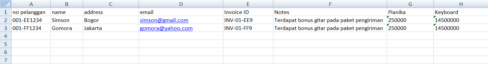
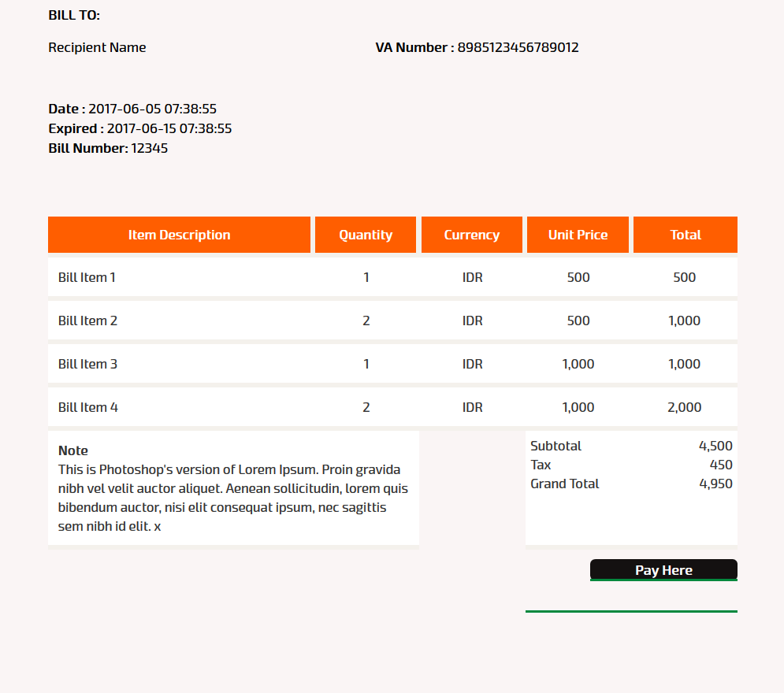

Introduction
FASPAY adalah penyedia online payment gateway yang membantu dan memberi solusi kepada online merchant untuk mempermudah proses pembayaran. Tujuan utama Faspay adalah memungkinkan merchant untuk menerima semua jenis pembayaran dalam bentuk apapun yang mereka inginkan baik itu pembayaran melalui platform transaksi debit maupun transaksi menggunakan kartu kredit
Faspay Business
Debit
Introduction
Faspay adalah online payment gateway yang menyediakan kemudahan untuk merchant dalam transaksi online. Faspay memberikan kemudahan dalam berbagai jenis pembayaran salah satunya adalah transaksi kartu debit dengan Faspay Debit. Faspay Debit merupakan salah satu produk Faspay yang memfasilitasi transaksi kartu debit di merchant.
Jenis payment channel yang bisa diintegrasikan dengan transaksi debit di Faspay :
| Kode | Payment Channel |
|---|---|
| 302 | TCash Web Checkout |
| 303 | XLTunai |
| 305 | Mandiri Ecash |
| 307 | Indosat Dompetku |
| 308 | BBM Money |
| 400 | BRIMoCash |
| 401 | BRI ePay |
| 402 | Permata Net / Permata Virtual Account |
| 405 | BCA KlikPay |
| 406 | Mandiri Clickpay |
| 407 | BII Mobile Banking |
| 408 | BII Virtual Account |
| 700 | CIMB Clicks |
| 701 | Danamon Online Banking |
| 702 | VA BCA |
| 703 | ATM Mandiri |
| 706 | Indomaret Payment point |
| 707 | Alfagroup |
| 708 | Danamon VA |
| 800 | BRI VA |
| 801 | BNI VA |
| 802 | Mandiri VA |
Pada Faspay pengelompokan transaksi dibedakan menjadi 2 tipe flow transaksi berdasarkan payment channel yaitu :
One Step Transaction
Jenis pembayaran di faspay yang dilakukan end to end (1 siklus) selesai di halaman yang sama dan dapat diselesaikan saat itu juga. Setelah pembeli selesai melakukan pembayaran di web Faspay, pembeli akan diredirect kembali ke halaman merchant. Pada one step transaction pembeli akan memberikan data pada halaman web merchant dan pembeli akan di redirect dari halaman web merchant ke halaman Faspay kemudian Faspay akan me redirect / mengarahkan pembeli ke halaman payment channel yang dipilih kemudian customer masukkan data / login (jika diperlukan) dan melakukan pembayaran pada payment channel yang dipilih. Setelah transaksi selesai channel transaksi akan memberikan notifikasi ke Faspay dan akan di informasikan ke pembeli apakah transaksi sukses atau gagal.

One Step Transaction Flow
Two Step Transaction
Jenis pembayaran yang diarahkan ke halaman Faspay untuk tata cara pembayaran dan pembeli tidak di redirect ke halaman pembayaran secara langsung. Transaksi bisa melalui media lain misal lewat ATM atau handset untuk pembayarannya. Pada two step transaction pembeli akan memberikan data pada halaman web merchant setelah itu pembeli akan di redirect dari halaman web merchant ke halaman Faspay. Halaman Faspay akan menampilkan pilihan payment channel yang dapat dipilih pembeli. Sistem akan menunggu pembeli menyelesaikan pembayaran yang dilakukan terpisah. Faspay akan menerima notifikasi pembayaran dari channel transaksi dan memberikan informasi notifikasi ke pembeli apakah transaksi sukses atau gagal.

Two Step Transaction Flow
Table Payment Channel Faspay
| One Step Transaction | Two Step Transaction |
|---|---|
| TCash Web Checkout (302) | XLTunai (303) |
| Mandiri Ecash (305) | BBM Money (308) |
| Indosat Dompetku (307) | BRIMoCash (400) |
| BRI ePay (401) | Permata Virtual Account (402) |
| Permata Net (402) | BII Mobile Banking (407) |
| BCA KlikPay (405) | BII Virtual Account (408) |
| Mandiri Clickpay (406) | VA BCA (702) |
| Credit Card (500), untuk CC dijelaskan di dokumen terpisah | ATM Mandiri (703) |
| CIMB Clicks & Rekening Ponsel (700) | Indomaret Payment point (706) |
| Danamon Online Banking (701) | Alfagroup (707) |
Flow Transaction Debit
- Pembeli / customer berbelanja di website merchant, memilih metode pembayaran kemudian check out & konfirmasi.
- Web merchant akan mengirimkan informasi transaksi ke server merchant.
- Server merchant akan mengirimkan informasi transaksi ke server faspay.
- Faspay meresponse informasi yang diberikan merchant dengan mengirimkan kembali data berupa TRX_ID (ID transaksi) ke server merchant.
- Server merchant akan mengirimkan kembali informasi transaksi ke server faspay berupa informasi TRX_ ID (ID transaksi) dan query string.
- Setelah customer melakukan pembayaran, faspay akan mengirimkan informasi ke merchant berupa status transaksi.
Debit Transaction Workflow
Table Flow Process Transaction
| Process | Case | Action |
|---|---|---|
| Post Data | Setelah pembeli konfirmasi Checkout dan pilih salah satu payment channel seperti tCash web, Mandiri Ecash, dompetku, BRI epay, CIMB Click, danamon online atau Permata NET untuk pembayaran. | Post data ke Faspay, kemudian merchant akan mendapatkan repsonse balikan dari faspay dan merchant simpan data TRX_ID dari response yang dikiirm faspay. |
| Redirect | Setelah merchant mendapatkan response data dari Faspay. | Merchant redirect post ke URL Faspay (URL endpoint API Faspay). |
| Payment Notification | Faspay akan memberikan notifikasi ke merchant ketika mendapat response dari payment channel (yang dipilih diatas). | Merchant menyiapkan URL untuk menerima notifikasi dari tCash. |
| Callback | Saat pembeli selesai melakukan pembayaran. | Merchant menyiapkan URL Notifikasi dan URL thank you page, faspay akan mengirim data ke URL tersebut. |
Flow Transaction Mynt ArtaJasa (304)
Flow Transaction Mynt ArtaJasa
Table Flow Process Transaction Mynt ArtaJasa (304)
| Process | Case | Action |
|---|---|---|
| Post Data | Setelah pembeli checkout dan pilih Mynt Artajasa untuk pembayaran | Post data ke Faspay, kemudian merchant akan mendapatkan repsonse balikan dari faspay dan merchant simpan data TRX_ID dari response yang dikiirm Faspay. |
| Redirect | Setelah merchant mendapatkan response data dari Faspay. | Merchant redirect post ke URL Faspay (URL endpoint API Faspay). |
| Payment Notification | Faspay akan memberikan notifikasi ke merchant ketika mendapat response dari Mynt Artajasa. | Merchant menyiapkan URL untuk menerima notifikasi dari Faspay. |
| Callback | Saat pembeli selesai melakukan pembayaran. | Merchant menyiapkan URL Notifikasi dan URL thank you page, Faspay akan mengirim data ke URL tersebut. |
Flow Transaction Mandiri Clickpay (406)
Mandiri ClickPay tidak memiliki halaman transaksi sendiri, jadi pembeli input data pada halaman Faspay dan Faspay akan mendapatkan notifikasi transaksi dari channel payment Mandiri ClickPay kemudian notifikasi tersebut diinformasikan kepada pembeli apakah transaksi sukses atau gagal.
Flow Transaction Mandiri Clickpay
Table Flow Process Transaction Mandiri Clickpay (406)
| Process | Case | Action |
|---|---|---|
| Post Data | Setelah pembeli checkout dan pilih Mandiri Clickpay untuk pembayaran | Post data ke Faspay, kemudian merchant akan mendapatkan repsonse balikan dari faspay dan merchant simpan data TRX_ID dari response yang dikiirm faspay. |
| Redirect | Setelah merchant mendapatkan response data dari Faspay. | Merchant redirect post ke URL Faspay (URL endpoint API Faspay). |
| Payment Notification | Faspay akan memberikan notifikasi ke merchant ketika mendapat response dari Mandiri ClickPay. | Merchant menyiapkan URL untuk menerima notifikasi dari Faspay. |
| Callback | Saat pembeli selesai melakukan pembayaran. | Merchant menyiapkan URL Notifikasi dan URL thank you page, faspay akan mengirim data ke URL tersebut. |
Flow Transaction BCA KlikPay (405)
Flow Transaction BCA KlikPay
Table Flow Process Transaction BCA KlikPay (405)
| Process | Case | Action |
|---|---|---|
| Post Data | Setelah pembeli checkout dan pilih Mandiri Clickpay untuk pembayaran | Post data ke Faspay, kemudian merchant akan mendapatkan repsonse balikan dari Faspay dan merchant simpan data TRX_ID dari response yang dikiirm Faspay. |
| Redirect | Setelah merchant mendapatkan response data dari Faspay. | Merchant redirect post ke URL BCA KlikPay langsung |
| Check Signature | Fungsi ini ditambahkan jika pembeli melakukan pembelian Installment / cicilan, pihak BCA akan inquiry transaksi dan mengirimkan signature data | Merchant menyiapkan URL untuk meneriman pesan / data dari faspay, dan faspay akan meminta merchant untuk melakukan pengecekan data signature yang dikirimkan. Jenis response hanya 2, yakni 1 untuk benar atau 0 untuk salah. |
| Check Authkey | Setelah BCA memotong dana di rekening pembeli, BCA akan mengirimkan authkey. | Merchant menyiapkan URL untuk meneriman pesan / data dari Faspay dan Faspay akan meminta merchant untuk melakukan pengecekan data authkey yang dikirimkan. Jenis response hanya 2, yakni 1 untuk benar atau 0 untuk salah. Hanya 1 URL untuk melakukan pengecekan signature / authkey dan Faspay hanya mengirimkan 1 parameter. |
| Payment Notification | Faspay akan memberikan notifikasi ke merchant ketika mendapat response dari BCA. | Merchant menyiapkan URL untuk menerima notifikasi dari faspay. |
| Callback | Saat pembeli selesai melakukan pembayaran. | Merchant menyiapkan URL Notifikasi dan URL thank you page dan BCA akan mengirim data ke URL tersebut. URL Notif dan thank you page ini di informasikan saat merchant redirect Post ke BCA. |
Flow Transaction Permata Net (402)
Flow Transaction Permata Net
Table Flow Process Transaction Permata Net (402)
| Process | Case | Action |
|---|---|---|
| Post Data | Setelah pembeli checkout dan pilih Permata Net untuk pembayaran | Post data ke Faspay kemudian merchant akan mendapatkan repsonse balikan dari Faspay dan merchant simpan data TRX_ID dari response yang dikirim Faspay. |
| Redirect | Setelah merchant mendapatkan response data dari Faspay. | Merchant redirect post ke URL Permata : URL – Development : http://dev.faspay.co.id/permatanet/paymentURL Production : http://web.faspay.co.id/permatanet/payment |
| Payment Notification | Faspay akan memberikan notifikasi ke merchant ketika mendapat response dari Permata Net. | Merchant menyiapkan URL untuk menerima notifikasi dari Faspay. |
| Callback | Saat pembeli selesai melakukan pembayaran. | Merchant menyiapkan URL Notifikasi dan URL thank you page dan Faspay akan mengirim data ke URL tersebut. |
Preparation
Sample Code
Sample code berguna untuk proses integrasi antara website merchant dengan Faspay. Sample code ini yang digunakan sistem merchant untuk berkomunikasi dengan sistem Faspay, PIC teknis merchant menggunakan sample code untuk me-redirect data yang dikirim oleh merchant ke Faspay.
Response Redirect Post
Response redirect adalah response yang dikirimkan Faspay atas transaksi yang sebelumnya dikirimkan merchant. Jika terdapat parameter yang belum sesuai / nilainya salah, maka transaksi tersebut akan di reject di sistem Faspay.
URL Callback
URL Callback adalah response status pembayaran yang dikirimkan Faspay ke merchant. Berguna untuk menampilkan berhasil atau tidaknya pembayaran dilakukan oleh customer merchant.
Integration
Integrasi faspay debit memanfaatkan parameter untuk menjalankan integrasinya. Komunikasi antara sistem merchant dengan system Faspay menggunakan XML dengan melibatkan API (Application Program Interface) yang telah disediakan oleh Faspay. API pada Faspay adalah sebuah web service yang disediakan oleh Faspay dan digunakan untuk berkomunikasi dengan sistem web merchant, dimana merchant juga akan menyediakan API untuk bisa saling berkomunikasi dengan Faspay misalkan Faspay mengirimkan status pembayaran / payment melalui API, kemudian API merchant menerima dan proses sebaliknya. Faspay mendukung integrasi dengan merchant yang ingin mengaplikasikan payment channel yang termasuk kedalam platform transaksi debit. Proses integrasi debit dibagi menjadi 4 langkah yaitu : 1. POST Saat customer konfirmasi checkout dari website merchant, merchant akan melakukan post data XML ke server Faspay dan akan di response oleh Faspay berupa XML response yang berisi informasi TRX_ID (ID transaksi). 2. REDIRECT Setelah menerima XML response dari Faspay dan TRX_ID transaksi, kemudian merchant melakukan kembali redirect ke URL Faspay yang disertai dengan query string. 3. PAYMENT NOTIFICATION Setelah proses redirect dan pembeli sudah melakukan pembayaran, server Faspay akan mengirimkan XML data berisi status payment terakhir (payment notification) ke server merchant. Merchant harus menyediakan 1 URL untuk menerima xml status transaksi dari Faspay. 4. CALLBACK Merchant harus menyediakan 1 URL untuk proses callback dan thank you page yang akan di kirimkan oleh Faspay ke merchant setelah transaksi selesai (pembeli selesai melakukan pembayaran).

Alur Integrasi Faspay Debit
Payment Channel Inquiry
Proses ini digunakan untuk melihat payment channel list yang digunakan oleh merchant. Proses inquiry dilakukan saat merchant request parameter dan kemudian Faspay akan merespon permintaan tersebut.
URL Endpoint Payment Channel Inquiry
URL Endpoint ini digunakan sebagai URL balikan yang akan memproses data yang di request dari system merchant. Terdapat 2 URL yang perlu digunakan yaitu Production dan Development. Untuk pelaksanaan testing atau UAT dapat menggunakan URL development.
| Production | Development |
|---|---|
https://web.faspay.co.id/pws/100001/382xx00010100000 |
http://dev.faspay.co.id/pws/100001/182xx00010100000 |
XML Request Parameter Payment Channel Inquiry
Code XML Request Payment Channel Inquiry
<?xml version="1.0"?>
<faspay>
<request>Request List of Payment Gateway</request>
merchant_id>31019</merchant_id>
<merchant>STORE</merchant>
<signature>18a157f7dd95df490f28d62e3ec7bf5bb9911be1</signature>
</faspay>
XML request parameter merupakan parameter-parameter yang harus disediakan oleh system merchant untuk dapat integrasi dengan system Faspay.
| Parameter | Data Type | M/O/C | Description |
|---|---|---|---|
| Request | Alfanumeric (50) | Optional | Request Description |
| Merchant_id | Numeric (5) | Mandatory | Merchant Code |
| Merchant | Alfanumeric (32) | Optional | Merchant Name |
| Signature | Alfanumeric | Mandatory | sha1(md5(user_id+password)) |
XML Response Parameter Payment Channel Inquiry
Code XML Response Payment Channel Inquiry
<?xml version="1.0" encoding="UTF-8"?>
<faspay>
<response>Request List of Payment Gateway</response>
<merchant_id>31019</merchant_id>
<merchant>EVOUCHER</merchant>
<payment_channel>
<pg_code>405</pg_code>
<pg_name>BCA klikPay</pg_name>
</payment_channel>
<payment_channel>
<pg_code>400</pg_code>
<pg_name>BRI MOBILE BANKING</pg_name>
</payment_channel>
<payment_channel>
<pg_code>401</pg_code>
<pg_name>BRI NET-PAY</pg_name>
</payment_channel>
<payment_channel>
<pg_code>402</pg_code>
<pg_name>Permata</pg_name>
</payment_channel>
<payment_channel>
<pg_code>301</pg_code>
<pg_name>TELKOMSEL TCash</pg_name>
</payment_channel>
<response_code>00</response_code>
<response_desc>Sukses</response_desc>
</faspay>
Response parameter merupakan parameter-parameter yang akan dikirimkan oleh system Faspay sebagai respon atas request parameter yang sudah dikirimkan oleh system merchant. Jika ada parameter yang belum sesuai / nilainya salah maka transaksi tersebut akan di reject di sistem Faspay.
| Parameter | Data Type | M/O/C | Description |
|---|---|---|---|
| Response | Alfanumeric (50) | Optional | Response Description |
| Merchant_id | Numeric (5) | Mandatory | Merchant Code |
| Merchant | Alfanumeric (32) | Optional | Merchant Name |
| Code | Numeric (3) | Mandatory | Payment Channel Code |
| Name | Alfanumeric (32) | Mandatory | Payment Channel Name |
| Response_Code | Alfanumeric (2) | Mandatory | Response Code |
| Response_Desc | Alfanumeric (32) | Mandatory | Response Description |
Post Data
Proses ini digunakan untuk melihat mengirimkan data transaksi dari merchant ke Faspay. Proses post data ini dilakukan saat merchant request parameter dan kemudian Faspay akan merespon permintaan tersebut.
URL Endpoint Post Data
URL Endpoint ini digunakan sebagai URL balikan yang akan memproses data yang di post dari system merchant. Terdapat 2 URL yang perlu digunakan yaitu Production dan Development. Untuk pelaksanaan testing atau UAT dapat menggunakan URL development.
| Production | Development |
|---|---|
https://web.faspay.co.id/pws/300002/383xx00010100000 |
http://dev.faspay.co.id/pws/300002/183xx00010100000 |
XML Request Parameter Post Data
Code XML Request Post Data
<faspay>
<request>Post Data Transaksi</request>
<merchant_id>31004</merchant_id>
<merchant>STORE</merchant>
<bill_no>31004001</bill_no>
<bill_reff>22222222</bill_reff>
<bill_date>2012-06-06 14:30:34</bill_date>
<bill_expired>2013-02-02 15:30:34</bill_expired>
<bill_desc>Pembelian Barang</bill_desc>
<bill_currency>IDR</bill_currency>
<bill_gross>900000</bill_gross>
<bill_tax>0</bill_tax>
<bill_miscfee>10000</bill_miscfee>
<bill_total>1000000</bill_total>
<cust_no>dany123</cust_no>
<cust_name>dany permadani</cust_name>
<payment_channel>400</payment_channel>
<pay_type>1</pay_type>
<bank_userid>bot123456</bank_userid>
<msisdn>62862345678909</msisdn>
<email>support@mediaindonusa.com</email>
<terminal>10</terminal>
<billing_address>Jl Sabang 37</billing_address>
<billing_address_city>Jakarta</billing_address_city>
<billing_address_region>DKI Jakarta</billing_address_region>
<billing_address_state>Indonesia</billing_address_state>
<billing_address_poscode>10170</billing_address_poscode>
<billing_address_country_code>ID</billing_address_country_code>
<receiver_name_for_shipping>Tompi</receiver_name_for_shipping>
<shipping_address>Jl. Sabang 37</shipping_address>
<shipping_address_city>Jakarta</shipping_address_city>
<shipping_address_region>DKI Jakarta</shipping_address_region>
<shipping_address_state>Indonesia</shipping_address_state>
<shipping_address_poscode>10170</shipping_address_poscode>
<item>
<product>Buku Cerita</product>
<qty>2</qty>
<amount>2000000</amount>
<payment_plan>01</payment_plan>
<merchant_id></merchant_id>
<tenor>00</tenor>
</item>
<item>
<product>Buku Gambar</product>
<qty>1</qty>
<amount>1000000</amount>
<payment_plan>02</payment_plan>
<tenor>03</tenor>
<merchant_id></merchant_id>
</item>
<item>
<product>Buku Tulis</product>
<qty>4</qty>
<amount>1500000</amount>
<payment_plan>01</payment_plan>
<tenor>06</tenor>
<merchant_id></merchant_id>
</item>
<reserve1></reserve1>
<reserve2></reserve2>
<signature>be8791ac5f10bb042834896598bfc6bb9aadcbf9</signature>
</faspay>
XML request parameter merupakan parameter-parameter yang harus disediakan oleh system merchant untuk dapat integrasi post data dengan system Faspay.
| Parameter | Data Type | M/O/C | Description |
|---|---|---|---|
| Request | Alfanumeric (50) | Mandatory | Request Description |
| Merchant_id | Numeric (5) | Mandatory | Merchant Code From Faspay = BOI |
| Merchant | Alfanumeric (32) | Mandatory | Merchant Name |
| bill_no | Alfanumeric (32) | Mandatory | Order Number |
| bill_reff | Alfanumeric (32) | Optional | Booking Number/reffrence (can fill same with order no) |
| bill_date | Datetime YYYY-MM-DD HH:MM:SS | Mandatory | Transaction/ Order Date |
| bill_expired | Datetime YYYY-MM-DD HH:MM:SS | Mandatory | Payment Expiring Date |
| bill_desc | Alfanumeric (128) | Mandatory | Transaction Description |
| bill_currency | Alfanumeric (3) | Mandatory | Currency, Mustbe ‘IDR’ |
| bill_gross | Numeric | Optional | Order Nominal without tax |
| bill_tax | Numeric | Optional | Tax (IDR) |
| bill_miscfee | Numeric | Optional | Miscellaneous fee |
| bill_total | Numeric | Mandatory | Total Nominal |
| payment_channel | Numeric (3) | Mandatory | Payment Channel Code |
| pay_type | Alfanumeric (1) | Mandatory | Payment code : 1: Full Settlement 2: Installment 3: Mixed 1 & 2 |
| cust_no | Alfanumeric (32) | Mandatory | Customer Number |
| cust_name | Alfanumeric (32) | Optional | Customer Name |
| bank_user_id | Alfanumeric (16) | Optional | Customer User ID on bank’s services (ex : KlikBCA User Id) |
| Msisdn | Numeric | Mandatory | Customer Mobile Phone |
| Alfanumeric (128) | Mandatory | ||
| Terminal | Numeric (2) | Mandatory | Terminal Origin 10. Web 20. MobApp Blackberry 21. MobApp Android 22. MobAppiOS 23. MobApp Windows 24. MobApp Symbian 30. TabApp BlackBerry 31. TabApp Android 32. TabAppiOS 33. TabApp Windows |
| billing_address | Alfanumeric | Optional | billing_address |
| billing_address_city | Alfanumeric | Optional | Billing City |
| billing_address_region | Alfanumeric | Optional | Billing Addres Region |
| billing_address_state | Alfanumeric | Optional | Billing Address State |
| billing_address_poscode | Alfanumeric | Optional | Billing Address Pos Code |
| billing_address_country_code | Alfanumeric | Optional | Billing Address Country Code |
| receiver_name_for_shipping | Alfanumeric | Optional | Receiver Name |
| shipping_address | Alfanumeric | Optional | Shipping Address |
| shipping_address_city | Alfanumeric | Optional | Shipping Address City |
| shipping_address_region | Alfanumeric | Optional | Shipping Address Region |
| shipping_address_state | Alfanumeric | Optional | Shipping Address State |
| shipping_address_poscode | Alfanumeric | Optional | Shipping Address Pos Code |
| shipping_address_country_code | Alfanumeric | Optional | Shipping Address Country Code |
| Product | Alfanumeric (50) | Mandatory | Item Name |
| Amount | Numeric | Mandatory | Item Price |
| Qty | Alfanumeric (50) | Mandatory | Item Quantity |
| payment_plan | Numeric (1) | Mandatory | Payment code 1: Full Settlement 2: Installement |
| tenor | Numeric (2) | Mandatory | Installment Tenor 03: 3 months 06: 6 months 12: 12 months |
| merchant_id | Numeric (5) | Mandatory | Merchant Id From Payment Channel ex : MID from BCA Credit Card |
| Reserve1 | Alfanumeric (50) | Optional | |
| Reserve2 | Alfanumeric (50) | Optional | |
| Signature | Alfanumeric (100) | Mandatory | sha1(md5(user_id merchant + password merchant + bill_no)) |
XML Response Parameter Post Data
Code XML Response Post Data
<?xml version="1.0" encoding="UTF-8"?>
<faspay>
<response>Transmisi Info Detil Pembelian</response>
<trx_id>3100440033666278</trx_id>
<merchant_id>31004</merchant_id>
<merchant>STORE</merchant>
<bill_no>31004001</bill_no>
<bill_items>
<product>Buku Cerita</product>
<qty>2</qty>
<amount>2000000</amount>
<payment_plan>01</payment_plan>
<merchant_id/>
<tenor>00</tenor>
</bill_items>
<bill_items>
<product>Buku Gambar</product>
<qty>1</qty>
<amount>1000000</amount>
<payment_plan>02</payment_plan>
<tenor>03</tenor>
<merchant_id/> </bill_items>
<bill_items>
<product>Buku Tulis</product>
<qty>4</qty>
<amount>1500000</amount>
<payment_plan>01</payment_plan>
<tenor>06</tenor>
<merchant_id/>
</bill_items>
<response_code>00</response_code>
<response_desc>Sukses</response_desc>
</faspay>
Response parameter merupakan parameter-parameter yang akan dikirimkan oleh system Faspay sebagai respon atas request parameter yang sudah dikirimkan oleh system merchant. Jika ada parameter yang belum sesuai / nilainya salah maka transaksi tersebut akan di reject di sistem Faspay.
| Parameter | Data Type | M/O/C | Description |
|---|---|---|---|
| Response | Alfanumeric (50) | Optional | Response Name |
| trx_id | Alfanumeric (16) | Mandatory | Transaction Id (Issued/generated by Media Indonusa) to used when make a payment in payment channel |
| Merchant_id | Numeric (5) | Mandatory | Merchant Code |
| Merchant | Alfanumeric (32) | Mandatory | Merchant Name |
| bill_no | Alfanumeric (32) | Mandatory | Order No |
| Response_Code | Numeric (2) | Mandatory | Response Code 00 Success |
| Response_Desc | Alfanumeric (32) | Mandatory | Response Code Description |
Redirect Process
Redirect process merupakan proses setelah merchant menerima xml response dari Faspay, merchant menerima TRX_ID (ID transaksi) dan kemudian merchant menyimpan TRX_ID tersebut dan melakukan redirect.
Flow Redirect Process
URL Endpoint Redirect Process
URL Endpoint ini digunakan sebagai URL balikan yang akan memproses data yang di redirect dari system merchant. Terdapat 2 URL yang perlu digunakan yaitu Production dan Development. Untuk pelaksanaan testing atau UAT dapat menggunakan URL development.
| Production | Development |
|---|---|
https://web.faspay.co.id/pws/100003/2830000010100000/<sign>?queryString |
https://dev.faspay.co.id/pws/100003/2830000010100000/<sign>?queryString |
XML Request Parameter Redirect Process
XML request parameter merupakan parameter-parameter yang harus disediakan oleh system merchant untuk dapat redirect process dengan system Faspay.
| Parameter | Data Type | M/O/C | Description |
|---|---|---|---|
| trx_id | Alfanumeric (16) | Mandatory | Transaction Id (Issued/generated by Media Indonusa) to used when make a payment in payment channel |
| Merchant_id | Numeric (5) | Mandatory | Merchant Code |
| bill_no | Alfanumeric (16) | Mandatory | Order Number |
| Signature | Alfanumeric | Mandatory | sha1(md5((user_id + password + bill_no)) |
Inquiry Payment Status
Inquiry payment status merupakan proses pengecekan status pembayaran dari Faspay. Merchant sebelumnya harus sudah melakukan post redirect URL ke Faspay.
URL Endpoint Inquiry Payment Status
URL Endpoint ini digunakan sebagai URL balikan yang akan memproses data yang di inquiry dari system merchant. Terdapat 2 URL yang perlu digunakan yaitu Production dan Development. Untuk pelaksanaan testing atau UAT dapat menggunakan URL development.
| Production | Development |
|---|---|
https://web.faspay.co.id/pws/100004/383xx00010100000 |
http://dev.faspay.co.id/pws/100004/183xx00010100000 |
XML Request Parameter Inquiry Payment Status
Code XML Request Inquiry Payment Status
<faspay>
<request>Inquiry Status Payment</request>
<trx_id>3100440033666278</trx_id>
<merchant_id>31004</merchant_id>
<bill_no>31004001</bill_no>
<signature>be8791ac5f10bb042834896598bfc6bb9aadcbf9</signature>
</faspay>
XML request parameter inquiry payment status merupakan parameter-parameter yang harus disediakan oleh system merchant untuk dapat melakukan inquiry payment status ke system Faspay.
| Parameter | Data Type | M/O/C | Description |
|---|---|---|---|
| Request | Alfanumeric (50) | Optional | Request Description |
| trx_id | Alfanumeric (16) | Mandatory | Transaction Id (Issued/generated by Media Indonusa) to used when make a payment in payment channel |
| Merchant_id | Numeric (5) | Mandatory | Merchant Code |
| Merchant | Alfanumeric (32) | Optional | Merchant Name |
| bill_no | Alfanumeric (16) | Mandatory | Order Number |
| Signature | Alfanumeric | Mandatory | sha1(md5((user_id + password + bill_no)) |
XML Response Parameter Inquiry Payment Status
Code XML Response Inquiry Payment Status
<?xml version="1.0" encoding="UTF-8"?>
<faspay>
<response>Inquiry Status Payment</response>
<trx_id>3100440033666278</trx_id>
<merchant_id>31004</merchant_id>
<merchant>GONLA</merchant>
<bill_no>31004001</bill_no>
<payment_trx_id></payment_trx_id>
<payment_date></payment_date>
<payment_status_code>0</payment_status_code>
<payment_status_desc>Belum diproses</payment_status_desc>
<response_code>00</response_code>
<response_desc>Sukses</response_desc>
</faspay>
Response parameter merupakan parameter-parameter yang akan dikirimkan oleh system Faspay sebagai respon atas request parameter yang sudah dikirimkan oleh system merchant. Jika ada parameter yang belum sesuai / nilainya salah maka transaksi tersebut akan di reject di sistem Faspay.
| Parameter | Data Type | M/O/C | Description |
|---|---|---|---|
| Response | Alfanumeric (50) | Optional | Response Name |
| trx_id | Alfanumeric (16) | Mandatory | Transaction Id (Issued/generated by Media Indonusa) to used when make a payment in payment channel |
| Merchant_id | Numeric (6) | Mandatory | Merchant Code |
| Merchant | Alfanumeric (32) | Optional | Merchant Name |
| bill_no | Alfanumeric (32) | Mandatory | Order Number |
| payment_trx_id | Alfanumeric (16) | Mandatory | Payment Reff (from Payment Channel) |
| payment_date | Date | Mandatory | Payment Date (from Payment Channel) |
| payment_status_code | Numeric (1) | Mandatory | Kode Status 0 Belum diproses 1 Dalam proses 2 Payment Sukses 4 Payment Reserval 8 Payment Cancelled 9 Unknown |
| payment_status_desc | Alfanumeric (32) | Mandatory | Description Status |
| response_code | Alfanumeric (2) | Mandatory | Response Code 00 Success |
| response_desc | Alfanumeric (32) | Mandatory | Response Description |
Cancel Transaction
Merupakan proses untuk mengecek jika terdapat transaksi yang dibatalkan. Pengecekan dilakukan dengan post xml ke system Faspay.
URL Endpoint Cancel Transaction
URL Endpoint ini digunakan sebagai URL balikan yang akan memproses data yang di inquiry dari system merchant. Terdapat 2 URL yang perlu digunakan yaitu Production dan Development. Untuk pelaksanaan testing atau UAT dapat menggunakan URL development.
| Production | Development |
|---|---|
https://web.faspay.co.id/pws/100004/383xx00010100000 |
http://dev.faspay.co.id/pws/100004/183xx00010100000 |
XML Request Parameter Cancel Transaction
Code XML Request Inquiry Cancel Transaction
<faspay>
<request>Canceling Payment</request>
<trx_id>3100440033666278</trx_id>
<merchant_id>31004</merchant_id>
<merchant>GONLA</merchant>
<bill_no>31004001</bill_no>
<payment_cancel>Barang Habis</payment_cancel>
<signature>be8791ac5f10bb042834896598bfc6bb9aadcbf9</signature>
</faspay>
XML request parameter cancel transaction merupakan parameter-parameter yang harus disediakan oleh system merchant untuk dapat melakukan inquiry cancel transaction ke system Faspay.
| Parameter | Data Type | M/O/C | Description |
|---|---|---|---|
| Request | Alfanumeric (50) | Optional | Request Description |
| trx_id | Numeric (16) | Mandatory | Transaction Id (Issued/generated by Media Indonusa) to used when make a payment in payment channel |
| merchant_id | Numeric (5) | Mandatory | Merchant Code |
| Merchant | Alfanumeric (32) | Optional | Merchant Name |
| bill_no | Alfanumeric (32) | Mandatory | Order Number |
| payment_cancel | Alfanumeric (50) | Mandatory | Cancellation Description |
| Signature | Alfanumeric | Mandatory | sha1(md5(user_id+password+bill_no)) |
XML Response Parameter Inquiry Cancel Transaction
Code XML Response Inquiry Cancel Transaction
<faspay>
<request>Canceling Payment</request>
<trx_id>3100440033666278</trx_id>
<merchant_id>31004</merchant_id>
<merchant>GONLA</merchant>
<bill_no>31004001</bill_no>
<payment_cancel>Barang Habis</payment_cancel>
<signature>be8791ac5f10bb042834896598bfc6bb9aadcbf9</signature>
</faspay>
Response parameter merupakan parameter-parameter yang akan dikirimkan oleh system Faspay sebagai respon atas request parameter yang sudah dikirimkan oleh system merchant. Jika ada parameter yang belum sesuai / nilainya salah maka transaksi tersebut akan di reject di sistem Faspay.
| Parameter | Data Type | M/O/C | Description |
|---|---|---|---|
| Response | Alfanumeric (50) | Optional | Response Name |
| trx_id | Alfanumeric (16) | Mandatory | Transaction Id (Issued/generated by Media Indonusa) to used when make a payment in payment channel |
| Merchant_id | Numeric (5) | Mandatory | Merchant Code |
| Merchant | Alfanumeric (32) | Optional | Merchant Name |
| bill_no | Alfanumeric (32) | Mandatory | Order Number |
| trx_status_code | Numeric | Mandatory | Transaction Status |
| trx_status_desc | Alfanumeric (32) | Mandatory | Transaction Status Description |
| payment_status_code | Numeric (1) | Mandatory | Payment status code |
| payment_status_desc | Alfanumeric (32) | Mandatory | Payment Status Description |
| payment_cancel_msg | Alfanumeric (50) | Mandatory | Payment Cancel Reason’s Message |
| payment_cancel_date | Datetime | Mandatory | Payment Cancel Date |
| response_code | Alfanumeric (2) | Mandatory | Response Code 00 Success |
| response_desc | Alfanumeric (32) | Mandatory | Response Description |
Payment Notification
Merupakan proses untuk mengirimkan notifikasi pembayaran dari Faspay ke merchant. Payment notifikasi dikirim melalui URL merchant yang sebelumnya sudah disiapkan, yaitu URL untuk menerima hit notifikasi transaksi. Faspay akan mengirim response payment notif sebanyak 3 kali.
URL Endpoint Payment Notification
URL Endpoint ini digunakan sebagai URL balikan yang akan memproses data yang di inquiry dari system merchant. Terdapat 2 URL yang perlu digunakan yaitu Production dan Development. Untuk pelaksanaan testing atau UAT dapat menggunakan URL development.
URL Endpoint
URL – Merchant : http(s)://Merchant>/api
XML Request Parameter Payment Notification
Code XML Request Inquiry Payment Notification
<faspay>
<request>Payment Notification</request>
<trx_id>111222</trx_id>
<merchant_id>111111</merchant_id>
<merchant>ABC, PT</merchant>
<bill_no>12345678</bill_no>
<payment_reff>1234567</payment_reff>
<payment_date>2012-01-01 15:17:30</payment_date>
<payment_status_code></payment_status_code>
<payment_status_desc>Description status</payment_status_desc>
<signature>Description status</signature>
<amount>100000</amount>
</faspay>
XML request parameter payment notification merupakan parameter-parameter yang dikirimkan Faspay ke merchant untuk inquiry payment notification.
| Parameter | Data Type | M/O/C | Description |
|---|---|---|---|
| Request | Alfanumeric (50) | Optional | Request Name |
| trx_id | Alfanumeric (16) | Mandatory | Transaction Id (Issued/generated by Media Indonusa) to used when make a payment in payment channel |
| merchant_id | Numeric (5) | Mandatory | Merchant Code |
| Merchant | Alfanumeric (32) | Mandatory | Merchant Name |
| bill_no | Alfanumeric (32) | Mandatory | Order Number |
| payment_reff | Alfanumeric (32) | Mandatory | would be fill if the payment has been made |
| Payment_date | Datetime YYYY-MM-DD HH:MM:SS | Mandatory | customer payment date would be fill if the payment has been made |
| payment_status_code | Char (1) | Mandatory | Payment Status 0 Belum diproses 1 Dalam proses 2 Payment Sukses 3 Payment Gagal 4 Payment Reversal 7 Payment Expired 8 Payment Cancelled 9 Unknown |
| payment_status_desc | Alfanumeric (32) | Mandatory | Payment description |
| Signature | Alfanumeric | Mandatory | Sha1(md5(user_id+password + bill_no + payment_status_code)) |
| Amount | Numeric | Mandatory | amount (only if the system is using Open Amount method - VA Permata [402]) |
XML Response Parameter Inquiry Payment Notification
Code XML Response Inquiry Payment Notification
<faspay>
<response>Payment Notification</response>
<trx_id>111222</trx_id>
<merchant_id>111111</merchant_id>
<bill_no></bill_no>
<response_code>00</response_code>
<response_desc>Sukses</response_desc>
<response_date>2012-01-01 15:17:30</response_date>
</faspay>
Response parameter merupakan parameter-parameter yang akan dikirimkan oleh system Faspay sebagai respon atas request parameter yang sudah dikirimkan oleh system merchant. Jika ada parameter yang belum sesuai / nilainya salah maka transaksi tersebut akan di reject di sistem Faspay.
| Parameter | Data Type | M/O/C | Description |
|---|---|---|---|
| trx_id | Alfanumeric (32) | Mandatory | Transaction Id (Issued/generated by Media Indonusa) to used when make a payment in payment channel |
| Merchant_id | Numeric (15) | Mandatory | Channel Code From Faspay |
| bill_no | Alfanumeric (32) | Mandatory | Order Number |
| response_code | Alfanumeric (2) | Mandatory | Response code |
| response_desc | Alfanumeric (50) | Mandatory | Response Description |
| response_date | Datetime | Mandatory | Response date |
URL Callback
URL Callback ini merupakan proses jika transaksi merchant sudah selesai dibayar oleh pelanggan dan merchant sudah mendapatkan notifikasi status transaksi. Selanjutnya pihak bank (payment channel) akan otomatis meredirect ke URL callback merchant untuk menginformasikan bahwa transaksi sudah selesai. URL callback di provide oleh merchant.
Contoh URL merchant yang di hit oleh Faspay
http(s)://[theMerchantUrl]?merchant_id=111111&bill_no=12345678&trx_id=000123456789&bill_reff=222222&bill_amount=20000&payment_reff=RB1234567890&payment_date=2012-02-04 14:30:54&bank_user_name= AL*****NO&status=2
XML Request Parameter URL Notification
XML request parameter URL notification merupakan parameter-parameter yang dikirimkan Faspay ke merchant untuk inquiry URL notification.
| Parameter | Data Type | M/O/C | Description |
|---|---|---|---|
| merchant_id | Numeric (15) | Mandatory | Merchant Code |
| bill_no | Alfanumeric (32) | Mandatory | Order Number |
| Request | Alfanumeric (50) | Optional | Request Name |
| trx_id | Alfanumeric (32) | Mandatory | Transaction Id (Issued/generated by Media Indonusa) to used when make a payment in payment channel |
| bill_reff | Alfanumeric (20) | Mandatory | bill_refference |
| bill_total | Numeric | Mandatory | bill_total |
| payment_reff | Alfanumeric (16) | Mandatory | Payment reference |
| Payment_date | Datetime | Mandatory | Payment date |
| bank_user_name | Alfanumeric (40) | Mandatory | Channel customer name |
| Status | Char (1) | Mandatory | Payment status |
Integrasi BCA KlikPay
Integrasi transaksi debit untuk payment channel BCA KlikPay pada dasarnya sama dengan payment channel lain hanya terdapat perbedaan pada proses redirect dan signature & Authkey.
Redirect BCA KlikPay
Pada redirect BCA KlikPay setelah server merchant post data ke Faspay dan Faspay mengirim response ke merchant maka server merchant akan langsung di redirect ke BCA KlikPay.
URL Redirect BCA
http://dev.faspay.co.id/redirectbca
Setelah merchant post data maka akan langsung redirect ke BCA KlikPay
Parameter Redirect BCA KlikPay
Code PHP Integrasi BCA KlikPay
$string = '<form method="post" name="form" action=" http://faspaydev.mediaindonusa.com/redirectbca ">';
$post = http_build_query(array(
"klikPayCode" => $rst['boi_code'],
"transactionNo" => $rst['trx_uid'],
"totalAmount" => $totalAmount,
"currency" => $rst['bill_currency_uid'],
"payType" => $paytype,
"callback" => $callback,
"transactionDate" => $rst['bill_date'],
"descp" => $rst['bill_desc'],
"miscFee" => $miscFee,
"signature" => $sig
));
if ($post != null) {
foreach ($post as $name=>$value) {
$string .= '<input type="hidden" name="'.$name.'" value="'.$value.'">';
}
}
$string .= '</form>';
$string .= '<script> document.form.submit();</script>';
echo $string;
exit;
XML parameter redirect BCA KlikPay merupakan parameter-parameter yang dikirimkan Faspay ke merchant untuk inquiry redirect BCA KlikPay.
| Parameter | Data Type | M/O/C | Description |
|---|---|---|---|
| klikPayCode | String (10) | Mandatory | KlikPayCode |
| transactionNo | String (18) | Mandatory | Transaction Number |
| totalAmount | Numeric (12) | Mandatory | Total Amount |
| Currency | String (5) | Mandatory | Currency |
| payType | String (2) | Mandatory | Payment Type |
| Callback | String (100) | Mandatory | Call Back URL |
| transactionDate | Datetime | Mandatory | Transaction Time |
| Desc | String (60) | Mandatory | Description |
| miscFee | String (12) | Optional | Miscellanous Fee |
| Signature | String (10) | Optional | Signature |
Signature & Authkey
Code PHP Signature & authkey BCA KlikPay
private function genKeyId($clearKey) {
return strtoupper(bin2hex($this->str2bin($clearKey)));
private function genSignature($klikPayCode, $transactionDate, $transactionNo, $amount, $currency, $keyId) {
/*
* Signature Step 1
*/
$tempKey1 = $klikPayCode . $transactionNo . $currency . $keyId;
$hashKey1 = $this->getHash($tempKey1);
//echo "tempKey1 : " . $tempKey1;
//echo " hasKey1 : " . $hashKey1 . "<br>";
/*
* Signature Step 2
*/
$expDate = explode("/",substr($transactionDate,0,10));
$strDate = $this->intval32bits($expDate[0] . $expDate[1] . $expDate[2]);
$amt = $this->intval32bits($amount);
$tempKey2 = $strDate + $amt;
$hashKey2 = $this->getHash((string)$tempKey2);
//echo "tempKey2 : " . $tempKey2;
//echo " hashKey2 : " . $hashKey2 . "<br>";
/*
* Generate Key Step 3
*/
$signature = abs($hashKey1 + $hashKey2);
return $signature;
}
private function genAuthKey($klikPayCode, $transactionNo, $currency, $transactionDate, $keyId) {
/*
* Step 1 - Padding
*/
$klikPayCode = str_pad($klikPayCode, 10, "0");
$transactionNo = str_pad($transactionNo, 18, "A");
$currency = str_pad($currency, 5, "1");
/*
* Step 2
*/
$value_1 = $klikPayCode . $transactionNo . $currency . $transactionDate . $keyId;
/*
* Step 3
*/
$hash_value_1 = strtoupper(md5($value_1));
/*
* Step 4
*/
if (strlen($keyId) == 32)
$key = $keyId . substr($keyId,0,16);
else if (strlen($keyId) == 48)
$key = $keyId;
// hex encode the return value
return strtoupper(bin2hex(mcrypt_encrypt(MCRYPT_3DES, $this->hex2bin($key), $this->hex2bin($hash_value_1), MCRYPT_MODE_ECB)));
}
private function hex2bin($data) {
$len = strlen($data);
return pack("H" . $len, $data);
}
private function str2bin($data) {
$len = strlen($data);
return pack("a" . $len, $data);
}
private function intval32bits($value) {
if ($value > 2147483647)
$value = ($value - 4294967296);
else if ($value < -2147483648)
$value = ($value + 4294967296);
return $value;
}
private function getHash($value) {
$h = 0;
for ($i = 0;$i < strlen($value);$i++) {
$h = $this->intval32bits($this->add31T($h) + ord($value{$i}));
}
return $h;
}
private function add31T($value) {
$result = 0;
for($i=1;$i <= 31;$i++) {
$result = $this->intval32bits($result + $value);
}
return $result;
}
Penambahan fungsi signature digunakan hanya untuk transaksi BCA KlikPay Installment atau Cicilan sedangkan authkey digunakan untuk transaksi BCA KlikPay full payment dan installment / cicilan. Setelah redirect masuk ke BCA KlikPay dan pembeli melakukan pembayaran, BCA akan mengirimkan permintaan pengecekan signature & authkey ke merchant untuk pengecekan ini merchant harus menyediakan API seperti dibawah ini :
Signature
http(s)://merchant/<path>?trx_id=12345&signature=12345
Response : 1 (correct) or 0 (incorrect)
AuthKey
http(s)://merchant/<path>?trx_id=12345&authkey=12345
Flow Check Signature Response
Integration With eCommerce Web Template / CMS
Pada bagian ini akan dijelaskan bagaimana integrasi antara web template eCommerce dengan system Faspay. Untuk merchant yang menggunakan web template, Faspay akan memberikan file plugin yang harus di copy atau diinstall oleh merchant, untuk saat ini Faspay sudah menyediakan beberapa plugin untuk beberapa web template eCommerce diantaranya :
- Magento
- OpenCart
- Prestashop
- WooCommerce
- Dan beberapa web template lainnya (on progress).
Plugin dapat di copy maupun di install ke direktori folder web plugin yang digunakan merchant. Khusus untuk web plugin WooCommerce & Prestashop, plugin yang kami berikan harus di install manual dari web admin.
Magento
Ganti line berikut diantara fungsi IF
<label for="p_method_<?php echo $_code ?>
"><?php echo $this->escapeHtml($this->getMethodTitle($_method)) ?>
<?php echo $this->getMethodLabelAfterHtml($_method) ?>
</label>
Diganti dengan
<?php if (substr($_code,0,6) =='faspay'): ?>
<label for="p_method_<?php echo $_code ?>"><img src="<?php echo Mage::getBaseUrl(Mage_Core_Model_Store::URL_TYPE_MEDIA)."faspay/icon_".$_code.".png" ?>" alt="<?php echo $this->__('Faspay'); ?>" />
<?php else: ?>
<label for="p_method_<?php echo $_code ?>"><?php echo $this->escapeHtml($this->getMethodTitle($_method)) ?>
<?php echo $this->getMethodLabelAfterHtml($_method) ?></label>
<?php endif; ?>
Tambahkan line berikut pada savePaymentAction controller sebelum line
$this->getResponse()->setBody(Mage::helper('core')->jsonEncode($result));
after try catch
Tambahkan kode berikut :
// ================== FASPAY CODE ==================
$session= Mage::getSingleton('checkout/session');
$items = $session->getQuote()->getAllItems();
$myValue = array();
$index = 0;
//print_r ($_POST);
foreach ($items as $item) {
//echo $_POST['payment_tenor_'.$item->getId()];
$text = 'getPaymentTenor'.$index.'()';
$arr = Array(
'payment_tenor_'.$index => $_POST['payment']['payment_tenor_'.$index]
);
$myValue = array_merge($myValue, $arr);
$index++;
}
//print_r($myValue);die;
//$this->_redirect(Mage::getBaseUrl().'checkout/onepage/index/');
Mage::getSingleton('core/session')->setMyArray($myValue);
$res = Mage::getSingleton('core/session')->getMyArray();
//print_r($res);die;
// ================ END FASPAY CODE ================
Faspay menyediakan integrasi dengan Magento melalui plugin yang telah kami sediakan untuk transaksi debit. Adapun panduan untuk penambahan plugin yang kami sediakan ada pada file Read First.txt.

Langkah-langkah integrasi dengan Magento :
- Copy folder App dan Media ke root folder Magento
- Tambahkan code berikut ke [root folder]\app\code\core\Mage\Core\Model\Locale.php menggantikan line 38 untuk settingan default timezone, code : const DEFAULT_TIMEZONE =‘Asia/Jakarta’;
- Tambahkan code berikut ke [root folder]\app\ Mage.php menggantikan line 769 untuk settingan default timezone, date_default_timezone_set(‘Asia/Jakarta’);
- Login sebagai admin -> System -> Cache Management, Click “Flush Magento Cache” dan “Flush Cache Storage”.
- Untuk settingan di Faspay Login sebagai admin -> System -> Payment Method -> Faspay
- Untuk settingan gambar tambahkan code berikut ke [root folder]\app\design\frontend\base\default\template\checkout\onepage\payment\methods.phtml
- Jika menggunakan BCA KlikPay. Tambahkan code berikut ke [root folder]\app\code\core\Mage\Checkout\controllers\OnePageController.php
Contoh template Magento yang sudah diinstall plugin Faspay
Opencart
Faspay menyediakan integrasi dengan OpenCart melalui plugin yang telah kami sediakan untuk transaksi kredit. Adapun panduan untuk penambahan plugin yang kami sediakan ada pada file Read First.txt.

Langkah-langkah integrasi dengan Opencart :
- Copy folder App dan Media ke root folder Opencart
- Untuk settingan Faspay Login sebagai admin -> System -> Payment Method -> Faspay. Pada halaman payment admin opencart, pilih Faspay, kemudian klik Install untuk install plugin Faspay. Untuk mengatur konfirgurasinya, klik edit
- Untuk mengeatur konfigurasinya, klik tombol Edit
- Setting konfigurasi server seperti gambar berikut
- Setting payment channel yang akan dipilih seperti gambar berikut
- Setting untuk BCA KlikPay seperti gambar berikut
Prestashop
Faspay menyediakan integrasi dengan prestashop melalui plugin yang telah kami sediakan untuk transaksi debit. File plugin untuk prestahop ditambahkan melalui web admin.
Langkah-langkah integrasi dengan Prestashop :
- Login pada web admin prestahop
- Pilih Module and Services.
- Klik add a new Module.
- Klik Choose a file
- Pilih file dengan ekstensi .tar, .tar.gz, .tgz atau .zip
- Setelah itu pilih Upload this module.
- Jika berhasil akan muncul informasi The module was successfully downloaded
- Lanjut ke proses konfigurasi, pilih tab Module and Services -> Payment.
- Kemudian View all payment list untuk melihat semua list payment yang sudah di install / sudah ada di prestashop.
- klik Configure pada payment Faspay
- Klik button dan Enable untuk mengaktifkan payment channel debit yang sudah di install, atau klik Configure untuk setting detail
Contoh File dari Faspay untuk Prestashop

Menu untuk menambahkan module
File untuk di upload di module

List Payment Faspay yang sudah terinstall
Contoh setting detail
WooCommerce
Faspay menyediakan integrasi dengan WooCommerce melalui plugin yang telah kami sediakan untuk transaksi debit. File plugin untuk WooCommerce ditambahkan melalui web admin.
Langkah-langkah integrasi dengan WooCommerce :
- Setelah login web Admin, pilih tab Plugin
- Klik Add New

- Klik Upload Plugin

- Pilih file dengan ekstension ekstensi .tar, .tar.gz, .tgz atau .zip kemudian pilih Install Now untuk melakukan penginstallan.
- Setelah selesai melakukan penginstallan, kemudian user buka tab WooCommerce -> Setting
- Setelah itu, pilih tab Check out -> faspay (untuk faspay debit)
- User kemudian memasukan data konfigurasi dan payment channel yang akan di setting

Contoh File dari Faspay untuk WooCommerce

Settingan di WooCommerce
Pilih File untuk Install

Menu Setting di WooCommerce
Tampilan untuk Setting Check Out Faspay
Tampilan Input Data Konfigurasi dan Payment Channel
Features
Pada bagian ini akan dijelaskan mengenai fitur tambahan yang dimiliki Faspay pada transaksi debit.
Static Transaction
Pada static transaction proses integrasinya berbeda dengan flow transaksi standar, dimana pada static transaction TRX ID / Transaction ID static dapat dibayar berkali-kali. Untuk static transaction merchant diizinkan menggunakan 10 digit transaction ID dan merchant harus menyiapkan 1 URL tambahan untuk inquiry dan paymentnya. Pada proses ini sistem akan melakukan inquiry URL sebanyak 2 kali, yaitu :
Inquiry Transaction
Pada step ini customer menginput transaction ID pada channel (misal. ATM atau Internet Banking) dan jika customer mengklik “NEXT” atau “LANJUTKAN” Faspay akan mengakses URL inquiry merchant untuk mengecek transaction ID tersebut ada atau tidak pada merchant dan merchant akan mengirim respon inquiry ke Faspay dan pada tampilan UI customer akan terlihat detail transaksi tersebut.
Inquiry Payment
Setelah customer mengecek transaction ID dan melanjutkan ke pembayaran, faspay akan inquiry payment melalui URL inquiry merchant untuk memberikan informasi transaksi yang sudah dibayar oleh customer dimana nilai amount tersebut sama (untuk tipe close amount) atau nilai amount tersebut berbeda (untuk tipe open amount) dengan nilai amount transaksi. Merchant akan merespon balik ke Faspay bahwa transaksi tersebut disetujui atau ditolak dari sisi merchant. Jika transaksi ditolak oleh merchant, tampilan UI customer akan menampilkan bahwa transaksi tersebut failed, dan jika transaksi tersebut disetujui oleh merchant, tampilan UI customer akan menampilkan transaksi tersebut sukses.

Payment Channel List Debit Static Transaction
Cara Kerja Static Transaction
Flow Process Static Transaction
Request Parameter Inquiry Transaction
URL Merchant
http://url_merchant/va_static/signature?type=inquiry
Request : QueryString Method : Http Get
| Parameter | Data Type | M/O/C | Description |
|---|---|---|---|
| VA | Alfanumeric (50) | Mandatory | Virtual Account Number |
| signature | Alfanumeric (50) | Mandatory | Request Description. Signature inquiry = sha1(md5($user_id.$password.$va_number)); |
| type | Numeric (16) | Mandatory | Type = inquiry |
Example :
http://url_merchant/8641162021000007/d5f91b5fe05f6d2b186c78356b96af355db410ad?type=inquiry
Response Parameter Inquiry Transaction
| Parameter | Data Type | M/O/C | Description |
|---|---|---|---|
| response | Alfanumeric (50) | Mandatory | VA Static Response |
| VA_number | Numeric (16) | Mandatory | Virtual Account Number |
| amount | Numeric | Mandatory | Amount |
| cust_number | Alfanumeric (50) | Mandatory | Nomor ID Customer |
| response_code | Char (2) | Mandatory | 00 = sukses 01 = gagal |
Request Parameter Inquiry Payment
URL Merchant
http(s)://url-merchant/va_static/signature?type=payment&trx_uid=&amount=
Request : QueryString Method : Get
| Parameter | Data Type | M/O/C | Description |
|---|---|---|---|
| Response | Alfanumeric (50) | Mandatory | VA Static Response |
| VA number | Alfanumeric (50) | Mandatory | Virtual Account Number |
| signature | Alfanumeric (50) | Mandatory | Request Description |
| type | Numeric (16) | Mandatory | Type payment |
| Trx_uid | Alfanumeric (16) | Mandatory | Transaction number on faspay |
| Amount | Numeric | Mandatory | Amount transaction |
Example :
http://url_merchant/8641162021000007/d5f91b5fe05f6d2b186c78356b96af355db410ad?type=payment&trx_uid=8985313800001073&amount=10000
Response Parameter Inquiry Payment
| Parameter | Data Type | M/O/C | Description |
|---|---|---|---|
| response | Alfanumeric (50) | Mandatory | VA Static Response |
| VA_number | Numeric (16) | Mandatory | Virtual Account Number |
| amount | Numeric | Mandatory | Amount |
| cust_number | Alfanumeric (50) | Mandatory | Request Description |
| response_code | Char (2) | Mandatory | 00 = sukses 01 = gagal |
Request Parameter Inquiry Payment Notification
Code xml Request Parameter Inquiry Payment Notification
<faspay>
<request>Payment Notification</request>
<trx_id>9999412166</trx_id>
<merchant_id>99999</merchant_id>
<merchant>MI Test</merchant>
<bill_no>2019999901</bill_no>
<payment_reff>94YGodAWEZoOwX2zUfYs</payment_reff>
<payment_date>2017-02-14 15:29:10</payment_date>
<payment_status_code>2</payment_status_code>
<payment_status_desc>Payment Sukses</payment_status_desc>
<amount>10000</amount>
<signature>bcfef7df46c6412d9fcb5d65efa089617245cd14</signature>
</faspay>
Faspay akan mengirimkan notifikasi ke merchant setelah transaksi di payment oleh customer
URL Merchant
http(s)://Merchant>/api
| Parameter | Data Type | M/O/C | Description |
|---|---|---|---|
| request | Alfanumeric (50) | Mandatory | Request Name |
| trx_id | Alfanumeric (16) | Mandatory | Transaction Id (Issued/generated by Media Indonusa) to used when make a payment in payment channel |
| merchant_id | Numeric (5) | Mandatory | channel code yang diberikan Faspay |
| Merchant | Alfanumeric (32) | Mandatory | Merchant Name |
| bill_no | Alfanumeric (32) | Mandatory | Order no |
| payment_reff | Alfanumeric (32) | Mandatory | would be fill if the payment has been made |
| Payment_date | Datetime YYYY-MM-DD HH:MM:SS | Mandatory | customer payment date would be fill if the payment has been made |
| payment_status_code | Char (1) | Mandatory | Payment Status 0 Belum diproses 1 Dalam proses 2 Payment Sukses 3 Payment Gagal 4 Payment Reversal 7 Payment Expired 8 Payment Cancelled 9 Unknown |
| payment_status_desc | Alfanumeric (32) | Mandatory | Payment description |
| Amount | Numeric | Mandatory | amount (only if the system is using Open Amount method - VA Permata [402]) |
| Signature | Alfanumeric | Mandatory | Sha1(md5(user_id+password + bill_no + payment_status_code)) |
Response Parameter Inquiry Payment Notification
Code xml Response Parameter Inquiry Payment Notification
<faspay>
<response>Payment Notification</response>
<trx_id>9999412166</trx_id>
<merchant_id>99999</merchant_id>
<bill_no>2019999901</bill_no>
<response_code>00</response_code>
<response_desc>Sukses</response_desc>
<response_date>2017-02-14 15:29:10</response_date>
</faspay>
| Parameter | Data Type | M/O/C | Description |
|---|---|---|---|
| trx_id | Alfanumeric (32) | Mandatory | Transaction Id (Issued/generated by Media Indonusa) to used when make a payment in payment channel |
| merchant_id | Numeric (15) | Mandatory | channel code fromFaspay |
| bill_no | Alfanumeric (32) | Mandatory | Nomor Order |
| response_code | Alfanumeric (2) | Mandatory | Response code |
| response_desc | Alfanumeric (50) | Mandatory | Response description |
| response_date | datetime | Mandatory | Response date |
UNIcount
UNIcount adalah salah satu fitur Faspay yang digunakan pada transaction ID untuk membuat payment masuk ke dalam payment channel yang tepat sesuai dengan pilihan customer.

UNIcount channel list
Tipe Transaksi UNIcount
Static Transaction
Static transaction menggunakan flow proses yang berbeda, merchant akan generate transaksi dan menyiapkan 1 URL tambahan untuk proses inquiry transaksi dari channel (Inquiry transaction & Inquiry payment) dan customer akan membayar pada channel ATM atau internet banking.
Dynamic Transaction (standart flow)
Dynamic transaction menggunakan flow proses standar dimana merchant melakukan POST data ke Faspay menggunakan payment channel code 410.
Tipe Payment UNIcount
Open Amount
Merupakan nilai aktual amount (payment amount) yang dibayar oleh customer dapat berbeda dengan nilai amount transaksi
Close Amount
Merupakan nilai aktual amount (payment amount) yang dibayar oleh customer harus sama dengan nilai amount transaksi
Cara Kerja UNIcount
Untuk transaksi UNIcount, customer akan menggunakan 10 digit kode transaksi dari merchant dengan kombinasi 6 digit awalan pertama nomor dari salah satu payment channel yang digunakan untuk membayar transaksi. Ketika customer membayar transaksi menggunakan ATM atau internet banking maka mereka akan membayar menggunakan 6 digit BIN/prefix yang mereka terima dari payment channel yang dipilih diikuti dengan 10 digit nomor transaksi.
UNIcount - Static Transaction
Pada UNIcount static transaction proses integrasinya berbeda dengan flow transaksi standar, dimana untuk UNIcount static transaction merchant diizinkan menggunakan 7 digit transaction ID dan merchant harus menyiapkan 1 URL tambahan untuk inquiry dan paymentnya.
Setelah customer melakukan transaksi di merchant dan menerima transaction ID (UNIcount), customer dapatn melakukan pembayaran di ATM atau melalui internet banking. Pada proses ini sistem akan melakukan inquiry URL sebanyak 2 kali, yaitu :
Inquiry Transaction
Pada step ini customer menginput transaction ID pada channel (misal. ATM atau Internet Banking) dan jika customer mengklik “NEXT” atau “LANJUTKAN” Faspay akan mengakses URL inquiry merchant untuk mengecek transaction ID tersebut ada atau tidak pada merchant dan merchant akan mengirim respon inquiry ke Faspay dan pada tampilan UI customer akan terlihat detail transaksi tersebut.
Inquiry Payment
Setelah customer mengecek transaction ID dan melanjutkan ke pembayaran, faspay akan inquiry payment melalui URL inquiry merchant untuk memberikan informasi transaksi yang sudah dibayar oleh customer dimana nilai amount tersebut sama (untuk tipe close amount) atau nilai amount tersebut berbeda (untuk tipe open amount) dengan nilai amount transaksi. Merchant akan merespon balik ke Faspay bahwa transaksi tersebut disetujui atau ditolak dari sisi merchant. Jika transaksi ditolak oleh merchant, tampilan UI customer akan menampilkan bahwa transaksi tersebut failed, dan jika transaksi tersebut disetujui oleh merchant, tampilan UI customer akan menampilkan transaksi tersebut sukses.
Cara Kerja UNIcount - Static Transaction
Flow Process UNIcount - Static Transaction
Request Parameter Inquiry Transaction
URL Merchant
http://url_merchant/va_static/signature?type=inquiry
Request : QueryString Method : Http Get
| Parameter | Data Type | M/O/C | Description |
|---|---|---|---|
| VA | Alfanumeric (50) | Mandatory | Virtual Account Number |
| signature | Alfanumeric (50) | Mandatory | Request Description. Signature inquiry = sha1(md5($user_id.$password.$va_number)); |
| type | Numeric (16) | Mandatory | Type = inquiry |
Example :
http://url_merchant/8641162021000007/d5f91b5fe05f6d2b186c78356b96af355db410ad?type=inquiry
Response Parameter Inquiry Transaction
<faspay>
<response>VA Static Response</response>
<va_number>8641162021000007</va_number>
<amount>10000</amount>
<cust_name>suyanto</cust_name>
<response_code>00</response_code>
</faspay>
| Parameter | Data Type | M/O/C | Description |
|---|---|---|---|
| response | Alfanumeric (50) | Mandatory | VA Static Response |
| VA_number | Numeric (16) | Mandatory | Virtual Account Number |
| amount | Numeric | Mandatory | Amount |
| cust_number | Alfanumeric (50) | Mandatory | Nomor ID Customer |
| response_code | Char (2) | Mandatory | 00 = sukses 01 = gagal |
Request Parameter Inquiry Payment
URL Merchant
http(s)://url-merchant/va_static/signature?type=payment&trx_uid=&amount=
Request : QueryString Method : Get
| Parameter | Data Type | M/O/C | Description |
|---|---|---|---|
| Response | Alfanumeric (50) | Mandatory | VA Static Response |
| VA number | Alfanumeric (50) | Mandatory | Virtual Account Number |
| signature | Alfanumeric (50) | Mandatory | Request Description |
| type | Numeric (16) | Mandatory | Type payment |
| Trx_uid | Alfanumeric (16) | Mandatory | Transaction number on faspay |
| Amount | Numeric | Mandatory | Amount transaction |
Example :
http://url_merchant/8641162021000007/d5f91b5fe05f6d2b186c78356b96af355db410ad?type=payment&trx_uid=8985313800001073&amount=10000
Response Parameter Inquiry Payment
<faspay>
<response>VA Static Response</response>
<va_number>8641162021000007</va_number>
<amount>10000</amount>
<cust_name>suyanto</cust_name>
<response_code>00</response_code>
</faspay>
| Parameter | Data Type | M/O/C | Description |
|---|---|---|---|
| response | Alfanumeric (50) | Mandatory | VA Static Response |
| VA_number | Numeric (16) | Mandatory | Virtual Account Number |
| amount | Numeric | Mandatory | Amount |
| cust_number | Alfanumeric (50) | Mandatory | Request Description |
| response_code | Char (2) | Mandatory | 00 = sukses 01 = gagal |
Request Parameter Inquiry Payment Notification
Code xml Request Parameter Inquiry Payment Notification
<faspay>
<request>Payment Notification</request>
<trx_id>9999412166</trx_id>
<merchant_id>99999</merchant_id>
<merchant>MI Test</merchant>
<bill_no>2019999901</bill_no>
<payment_reff>94YGodAWEZoOwX2zUfYs</payment_reff>
<payment_date>2017-02-14 15:29:10</payment_date>
<payment_status_code>2</payment_status_code>
<payment_status_desc>Payment Sukses</payment_status_desc>
<bill_total>50000</bill_total>
<payment_total>50000</payment_total>
<payment_channel_uid>703</payment_channel_uid>
<payment_channel>ATM MANDIRI</payment_channel>
<signature>bcfef7df46c6412d9fcb5d65efa089617245cd14</signature>
</faspay>
Faspay akan mengirimkan notifikasi ke merchant setelah transaksi di payment oleh customer
URL Merchant
http(s)://Merchant>/api
| Parameter | Data Type | M/O/C | Description |
|---|---|---|---|
| request | Alfanumeric (50) | Mandatory | Request Name |
| trx_id | Alfanumeric (16) | Mandatory | Transaction Id (Issued/generated by Media Indonusa) to used when make a payment in payment channel |
| merchant_id | Numeric (5) | Mandatory | channel code yang diberikan Faspay |
| Merchant | Alfanumeric (32) | Mandatory | Merchant Name |
| bill_no | Alfanumeric (32) | Mandatory | Order no |
| payment_reff | Alfanumeric (32) | Mandatory | would be fill if the payment has been made |
| Payment_date | Datetime YYYY-MM-DD HH:MM:SS | Mandatory | customer payment date would be fill if the payment has been made |
| payment_status_code | Char (1) | Mandatory | Payment Status 0 Belum diproses 1 Dalam proses 2 Payment Sukses 3 Payment Gagal 4 Payment Reversal 7 Payment Expired 8 Payment Cancelled 9 Unknown |
| payment_status_desc | Alfanumeric (32) | Mandatory | Payment description |
| Amount | Numeric | Mandatory | amount (only if the system is using Open Amount method - VA Permata [402]) |
| Signature | Alfanumeric | Mandatory | Sha1(md5(user_id+password + bill_no + payment_status_code)) |
Response Parameter Inquiry Payment Notification
Code xml Response Parameter Inquiry Payment Notification
<faspay>
<response>Payment Notification</response>
<trx_id>9999412166</trx_id>
<merchant_id>99999</merchant_id>
<bill_no>2019999901</bill_no>
<response_code>00</response_code>
<response_desc>Sukses</response_desc>
<response_date>2017-02-14 15:29:10</response_date>
</faspay>
| Parameter | Data Type | M/O/C | Description |
|---|---|---|---|
| trx_id | Alfanumeric (32) | Mandatory | Transaction Id (Issued/generated by Media Indonusa) to used when make a payment in payment channel |
| merchant_id | Numeric (15) | Mandatory | channel code fromFaspay |
| bill_no | Alfanumeric (32) | Mandatory | Nomor Order |
| response_code | Alfanumeric (2) | Mandatory | Response code |
| response_desc | Alfanumeric (50) | Mandatory | Response description |
| response_date | datetime | Mandatory | Response date |
UNIcount - Dynamic Transaction
Pada UNIcount dynamic transaction proses integrasinya sama dengan flow transaksi standar (POST to faspay), dimana pihak merchant akan post data transaksi ke Faspay dengan UNIcount channel code (410) dan akan mendapat 10 digit nomor transaksi. Untuk transaksi ini pembeli harus memasukkan 6 digit awalan pada channel yang telah dipilih agar bisa membayar transaksi pada channel tersebut.
Cara Kerja UNIcount - Dynamic Transaction

Flow Process UNIcount - Dynamic Transaction (starndart flow trnsaction)
URL Endpoint Post Data
URL Endpoint ini digunakan sebagai URL balikan yang akan memproses data yang di post dari system merchant. Terdapat 2 URL yang perlu digunakan yaitu Production dan Development. Untuk pelaksanaan testing atau UAT dapat menggunakan URL development.
| Production | Development |
|---|---|
https://web.faspay.co.id/pws/300002/383xx00010100000 |
http://dev.faspay.co.id/pws/300002/183xx00010100000 |
XML Request Parameter Post Data
Code XML Request Post Data
<faspay>
<request>Post Data Transaksi</request>
<merchant_id>99999</merchant_id>
<merchant>STORE</merchant>
<bill_no>31004001</bill_no>
<bill_reff>22222222</bill_reff>
<bill_date>2012-06-06 14:30:34</bill_date>
<bill_expired>2013-02-02 15:30:34</bill_expired>
<bill_desc>Pembelian Barang</bill_desc>
<bill_currency>IDR</bill_currency>
<bill_gross>900000</bill_gross>
<bill_tax>0</bill_tax>
<bill_miscfee>10000</bill_miscfee>
<bill_total>1000000</bill_total>
<cust_no>dany123</cust_no>
<cust_name>dany permadani</cust_name>
<payment_channel>400</payment_channel>
<pay_type>1</pay_type>
<bank_userid>bot123456</bank_userid>
<msisdn>62862345678909</msisdn>
<email>support@mediaindonusa.com</email>
<terminal>10</terminal>
<billing_address>Jl Sabang 37</billing_address>
<billing_address_city>Jakarta</billing_address_city>
<billing_address_region>DKI Jakarta</billing_address_region>
<billing_address_state>Indonesia</billing_address_state>
<billing_address_poscode>10170</billing_address_poscode>
<billing_address_country_code>ID</billing_address_country_code>
<receiver_name_for_shipping>Tompi</receiver_name_for_shipping>
<shipping_address>Jl. Sabang 37</shipping_address>
<shipping_address_city>Jakarta</shipping_address_city>
<shipping_address_region>DKI Jakarta</shipping_address_region>
<shipping_address_state>Indonesia</shipping_address_state>
<shipping_address_poscode>10170</shipping_address_poscode>
<item>
<product>Buku Cerita</product>
<qty>2</qty>
<amount>2000000</amount>
<payment_plan>01</payment_plan>
<merchant_id></merchant_id>
<tenor>00</tenor>
</item>
<item>
<product>Buku Tulis</product>
<qty>4</qty>
<amount>1500000</amount>
<payment_plan>01</payment_plan>
<tenor>06</tenor>
<merchant_id></merchant_id>
</item>
<reserve1></reserve1>
<reserve2></reserve2>
<signature>be8791ac5f10bb042834896598bfc6bb9aadcbf9</signature>
</faspay>
Reference
Pada bagian ini akan dijelaskan mengenai referensi pendukung untuk memudahkan pemahaman dalam melakukan setting maupun integrasi dengan Faspay.
| Istilah | Penjelasan |
|---|---|
| URL Unifrom Resource Locator |
merupakan rangkaian karakter menurut format standar tertentu, digunakan untuk menunjukan alamat dari suatu sumber misalnya seperti dokumen, file dan gambar yang terdapat di internet. contoh : www.faspay.co.id / www.google.co.id |
| XML | Adalah suatu bahasa yang digunakan untuk menyimpan data (tidak ada program), atau bisa dikatakan XML adalah sebuah bentuk format data. XML mendeskripsikan susunan informasi dan berisikan kode-kode berupa tanda-tanda tertentu dengan aturan tertentu untuk memformat data / dokumen |
| POST | Adalah suatu metode yang digunakan pada pembuatan aplikasi web yang digunakan untuk mengirimkan value variabel ke halaman lain atau mengirimkan ke database. Bedanya dengan GET : Method POST lebih cocok untuk pengiriman variabel yang membutuhkan pengamanan, misalnya halaman login ataupun halaman yang restrict ataupun perlu pengamanan lebih. |
| REDIRECT | adalah proses mengarahkan URL ke Link Website / alamat lain secara otomatis. |
| GET | Adalah suatu metode yang digunakan pada pembuatan aplikasi web yang digunakan untuk mengirimkan value variabel ke halaman lain atau mengirimkan ke database. Bedanya dengan POST : Nama dan nilai variabel akan ditampilkan di address URL browser. Method GET lebih cocok untung pengiriman variabel argument yang panjang, serta tidak membutuhkan keamanan lebih. |
| API (Application Programming Interface) |
adalah sekumpulan perintah, fungsi, dan protokol yang dapat digunakan oleh programmer saat membangun perangkat lunak untuk sistem operasi tertentu. API memungkinkan programmer untuk menggunakan fungsi standar untuk berinteraksi dengan sistem operasi lain. |
| Query String | merupakan satu cara untuk kita menyimpan sesuatu nilai variable di dalam URL. Contohnya : www.tutorialmelayu.com/index.php?variable1=nilai1. Dalam contoh ini, kita menyimpan nilai1 di dalam variable bernama variable1 |
Status Response Code
Referensi ini menampilkan berbagai status response code yang dikirimkan dari system Faspay berikut dengan penjelasannya.
| host_rep_code | Description |
|---|---|
| 00 | Sukses |
| 03 | Invalid Merchant |
| 13 | Invalid Amount |
| 14 | Invalid Order |
| 17 | Order Cancelled by Merchant/Customer |
| 18 | Invalid Customer or MSISDN is not found |
| 21 | Subscription is Expired |
| 30 | Format Error |
| 40 | Requested Function not Supported |
| 54 | Order is Expired |
| 55 | Incorrect User/Password |
| 63 | Security Violation (from unknown IP-Address) |
| 56 | Not Active / Suspended |
| 66 | internal Error |
| 80 | Payment Was Reversal |
| 81 | Already Been Paid |
| 82 | Unregistered Entity |
| 83 | Parameter is mandatory |
| 84 | Unregistered Parameters |
| 85 | Insufficient Paramaters |
| 96 | System Malfunction |
Payment Channel Code
Referensi ini menampilkan berbagai kode payment channel yang support dengan Faspay berikut dengan penjelasannya.
| Kode Payment Channel | Payment Channel | Description |
|---|---|---|
| 302 | tcash token | Telkomsel tCash WebCheckout |
| 303 | xl tunai | XL Tunai (e-Wallet) |
| 305 | eMoney | Mandiri eMoney |
| 307 | Dompetku | Indosat Dompetku (e-Wallet) |
| 308 | Bbmmoney | BBM Money |
| 400 | bri_mocash | BRI mobile banking |
| 401 | bri_epay | BRI e-Commerce Payment |
| 402 | permata | Permata – all channel (atm, internet/sms/mobile banking) |
| 405 | Klikpaybca | BCA e-commerce |
| 406 | clickpay mandiri | Mandiri e-Commerce |
| 407 | bii_sms | SMS Banking BII |
| 408 | bii_va | Virtual Account BII |
| 500 | kartu kredit | Kartu Kredit |
| 700 | cimb_clicks | CIMB Clicks |
| 701 | danamon debit online | Danamon Debit Online |
| 702 | BCA VA | Virtual Account BCA |
| 703 | ATM Mandiri | ATM channel Mandiri |
Kredit
Introduction
Faspay adalah online payment gateway yang menyediakan kemudahan untuk merchant dalam transaksi online. Faspay memberikan kemudahan dalam berbagai jenis pembayaran salah satunya adalah transaksi kartu kredit dengan Faspay Credit. Faspay Credit merupakan salah satu produk Faspay yang memfasilitasi transaksi kartu kredit di merchant.
Jenis kartu kredit yang sudah integrasi dengan faspay kredit :
- Visa
- MasterCard
- JCB
- Amex (American Express)
- Octopay (CIMB)
- BNI Debit Online
Preparation
Sample Code
Sample code berguna untuk proses integrasi antara website merchant dengan Faspay. Sample code ini yang digunakan sistem merchant untuk berkomunikasi dengan sistem Faspay, PIC teknis merchant menggunakan sample code untuk me-redirect data yang dikirim oleh merchant ke Faspay.
Response Redirect Post
Response redirect adalah response yang dikirimkan Faspay atas transaksi yang sebelumnya dikirimkan merchant. Jika terdapat parameter yang belum sesuai / nilainya salah, maka transaksi tersebut akan di reject di sistem Faspay.
URL Callback
URL Callback adalah response status pembayaran yang dikirimkan Faspay ke merchant. Berguna untuk menampilkan berhasil atau tidaknya pembayaran dilakukan oleh customer merchant.
Integration
Integrasi faspay credit memanfaatkan parameter untuk menjalankan integrasinya. Komunikasi antara sistem merchant dengan system Faspay menggunakan HTTP Form Post dengan melibatkan API (application programming interface) yang telah disediakan oleh Faspay. API pada Faspay adalah sebuah web service yang disediakan oleh Faspay dan digunakan untuk berkomunikasi dengan sistem web merchant, dimana merchant juga akan menyediakan API untuk bisa saling berkomunikasi dengan Faspay misalkan Faspay mengirimkan status pembayaran / payment melalui API kemudian API merchant menerima dan proses sebaliknya. Semua proses integrasi ini dilakukan melalui web browser. Alur proses integrasinya dimulai dari merchant melakukan redirect post data dari website merchant ke system Faspay melalui sample code yang sudah diberikan dengan parameter-parameternya. Faspay akan memproses dan mengirimkan datanya ke Bank, setelah Bank merespon dan mengirimkannya ke Faspay. Faspay kemudian akan mengirimkan respon balik ke merchant melalui response redirect post dan URL Callback. Untuk penginputan data kartu kredit customer akan diarahkan ke halaman Faspay (Merchant window API) ataupun di website merchant sendiri (Merchant Direct API). Apabila penginputan data kartu kredit dilakukan di website merchant, merchant harus menyediakan sertifikasi SSL untuk model transmisi datanya dan wajib PCI Compliance.
Alur Integrasi Faspay Credit
Alur untuk Penginputan Kartu Kredit di Sisi Faspay
Customer mengisi data kartu kredit di Halaman website Faspay

Alur Penginputan Kartu Kredit di Sisi Merchant

Customer mengisi data kartu kredit di halaman website merchant
URL Endpoint
URL Endpoint ini digunakan sebagai URL balikan yang akan memproses data yang di post dari system merchant. Terdapat 2 URL yang perlu digunakan yaitu Production dan Development. Untuk pelaksanaan testing atau UAT dapat menggunakan URL development.
| Integrasi Payment | Production | Development |
|---|---|---|
| Merchant Window API | https://uc.faspay.co.id/payment/PaymentWindow.jsp |
https://ucdev.faspay.co.id/payment/PaymentWindow.jsp |
| Merchant Direct API | https://uc.faspay.co.id/payment/PaymentInterface.jsp |
https://ucdev.faspay.co.id/payment/PaymentInterface.jsp |
Request Parameter
Code PHP untuk request integrasi dengan system Faspay.
<?php
$tranid = date("YmdGis");
$signaturecc =sha1('##'.strtoupper('cimb_itc').'##'
.strtoupper('ibnyw').'##'.$tranid.'##50000.00##'.'0'.'##');
$signaturecc1 = '##'.strtoupper('cimb_itc').'##'
.strtoupper('ibnyw').'##'.$tranid.'##50000.00##'.'0'.'##';
$post = array(
"LANG" => '',
"MERCHANTID" => 'cimb_itc', // yang diubah nama merchant
"PAYMENT_METHOD" => '1',
"TXN_PASSWORD" => 'ibnyw', //yang diubah hanya password
"MERCHANT_TRANID" => $tranid,
"CURRENCYCODE" => 'IDR',
"AMOUNT" => '50000.00',
"CUSTNAME" => 'hanna',
"CUSTEMAIL" => 'hanna.panjaitan@faspay.co.id',
"DESCRIPTION" => 'Buku',
"RETURN_URL" => 'http://localhost/cc/merchant_return_page.php',
"SIGNATURE" => $signaturecc,
"BILLING_ADDRESS" => '',
"BILLING_ADDRESS_CITY" => '',
"BILLING_ADDRESS_REGION" => '',
"BILLING_ADDRESS_STATE" => '',
"BILLING_ADDRESS_POSCODE" => '',
"BILLING_ADDRESS_COUNTRY_CODE" => '',
"RECEIVER_NAME_FOR_SHIPPING" => '',
"SHIPPING_ADDRESS" => '',
"SHIPPING_ADDRESS_CITY" => '',
"SHIPPING_ADDRESS_REGION" => '',
"SHIPPING_ADDRESS_STATE" => '',
"SHIPPING_ADDRESS_POSCODE" => '',
"SHIPPING_ADDRESS_COUNTRY_CODE" => '',
"SHIPPINGCOST" => '0.00',
"PHONE_NO" => '',
"MREF1" => '',
"MREF2" => '',
"MREF3" => '',
"MREF4" => '',
"MREF5" => '',
"MREF6" => '',
"MREF7" => '',
"MREF8" => '',
"MREF9" => '',
"MREF10" => '',
"MPARAM1" => '',
"MPARAM2" => '',
"CUSTOMER_REF" => '',
"PYMT_IND" => '',
"PYMT_CRITERIA" => '',
"FRISK1" => '',
"FRISK2" => '',
"DOMICILE_ADDRESS" => '',
"DOMICILE_ADDRESS_CITY" => '',
"DOMICILE_ADDRESS_REGION" => '',
"DOMICILE_ADDRESS_STATE" => '',
"DOMICILE_ADDRESS_POSCODE" => '',
"DOMICILE_ADDRESS_COUNTRY_CODE" => '',
"DOMICILE_PHONE_NO" => '',
"handshake_url" => '',
"handshake_param" => '',
);
/* $signaturenohash= '##'.strtoupper('cimb_itc').'##'.strtoupper('ibnyw').'##'
.$tranid.'##50000.00##'.'0'.'##';
echo "$signaturenohash";
var_dump($post);exit; */
$string = '<form method="post" name="form"
action="https://ucdev.faspay.co.id/payment/PaymentWindow.jsp">';
//yang diubah URLnya ke server prod atau server dev
if ($post != null) {
foreach ($post as $name=>$value) {
$string .= '<input type="hidden" name="'.$name.'" value="'.$value.'">';
}
}
$string .= '</form>';
$string .= '<script> document.form.submit();</script>';
echo $string;
exit;
?>
Request parameter merupakan parameter-parameter yang harus disediakan oleh system merchant untuk dapat integrasi dengan system Faspay.
| Field Name | Field Type | M/O/C | Description |
|---|---|---|---|
| PAYMENT_METHOD | Varchar(1) | Mandatory | For payment using credit/debit card, always set to 1. |
| TRANSACTIONTYPE | Varchar(2) | Mandatory | Indicate credit card payment model to use: 1 – Sales 3 – Authorize |
| MERCHANTID | Varchar (30) | Mandatory | Your Faspay e-Payment Merchant ID |
| MERCHANT_TRANID | Varchar(100) | Mandatory | Your own assigned unique ID for this transaction. |
| PYMT_IND | Varchar(20) | Optional | Specify the payment indicator to be used for this transaction. The payment indicator is used as the key identifier to set certain indication like card range to be processed. Certain card range of card can be processed. Ignore this parameter if there is not special requirement needed for the transaction. Note: PYMT_IND & PYMT_CRITERIA are to be in same sequence between the two parameters & each of the two parameters is to be separated by ‘;’ only. |
| PYMT_CRITERIA | Varchar(20) | Optional | Specify the payment criteria to be used, together with the parameter PYMT_IND. This criteria will be set one the payment indicator had been defined. Ignore this parameter if there is not special requirement needed for the transaction. Note: PYMT_IND & PYMT_CRITERIA are to be in same sequence between the two parameters & each of the two parameters is to be separated by ‘;’ only. |
| CURRENCYCODE | Varchar(3) | Mandatory | Indicate the currency of this transaction. Refer to Appendix I for Supported Currencies E.g. MYR, USD, SGD etc. |
| AMOUNT | Numeric | Mandatory | Amount of transaction. Supports up to 2 decimal points. E.g. amount is RM 52.50, set value as 52.50, amount is IDR 10000, set value as 10000.00 |
| SIGNATURE | Varchar(40) | Conditional | Transaction signature of request for data integrity check. Refer to Chapter 5 Transaction Signature for details. |
| CUSTNAME | Varchar(120) | Mandatory | Shopper’s name. |
| CUSTEMAIL | Varchar(100) | Mandatory | Shopper’s email address. |
| SHOPPER_IP | Varchar(15) | Mandatory | IP address of the customer. If customer is connecting via a proxy server, please make sure you can provide the actual IP address instead of the proxy server IP address. |
| DESCRIPTION | Varchar(100) | Optional | Short description of the order |
| RESPONSE_TYPE | Varchar(1) | Mandatory | Indicate how the system should provide the transaction result. Default Value = 1 1 – Return response via browser redirection, using HTTP GET method 2 – Return response via browser with hidden form submission, i.e. using HTTP POST method 3 - response parameters will be directly printed to stream with ‘;’ as separator for each response parameter (the sequence of the parameter may be different from one release to another, please do not rely on the sequence of parameter to process response) |
| RETURN_URL | Varchar(100) | Conditional | URL that page will be redirected with the transaction response after transaction has been processed. Merchant should translate the response parameter pass back to this URL and display user-friendly message to cardholder. This field is mandatory if ‘RESPONSE_TYPE’ is set to 1 or 2. |
| CARDNO | Varchar (20) | Mandatory | Shopper’s Credit Card number. Hanya untuk yang integrasinya mengunakan Merchant Direct API |
| CARDNAME | Varchar (100) | Mandatory | Name on the Credit Card. Hanya untuk yang integrasinya mengunakan Merchant Direct API |
| CARDTYPE | Char(1) | Mandatory | Indicates the card type used. MasterCard=M Visa=V JCB=J Amex=A Hanya untuk yang integrasinya mengunakan Merchant Direct API |
| EXPIRYMONTH | Char (2) | Mandatory | Use numeric representative of the month i.e. 01 - January 02 - February … 12 – December Hanya untuk yang integrasinya mengunakan Merchant Direct API |
| EXPIRYYEAR | Char(4) | Mandatory | Format of year should be YYYY i.e.2005, 2006 and etc. Hanya untuk yang integrasinya mengunakan Merchant Direct API |
| CARDCVC | Char(4) | Conditional | Card Verification Number (Last 3 digits located usually on the back of shopper’s credit card). This field can be optional if the Allow CVC field in Merchant Setting is disabled . Hanya untuk yang integrasinya mengunakan Merchant Direct API |
| CARD_ISSUER_BANK _COUNTRY_CODE |
Varchar (2) | Optional | Country of the credit card issuing bank |
| BILLING_ADDRESS | Varchar(200) | Optional | Shopper’s billing address |
| BILLING_ADDRESS _CITY |
Varchar(50) | Optional | Shopper’s billing city |
| BILLING_ADDRESS _REGION |
Varchar(100) | Optional | Shopper’s billing region |
| BILLING_ADDRESS _STATE |
Varchar(100) | Optional | Shopper’s billing state |
| BILLING_ADDRESS _POSCODE |
Varchar(10) | Optional | Shopper’s billing postcode |
| BILLING_ADDRESS _COUNTRY_CODE |
Varchar(10) | Optional | Shopper’s billing country code |
| RECEIVER_NAME _FOR_SHIPPING |
Varchar(100) | Optional | Name of person to receive goods at the shipping address provided. |
| SHIPPING_ADDRESS | Varchar(200) | Optional | Shopper’s shipping address |
| SHIPPING_ADDRESS _CITY |
Varchar(50) | Optional | Shopper’s shipping city |
| SHIPPING_ADDRESS _REGION |
Varchar(100) | Optional | Shopper’s shipping region |
| SHIPPING_ADDRESS _STATE |
Varchar(100) | Optional | Shopper’s shipping state |
| SHIPPING_ADDRESS _POSCODE |
Varchar(10) | Optional | Shopper’s shipping postcode |
| SHIPPING_ADDRESS _COUNTRY_CODE |
Varchar(10) | Optional | Shopper’s shipping country code |
| SHIPPINGCOST | Numeric | Optional | Amount of shipping cost. Supports up to 2 decimal point. E.g. amount is RM 52.50, set value as 52.50, amount is IDR 10000, set value as 10000. |
| PHONE_NO | Varchar(20) | Optional | Shopper’s phone number |
| MREF1 | Varchar(100) | Optional | Additional reference value for the transaction. This value will be stored and displayed as ‘Item Description 1’ on ‘Order Information’ page. |
| MREF2 | Varchar(100) | Optional | Additional reference value for the transaction. This value will be stored and displayed as ‘Item Description 2’ on ‘Order Information’ page. |
| MREF3 | Varchar(100) | Optional | Additional reference value for the transaction. This value will be stored and displayed as ‘Item Description 3’ on ‘Order Information’ page. |
| MREF4 | Varchar(100) | Optional | Additional reference value for the transaction. This value will be stored and displayed as ‘Item Description 4’ on ‘Order Information’ page. |
| MREF5 | Varchar(100) | Optional | Additional reference value for the transaction. This value will be stored and displayed as ‘Item Description 5’ on ‘Order Information’ page. |
| MREF6 | Varchar(100) | Optional | Additional reference value for the transaction. This value will be stored and displayed as ‘Item Description 6’ on ‘Order Information’ page. |
| MREF7 | Varchar(100) | Optional | Additional reference value for the transaction. This value will be stored and displayed as ‘Item Description 7’ on ‘Order Information’ page. Note: For merchant who is using Faspay’s receipt page, please submit the merchant’s URL to allow customers to click and redirect back to merchant’s website Example: https://www.mymerchantpage.com |
| MREF8 | Varchar(100) | Optional | Additional reference value for the transaction. This value will be stored and displayed as ‘Item Description 8’ on ‘Order Information’ page. |
| MREF9 | Varchar(100) | Optional | Additional reference value for the transaction. This value will be stored and displayed as ‘Item Description 9’ on ‘Order Information’ page. |
| MREF10 | Varchar(100) | Optional | Additional reference value for the transaction. This value will be stored and displayed as ‘Item Description 10’ on ‘Order Information’ page. Reserved for EPG. |
| MPARAM1 | Varchar(200) | Optional | Additional parameter the merchant wish to receive back as response for processing. This value is not stored by Faspay e-Payment. |
| MPARAM2 | Varchar(200) | Optional | Additional parameter the merchant wish to receive back as response for processing. This value is not stored by Faspay e-Payment. |
| CUSTOMER_REF | CUSTOMER_REF | Optional | Value that may be used by bank to refer to the transaction when liaising with customer. For credit card, this value will be passed to bank and display on cardholder’s statement if applicable. Actual value displayed may be truncated by bank. The length could be vary for different bank but cannot be more than the specified max value. |
| FRISK1 | Varchar(50) | Optional | Additional parameter that is passed to Fraud Detection System (FDS) |
| FRISK2 | Varchar(50) | Optional | Additional parameter that is passed to Fraud Detection System (FDS) |
| DOMICILE_ADDRESS | Varchar(200) | Optional | Shopper’s desirable contact address |
| DOMICILE_ADDRESS _CITY |
Varchar(50) | Optional | Shopper’s desirable contact city |
| DOMICILE_ADDRESS _REGION |
Varchar(100) | Optional | Shopper’s desirable contact region |
| DOMICILE_ADDRESS _STATE |
Varchar(100) | Optional | Shopper’s desirable contact state |
| DOMICILE_ADDRESS _POSCODE |
Varchar(10) | Optional | Shopper’s desirable contact postcode |
| DOMICILE_ADDRESS _COUNTRY_CODE |
Varchar(10) | Optional | Shopper’s desirable contact country code |
| DOMICILE_PHONE_NO | Varchar(20) | Optional | Shopper’s desirable contact phone number |
| handshake_url | Varchar(100) | Optional | If passed in, the handshake will use this as the return URL instead of the static URL in merchant profile. |
| handshake_param | Varchar(100) | Optional | Additional info to send back using the same field name. |
| CARD_ISSUER_BANK | Varchar (200) | Conditional | Issuer bank of credit card. This field is mandatory for 3rd party transaction only. However it will still be saved into database even though the transaction is not a 3rd party transaction. As follow existing behavior. |
| CARD_IDENTITY_REF_TYPE | VarChar(10) | Conditional | Type of identity document of the card holder. It can be either “IC” or “Passport” This field is mandatory for 3rd party transaction only. |
| CARD_IDENTITY_REF | VarChar(20) | Conditional | Reference number of the card holder’s identity document. This field is mandatory for 3rd party transaction only. |
| CARD_PHONE | VarChar(25) | Conditional | Card holder’s phone number. This field is mandatory for 3rd party transaction only. |
| CARD_BILL_ADDR | VarChar(200) | Conditional | Card holder’s billing address. |
| CARD_BILL_ADDR _POSCODE |
VarChar(10) | Conditional | Postcode of card holder’s billing address. This field is mandatory for 3rd party transaction only. |
| CARD_BILL_ADDR _CITY |
VarChar(100) | Conditional | City of card holder’s billing address. |
| CARD_BILL_ADDR _REGION |
VarChar(100) | Conditional | Region / district of card holder’s billing address. |
| CARD_BILL_ADDR _STATE |
VarChar(100) | Conditional | State / province of card holder’s billing address. |
| CARD_BILL_ADDR _COUNTRY_CODE |
VarChar(10) | Conditional | Country code of card holder’s billing address. This field is mandatory for 3rd party transaction only. |
| CARD_EMAIL | Varchar(100) | Conditional | Cardholder email address. This field is mandatory for 3rd party transaction only. |
Response Parameter
Code PHP untuk respon integrasi dengan system Faspay.
"PAYMENT_METHOD" => '1',
"MERCHANTID" => 'cimb_foodtaxi',
"MERCHANT_TRANID" => '2016/03/000072',
"ERR_CODE" => 0,
"ERR_DESC" => 'No error',
"USR_CODE" => 101,
"USR_MSG" => 'Transaction approved',
"TXN_STATUS" => 'A',
"CUSTNAME" => 'Hanna',
"DESCRIPTION" => 'DeWalt Standard Heatgun',
"EUI" => 'SUC',
"CURRENCYCODE" => 'IDR',
"AMOUNT" => '780000.00',
"SIGNATURE"
=> '387CF32EF09215C73011943F06CB44055CA3BE05',
"TRANSACTIONID" => 21536,
"TRANSACTIONTYPE" => 1,
"TRANDATE" => '04-03-2016 15:22:46',
"ACQUIRER_ID" => 'mandiri_test',
"MPARAM1" => '',
"MPARAM2" => '',
"IS_BLACKLISTED" => 'No',
"FRAUDRISKSCORE" => 75,
"FRAUDRISKLEVEL" => 2,
"EXCEED_HIGH_RISK" => 'Yes',
"CARDNAME" => 'test',
"CARD_NO_PARTIAL" => '413718xxxxxx3783',
"CARDTYPE" => 'V',
"is_on_us" => 'Yes',
"ACQUIRER_BANK" => 016,
"BANK_RES_CODE" => 00,
"BANK_RES_MSG" => 'APPROVED OR COMPLETED',
"AUTH_ID" => 657399,
"BANK_REFERENCE" => 10519,
"WHITELIST_CARD" => 'No'
Response parameter merupakan parameter-parameter yang akan dikirimkan oleh system Faspay sebagai respon atas request parameter yang sudah dikirimkan oleh system merchant. Jika ada parameter yang belum sesuai / nilainya salah maka transaksi tersebut akan di reject di sistem Faspay.
| Field Name | Field Type | M/O/C | Description |
|---|---|---|---|
| PAYMENT_METHOD | Varchar(1) | Mandatory | Indicates the payment mode used for this transaction. |
| MERCHANTID | Varchar (30) | Mandatory | Your Faspay e-Payment Merchant ID |
| MERCHANT_TRANID | Varchar(100) | Mandatory | Merchant’s own assigned transaction id as passed in from the request. |
| ERR_CODE | Varchar(10) | Mandatory | Error Code returns from Faspay e-Payment. If transaction is successful, this value will be 0. Any other value than 0 will indicate that the transaction is not successful. |
| ERR_DESC | Varchar(250) | Mandatory | Error description from Faspay e-Payment based on the ERR_CODE. |
| USR_CODE | Varchar(4) | Conditional | User Code returns from Faspay e-Payment. A user code will be used to indicate the appropriate action to be taken by shopper according to different bank response code obtained. In the case of pending status, this value is will an empty value |
| USR_MSG | Varchar(200) | Conditional | User Message returns from Faspay e-Payment. A user message will be used to indicate the appropriate action to be taken by shopper according to different bank response code obtained. In the case of pending status, this value is will an empty value |
| TXN_STATUS | Varchar(3) | Mandatory | Transaction status from Faspay e-Payment. Please refer to Appendix B for full list of transaction status. A – Authorized S – Sales F – Not approved E – Error B – Blocked RC – Reconfirm N – Pending I –Incomplete This value must be stored and it’s the indication whether the transaction is successful, declined or error. |
| DESCRIPTION | Varchar(100) | Optional | Transaction description as passed in from the request. |
| CURRENCYCODE | Varchar(3) | Mandatory | Indicate the currency of this transaction. Refer to Appendix I for Supported Currencies E.g. MYR, USD, SGD etc. |
| AMOUNT | Numeric(10) | Mandatory | Transaction amount as passed in from the request. |
| SIGNATURE | Varchar(40) | Mandatory | Transaction signature of response for data integrity checking. Refer to Chapter 5 Transaction Signature for details. |
| EUI | Varchar(3) | Mandatory | End User Indicator (EUI) is use to help merchant determine the response to display on merchant return URL. Please refer to Appendix section for further details. SUC = Success RTY = Retry/Failed ALT = Alert NA = Not Applicable |
| TRANSACTIONID | Integer | Mandatory | Faspay e-Payment assigned transaction id if the transaction was stored. This value must be stored and used as reference value to retrieve the transaction from Faspay e-Payment. In the event that if the request parameters are invalid, the transaction is rejected and not stored, this value will be 0. |
| TRANDATE | Varchar (19) | Conditional | Transaction date of when transaction is submitted to Faspay e-Payment. Date format in ‘DD-MM-YYYY hh:mm:ss’ e.g. 24-05-2006 08:24:23 In the event of error, this field may be empty. |
| TRANSACTIONTYPE | Varchar(2) | Mandatory | Return transaction type corresponding to the original request |
| IS_BLACKLISTED | Varchar(5) | Conditional | Indicate whether the transaction is blacklisted. Value is ‘Yes’ or ‘No’ In the event of error, this field may be empty. |
| FRAUDRISKLEVEL | Integer | Conditional | Indicate fraud risk level. Value as follow: -1 : Error or not in used. 0 – Very low risk 1 – Low risk 2 – Medium risk 3 – High risk 4 – Very high risk In the event of error, this field may be empty. |
| EXCEED_HIGH_RISK | Varchar(3) | Conditional | Indicate whether the transaction fraud score exceed the threshold value set for high risk in merchant setting. Possible value are: Yes = Transaction fraud risk exceed merchant high risk threshold No = Transaction fraud risk fall bellows the merchant high risk threshold NA = Not Applicable (fraud score not available) In the event of error, this field may be empty. |
| CARDNAME | Varchar(100) | Mandatory | Name on the Credit Card. Hanya untuk yang integrasinya mengunakan Merchant Direct API |
| CARDTYPE | Char(1) | Mandatory | Indicates the card type used. MasterCard=M Visa=V JCB=J AMEX=A Hanya untuk yang integrasinya mengunakan Merchant Direct API |
| CARD_NO_PARTIAL | Varchar(20) | Conditional | Returns first 6 and last 4 digits of credit card. E.g.: 455555XXXXXX1234 In the event of error, this field may be empty. Hanya untuk yang integrasinya menggunakan Merchant Direct API |
| ACQUIRER_BANK | Varchar(3) | Conditional | Acquiring bank that processed this credit card transaction. Coded value. Please refer to Appendix. This parameter will only have value if the transaction request fulfills all the mandatory parameters and passes all parameters validation checking in Faspay e-Payment server. It will be empty also if Faspay e-Payment server does not send in the transaction to any bank. This may happen, in few possible cases like, Faspay e-Payment server cannot find any suitable acquirer setup to process the transaction, or the transaction is blocked based on merchant settings. |
| BANK_RES_CODE | Varchar(20) | Conditional | Response code or error code from bank. In the event of error, this field may be empty. |
| BANK_RES_MSG | Varchar(250) | Conditional | Bank description on the response based on BANK_RES_CODE. In the event of error, this field may be empty. |
| AUTH_ID | Varchar(20) | Conditional | Bank approval code (if transaction is approved). If transaction is declined or error, this parameter will be empty. |
| MPARAM1 | Varchar(200) | Optional | Additional parameter as what is passed in request. This value is not stored by Faspay e-Payment. |
| MPARAM2 | Varchar(200) | Optional | Additional parameter as what is passed in request. This value is not stored by Faspay e-Payment |
| WHITELIST_CARD | Varchar(3) | Conditional | Indicate whether the transaction is use whitelist card. Value is ‘Yes’ or ‘No’ |
| CUSTNAME | Varchar(120) | Mandatory | Shopper’s name. |
| ACQUIRER_ID | VarcharI(30) | Optional | Your Faspay e-Payment Acquirer ID |
| is_on_us | Varchar(3) | Mandatory | Indicate whether the transaction is using on us card. Value is ‘Yes’ or ‘No’ |
| Field Name | Field Type | Description |
|---|---|---|
| BANK_REFERENCE | Varchar(100) | Reference value from bank (if transaction is approved). If transaction hit error, this parameter may be empty. |
Integration API Tambahan
Integrasi API tambahan merupakan beberapa fitur tambahan yang diberikan Faspay untuk kemudahan merchant dalam mengelola transaksinya.
Inquiry Payment Status
Inquiry payment status dilakukan oleh merchant untuk melakukan pengecekan status transaksi cusstomer di terima (accept) atau di tolak (reject) oleh API faspay dan mengetahui status terakhir transaksi tersebut. Terdapat 2 URL yang perlu digunakan yaitu Production dan Development. Untuk pelaksanaan testing atau UAT dapat menggunakan URL development.
| Production | Development |
|---|---|
https://uc.faspay.co.id/payment/PaymentWindow.jsp |
https://uc.faspay.co.id/payment/PaymentWindow.jsp |
Inquiry Request Parameter
Code PHP untuk inquiry request payment status dengan system Faspay.
<?php
$postdata = array(
'TRANSACTIONTYPE' => 4,
'MERCHANTID' => 'cimb_nutrimart',
'MERCHANT_TRANID' => '1000135',
'AMOUNT' => '151800',
'RESPONSE_TYPE' => 3,
'SIGNATURE' => '58B2DA43C7C406B1EACC3E85BFA169DE4D041E89'
);
$post = http_build_query($postdata);
$url = "https://ucdev.faspay.co.id/payment/PaymentInterface.jsp";
$ch = curl_init();
curl_setopt($ch, CURLOPT_CONNECTTIMEOUT, 30);
curl_setopt($ch, CURLOPT_URL, $url);
curl_setopt($ch, CURLOPT_HEADER, 0);
curl_setopt($ch, CURLOPT_POST, true);
curl_setopt($ch, CURLOPT_SSL_VERIFYHOST, 0);
curl_setopt($ch, CURLOPT_SSL_VERIFYPEER, 0);
curl_setopt($ch, CURLOPT_FOLLOWLOCATION, 1);
curl_setopt($ch, CURLOPT_POSTFIELDS, $post);
curl_setopt($ch, CURLOPT_RETURNTRANSFER, 1);
$result = curl_exec($ch);
print_r($result);
curl_close($ch);
?>
Request parameter merupakan parameter-parameter yang harus disediakan oleh system merchant untuk dapat inquiry payment status dengan system Faspay.
| Field Name | Field Type | M/O/C | Description |
|---|---|---|---|
| TRANSACTIONTYPE | Varchar(2) | Mandatory | For query API, always used value ‘4’. |
| MERCHANTID | Varchar (30) | Mandatory | Your Faspay e-Payment Merchant ID |
| MERCHANT_TRANID | Varchar(100) | Mandatory | Your own assigned unique ID for transaction. The value must match the original value submitted in; otherwise the request will be rejected with error. |
| AMOUNT | Numeric | Mandatory | Original amount of transaction. Supports up to 2 decimal point. E.g., amount is RM 52.50, pass in the value as 52.50, amount is IDR 10000, pass in as 10000.00. The value must match the original amount submitted in; otherwise the request will be rejected with error. |
| RESPONSE_TYPE | Varchar(1) | Mandatory | Indicate how the system should provide the transaction result. Please always use the value ‘3’ for Query API. The response parameters will be directly printed to stream with ‘;’ as separator for each response parameter. The sequence of the parameter may be different from one release to another, please do not rely on the sequence of parameter to process response. |
| SIGNATURE | Varchar(40) | Conditional | Transaction signature of request for data integrity check. Refer to Chapter 5 Transaction Signature for details. |
Response Parameter Inquiry Payment Status
Response parameter inquiry payment status merupakan parameter-parameter yang akan dikirimkan oleh system Faspay sebagai respon atas request parameter inquiry payment status yang sudah dikirimkan oleh system merchant. Jika ada parameter yang belum sesuai / nilainya salah maka transaksi tersebut akan di reject di sistem Faspay.
| Field Name | Field Type | M/O/C | Description |
|---|---|---|---|
| PAYMENT_METHOD | Varchar(1) | Conditional | Indicates the payment mode used for this transaction. In the event of error, this field may be empty. |
| MERCHANTID | Varchar (30) | Mandatory | Your Faspay e-Payment Merchant ID |
| MERCHANT_TRANID | Varchar(100) | Mandatory | Merchant’s own assigned transaction id as passed in from the request. |
| TRANSACTIONID | Integer | Mandatory | Faspay e-Payment assigned transaction id if the transaction was stored. This value must be stored and used as reference value to retrieve the transaction from Faspay e-Payment. In the event that if the request parameters are invalid, the transaction is rejected and not stored, this value will be 0. |
| TRANDATE | Varchar (19) | Conditional | Transaction date of when transaction is submitted to Faspay e-Payment. Date format in ‘DD-MM-YYYY hh:mm:ss’ e.g. 24-05-2006 08:24:23 In the event of error, this field may be empty. |
| ERR_CODE | Varchar(10) | Mandatory | Error Code returns from Faspay e-Payment. If transaction is successful, this value will be 0. Any other value than 0 will indicate that the transaction is not successful. |
| ERR_DESC | Varchar(250) | Mandatory | Error description from Faspay e-Payment based on the ERR_CODE. |
| TXN_STATUS | Varchar(3) | Mandatory | Transaction status from Faspay e-Payment. Please refer to Appendix B for full list of transaction status. A – Authorized (for authorized request) S – Sales (for sales request) F – Not approved E – Error B – Blocked RC – Reconfirm N – Pending I – Incomplete This value must be stored and it’s the indication whether the transaction is successful, declined or error. |
| CUSTNAME | Varchar(120) | Conditional | Shopper’s name. In the event of error, this field may be empty. |
| DESCRIPTION | Varchar(100) | Optional | Transaction description as passed in from the request. |
| CURRENCYCODE | Varchar(3) | Conditional | Indicate the currency of this transaction. Refer to Appendix I for Supported Currencies. E.g. MYR, USD, SGD etc. In the event of error, this field may be empty. |
| AMOUNT | Numeric(10) | Mandatory | Transaction amount as passed in from the request. |
| SIGNATURE | Varchar(40) | Mandatory | Transaction signature of response for data integrity checking. Refer to Chapter 5 Transaction Signature for details. |
| IS_BLACKLISTED | Varchar(5) | Conditional | Indicate whether the transaction is blacklisted. Value is ‘Yes’ or ‘No’ In the event of error, this field may be empty. |
| FRAUDRISKLEVEL | Integer | Conditional | Indicate fraud risk level. Value as follow: -1 : Error or not in used. 0 – Very low risk 1 – Low risk 2 – Medium risk 3 – High risk 4 – Very high risk In the event of error, this field may be empty. |
| FRAUDRISKSCORE | Numeric | Conditional | Fraud risk score in two decimal values. In the event of error, this field may be empty. |
| EUI | Varchar(3) | Optional | End User Indicator (EUI) is use to help merchant determine the response to display on merchant return URL. Please refer to Appendix section for further details. SUC = Success RTY = Retry/Failed ALT = Alert NA = Not Applicable |
| EXCEED_HIGH_RISK | Varchar(3) | Conditional | Indicate whether the transaction fraud score exceed the threshold value set for high risk in merchant setting. Possible value are: Yes = Transaction fraud risk exceed merchant high risk threshold No = Transaction fraud risk fall bellows the merchant high risk threshold NA = Not Applicable (fraud score not available) In the event of error, this field may be empty. |
| TRANSACTIONTYPE | Varchar(2) | Mandatory | Return transaction type as passed in from request. |
| ACQUIRER_ID | VarcharI(30) | Optional | Your Faspay e-Payment Acquirer ID |
| TOTAL_REFUND_AMOUNT | Numeric(10) | Mandatory | The total of refund amount that already done for the transaction. If the transaction not doing any refund, will return 0. |
| CARDNAME | Varchar(100) | Conditional | Name on the Credit Card. In the event of error, this field may be empty. |
| CARDTYPE | Varchar(1) | Conditional | Indicate card type used. MasterCard = M Visa = V In the event of error, this field may be empty. |
| CARD_NO_PARTIAL | Varchar(20) | Conditional | Returns first 6 and last 4 digits of credit card. E.g.: 455555XXXXXX1234 In the event of error, this field may be empty. |
| ACQUIRER_BANK | Varchar(3) | Conditional | Acquiring bank that processed this credit card transaction. Coded value. Please refer to Appendix. This parameter will only have value if the transaction request fulfills all the mandatory parameters and passes all parameters validation checking in Faspay e-Payment server. It will be empty also if Faspay e-Payment server does not send in the transaction to any bank. This may happen, in few possible cases like, Faspay e-Payment server cannot find any suitable acquirer setup to process the transaction, or the transaction is blocked based on merchant settings. |
| BANK_RES_CODE | Varchar(20) | Conditional | Response code or error code from bank. In the event of error, this field may be empty. |
| BANK_RES_MSG | Varchar(250) | Conditional | Bank description on the response based on BANK_RES_CODE. In the event of error, this field may be empty. |
| AUTH_ID | Varchar(20) | Optional | Bank approval code (if transaction is approved). If transaction is declined or error, this parameter will be empty. |
| BANK_REFERENCE | Varchar(100) | Optional | Reference value from bank (if transaction is approved). If transaction hit error, this parameter may be empty. |
| is_on_us | Varchar(3) | Mandatory | Indicate whether the transaction is using on us card. Value is ‘Yes’ or ‘No’ |
| CAPTURE_DATE | Varchar (19) | Conditional | Transaction date of when transaction is captured in Faspay e-Payment. Date format in ‘DD-MM-YYYY hh:mm:ss’ e.g. 24-05-2006 08:24:23 This parameter will only be provided if transaction status is successfully captured. |
| REFUND_DATE | Varchar (19) | Conditional | Transaction date of when transaction is last refunded in Faspay e-Payment. Date format in ‘DD-MM-YYYY hh:mm:ss’ e.g. 24-05-2006 08:24:23 This parameter will only be provided if transaction status is successfully refunded. |
| WHITELIST_CARD | Varchar(3) | Conditional | Indicate whether the transaction is use whitelist card. Value is ‘Yes’ or ‘No’ |
| PYMT_TOKEN | Varchar(200) | Conditional | The token to be used for retrieving credit card details in Tokenization Payment. |
Capture Transaction
Capture transaction artinya user menyetujui / approve transaksi kartu kredit yang telah di verifikasi bank (transaksi authorize), merchant kemudian mengirimkan permintaan untuk capture transaksi untuk menerima dan menagih pembayaran tersebut kepada customer yang terdaftar pada kartu kredit yang digunakan. Permintaan capture hanya dapat dilakukan untuk transaksi yang sudah di authorize oleh bank (field TXN_STATUS = A). Pada beberapa bank sudah menyediakan layanan untuk otomatisasi proses capture yang dapat di set sesuai dengan permintaan merchant.
Request Parameter Capture Transaction
Request parameter capture transaction merupakan parameter-parameter yang harus disediakan oleh system merchant untuk dapat mengcapture transaksi lewat system Faspay.
| Field Name | Field Type | M/O/C | Description |
|---|---|---|---|
| PAYMENT_METHOD | Varchar(1) | Mandatory | Indicate payment method used. Always used value ‘1’ for credit card payment. |
| TRANSACTIONTYPE | Varchar(2) | Mandatory | For credit card capture API, always used value ‘2’. |
| MERCHANTID | Varchar (30) | Mandatory | Your Faspay e-Payment Merchant ID |
| MERCHANT_TRANID | Varchar(100) | Mandatory | Your own assigned unique ID for transaction. The value must match the original value submitted in; otherwise the request will be rejected with error. |
| TRANSACTIONID | Integer | Mandatory | Faspay e-Payment assigned transaction id during authorization request. |
| AMOUNT | Numeric | Mandatory | Original amount of transaction. Supports up to 2 decimal point. E.g. for RM 52.50, pass in value as 52.50, for IDR 10000, pass in value as 10000.00. The value must match the original amount submitted in; otherwise the request will be rejected with error. |
| RESPONSE_TYPE | Varchar(1) | Mandatory | Indicate how the system should provide the transaction result. Please always use the value ‘3’ for Credit Card capture API. The response parameters will be directly printed to stream with ‘;’ as separator for each response parameter. The sequence of the parameter may be different from one release to another, please do not rely on the sequence of parameter to process response. |
| SIGNATURE | Varchar(40) | Varchar(40) | Transaction signature of request for data integrity check. Refer to Chapter 5 Transaction Signature for details. |
| MREF1 | Varchar(100) | Optional | Additional reference value for the transaction. If value pass is different from the original value pass in during authorization request, the new value will overwrite the existing value. This value will be stored and displayed as ‘Item Description 1’ on ‘Order Information’ page. |
| MREF2 | Varchar(100) | Optional | Additional reference value for the transaction. If value pass is different from the original value pass in during authorization request, the new value will overwrite the existing value. This value will be stored and displayed as ‘Item Description 2’ on ‘Order Information’ page. |
| MREF3 | Varchar(100) | Optional | Additional reference value for the transaction. If value pass is different from the original value pass in during authorization request, the new value will overwrite the existing value. This value will be stored and displayed as ‘Item Description 3’ on ‘Order Information’ page. |
| MREF4 | Varchar(100) | Optional | Additional reference value for the transaction. If value pass is different from the original value pass in during authorization request, the new value will overwrite the existing value. This value will be stored and displayed as ‘Item Description 4’ on ‘Order’ Information’ page |
| MREF5 | Varchar(100) | Optiona | Additional reference value for the transaction. If value pass is different from the original value pass in during authorization request, the new value will overwrite the existing value. This value will be stored and displayed as ‘Item Description 5’ on ‘Order Information’ page. |
| MREF6 | Varchar(100) | Optiona | Additional reference value for the transaction. If value pass is different from the original value pass in during authorization request, the new value will overwrite the existing value. This value will be stored and displayed as ‘Item Description 6’ on ‘Order Information’ page |
| MREF7 | Varchar(100) | Optiona | Additional reference value for the transaction. If value pass is different from the original value pass in during authorization request, the new value will overwrite the existing value. This value will be stored and displayed as ‘Item Description 7’ on ‘Order Information’ page |
| MREF8 | Varchar(100) | Optiona | Additional reference value for the transaction. If value pass is different from the original value pass in during authorization request, the new value will overwrite the existing value. This value will be stored and displayed as ‘Item Description 8’ on ‘Order Information’ page |
| MREF9 | Varchar(100) | Optiona | Additional reference value for the transaction. If value pass is different from the original value pass in during authorization request, the new value will overwrite the existing value. This value will be stored and displayed as ‘Item Description 9’ on ‘Order Information’ page |
| MREF10 | Varchar(100) | Optiona | Additional reference value for the transaction. If value pass is different from the original value pass in during authorization request, the new value will overwrite the existing value. This value will be stored and displayed as ‘Item Description 10’ on ‘Order Information’ page. Reserved for EPG. |
Response Parameter Capture Transaction
Response parameter capture transaction merupakan parameter-parameter yang akan dikirimkan oleh system Faspay sebagai respon atas request parameter capture transaction yang sudah dikirimkan oleh system merchant. Jika ada parameter yang belum sesuai / nilainya salah maka transaksi tersebut akan di reject di sistem Faspay.
| Field Name | Field Type | M/O/C | Description |
|---|---|---|---|
| PAYMENT_METHOD | Varchar (1) | Mandatory | Indicate payment method used. For credit card payment, value ‘1’ is returned. |
| TRANSACTIONTYPE | Varchar(2) | Mandatory | Return transaction type as passed in from request. |
| MERCHANTID | Varchar (30) | Mandatory | Your Faspay e-Payment Merchant ID |
| MERCHANT_TRANID | Varchar(100) | Mandatory | Merchant’s own assigned transaction id |
| ERR_CODE | Varchar(10) | Mandatory | Error Code returns from Faspay e-Payment. If transaction is successful, this value will be 0. Any other value than 0 will indicate that the transaction is not successful. |
| ERR_DESC | Varchar(250) | Mandatory | Error description from Faspay e-Payment based on the ERR_CODE |
| USR_CODE | Varchar(4) | Conditional | User Code returns from Faspay e-Payment. A user code will be used to indicate the appropriate action to be taken by shopper according to different bank response code obtained. In the case of pending status, this value is will an empty value |
| USR_MSG | Varchar(200) | Conditional | User Message returns from Faspay e-Payment. A user message will be used to indicate the appropriate action to be taken by shopper according to different bank response code obtained. In the case of pending status, this value is will an empty value |
| TXN_STATUS | Varchar(2) | Mandatory | Transaction status. Please refer to Appendix B for full list of transaction status. For capture request, the possible status returned only include following: C – Capture successfully CF – capture failed |
| AMOUNT | Numeric | Mandatory | Transaction amount as passed in from the request. |
| TRANSACTIONID | Integer | Mandatory | Faspay e-Payment’s assigned transaction id. In the event of error, this field may be returned as 0. |
| SIGNATURE | Varchar(40) | Mandatory | Transaction signature of response for data integrity check. Refer to Chapter 5 Transaction Signature for details. |
| ACQUIRER_ID | Varchar(30) | Optional | Your Faspay e-Payment Acquirer ID |
| is_on_us | Varchar(3) | Mandatory | Indicate whether the transaction is using on us card. Value is ‘Yes’ or ‘No’ |
| BANK_RES_MSG | Varchar(50) | Optional | Bank description on the capture request. |
| CAPTURE_DATE | Varchar (19) | Conditional | Transaction date of when transaction is captured in Faspay e-Payment. Date format in ‘DD-MM-YYYY hh:mm:ss’ e.g. 24-05-2006 08:24:23 This parameter will only be provided if transaction status is successfully captured. |
Transaction Void
Transaction void artinya user menolak / reject transaksi atau biasa dikenal juga sebagai reversal, proses void bisa dilakukan secara online atau offline tergantung dari layanan masing masing bank. Reversal dilakukan pada hari yang sama sebelum waktu cut off yang ditetapkan oleh bank, contohnya jika cut off transaksi pukul 20.00 malam maka proses void yang dilakukan dibawah jam tersebut akan di terima akan tetapi jika proses void dilakukan setelah waktu cut off bank maka faspay akan memberikan informasi notifikasi kepada merchant bahwa void tersebut gagal dengan kode 5621 (Void ditolak bank).
Request Parameter Transaction Void
Request parameter transaction void merupakan parameter-parameter yang harus disediakan oleh system merchant untuk dapat melakukan transaksi void lewat system Faspay.
| Field Name | Field Type | M/O/C | Description |
|---|---|---|---|
| PAYMENT_METHOD | Varchar(1) | Mandatory | Indicate payment method used. Always used value ‘1’ for credit card payment. |
| TRANSACTIONTYPE | Varchar(2) | Mandatory | For credit card void API, always used value ‘10’. |
| MERCHANTID | Varchar (30) | Mandatory | Your Faspay e-Payment Merchant ID |
| MERCHANT_TRANID | Varchar(100) | Mandatory | Your own assigned unique ID for transaction. The value must match the original value submitted in; otherwise the request will be rejected with error. |
| TRANSACTIONID | Integer | Mandatory | Faspay e-Payment assigned transaction id during authorization request. |
| AMOUNT | Numeric | Mandatory | Original amount of transaction. Supports up to 2 decimal point. E.g. for RM 52.50, pass in value as 52.50, for IDR 10000, pass in value as 10000.00. The value must match the original amount submitted in; otherwise the request will be rejected with error. |
| RESPONSE_TYPE | Varchar(1) | Mandatory | Indicate how the system should provide the transaction result. Please always use the value ‘3’ for Credit Card void API. The response parameters will be directly printed to stream with ‘;’ as separator for each response parameter. The sequence of the parameter may be different from one release to another, please do not rely on the sequence of parameter to process response. |
| SIGNATURE | Varchar(40) | Mandatory | Transaction signature of request for data integrity check. Refer to Chapter 5 Transaction Signature for details. |
Response Parameter Transaction Void
Response parameter transaction void merupakan parameter-parameter yang akan dikirimkan oleh system Faspay sebagai respon atas request parameter transaction void yang sudah dikirimkan oleh system merchant. Jika ada parameter yang belum sesuai / nilainya salah maka transaksi tersebut akan di reject di sistem Faspay.
| Field Name | Field Type | M/O/C | Description |
|---|---|---|---|
| PAYMENT_METHOD | Varchar (1) | Mandatory | Indicate payment method used. For credit card payment, value ‘1’ is returned |
| TRANSACTIONTYPE | Varchar(2) | Mandatory | Return transaction type as passed in from request |
| MERCHANTID | Varchar (30) | Mandatory | Your Faspay e-Payment Merchant ID |
| MERCHANT_TRANID | Varchar(100) | Mandatory | Merchant’s own assigned transaction id |
| ERR_CODE | Varchar(10) | Mandatory | Error Code returns from Faspay e-Payment. If transaction is successful, this value will be 0. Any other value than 0 will indicate that the transaction is not successful |
| ERR_DESC | Varchar(250) | Mandatory | Error description from Faspay e-Payment based on the ERR_CODE. |
| USR_CODE | Varchar(4) | Conditional | User Code returns from Faspay e-Payment. A user code will be used to indicate the appropriate action to be taken by shopper according to different bank response code obtained. In the case of pending status, this value is will an empty value |
| USR_MSG | Varchar(200) | Conditional | User Message returns from Faspay e-Payment. A user message will be used to indicate the appropriate action to be taken by shopper according to different bank response code obtained. In the case of pending status, this value is will an empty value |
| TXN_STATUS | Varchar(2) | Mandatory | Transaction status. Please refer to Appendix B for full list of transaction status. For Void API, the possible status returned include following: V – Status adjusted to ‘Void’ E – Error occurred. Check ERR_CODE and ERR_DESC The txn_status in system shall remain as the original status prior to sending for void. The TXN_STATUS “E” in this response is just to indicate the result of the void request |
| AMOUNT | Numeric | Mandatory | Transaction amount as passed in from the request. |
| TRANSACTIONID | Integer | Mandatory | Faspay e-Payment’s assigned transaction id. In the event of error, this field may be returned as 0. |
| SIGNATURE | Varchar(40) | Mandatory | Transaction signature of response for data integrity check. Refer to Chapter 5 Transaction Signature for details. |
| ACQUIRER_ID | VarcharI(30) | Optional | Your Faspay e-Payment Acquirer ID |
| is_on_us | Varchar(3) | Mandatory | Indicate whether the transaction is using on us card. Value is ‘Yes’ or ‘No’ |
Transaction Refund
Transaction refund artinya user meminta mengembalikan dana untuk transaksi yang sudah selesai. Untuk mengaktifkan fitur refund ini pastikan dahulu acquiring bank yang digunakan sudah mendukung proses refund dan bank tersebut sudah terintegrasi dengan faspay. Permintaan refund hanya dapat dilakukan untuk transaksi yang sudah Capture atau Sales (TXN_STATUS = C atau S).
Request Parameter Transaction Refund
Request parameter transaction refund merupakan parameter-parameter yang harus disediakan oleh system merchant untuk dapat melakukan transaksi void lewat system Faspay.
| Field Name | Field Type | M/O/C | Description |
|---|---|---|---|
| PAYMENT_METHOD | Varchar(1) | Mandatory | Indicate payment method used. Always used value ‘1’ for credit card payment. |
| TRANSACTIONTYPE | Varchar(2) | Mandatory | For credit card adjust status API, always used value ‘11’ |
| MERCHANTID | Varchar (30) | Mandatory | Your Faspay e-Payment Merchant ID |
| MERCHANT_TRANID | Varchar(100) | Mandatory | Your own assigned unique ID for transaction. The value must match the original value submitted in; otherwise the request will be rejected with error. |
| TRANSACTIONID | Integer | Mandatory | Faspay e-Payment assigned transaction id during authorization request |
| AMOUNT | Numeric | Mandatory | Original amount of transaction. Supports up to 2 decimal point. E.g. for RM 52.50, pass in value as 52.50, for IDR 10000, pass in value as 10000.00. The value must match the original amount submitted in; otherwise the request will be rejected with error |
| REFUND_AMOUNT | Numeric | Mandatory | The amount to refund the transaction. The value must equal or less than original amount. |
| RESPONSE_TYPE | Varchar(1) | Mandatory | Indicate how the system should provide the transaction result. Please always use the value ‘3’ for Credit Card refund API. The response parameters will be directly printed to stream with ‘;’ as separator for each response parameter. The sequence of the parameter may be different from one release to another, please do not rely on the sequence of parameter to process response. |
| SIGNATURE | Varchar(40) | Mandatory | Transaction signature of request for data integrity check. Refer to Chapter 5 Transaction Signature for details. |
Response Parameter Transaction Refund
Response parameter transaction refund merupakan parameter-parameter yang akan dikirimkan oleh system Faspay sebagai respon atas request parameter transaction refund yang sudah dikirimkan oleh system merchant. Jika ada parameter yang belum sesuai / nilainya salah maka transaksi tersebut akan di reject di sistem Faspay.
| Field Name | Field Type | M/O/C | Description |
|---|---|---|---|
| PAYMENT_METHOD | Varchar (1) | Mandatory | Indicate payment method used. For credit card payment, value ‘1’ is returned. |
| TRANSACTIONTYPE | Varchar(2) | Mandatory | Return transaction type as passed in from request. |
| MERCHANTID | Varchar (30) | Mandatory | Your Faspay e-Payment Merchant ID |
| MERCHANT_TRANID | Varchar(100) | Mandatory | Merchant’s own assigned transaction id |
| ERR_CODE | Varchar(10) | Mandatory | Error Code returns from Faspay e-Payment. If transaction is successful, this value will be 0. Any other value than 0 will indicate that the transaction is not successful. |
| ERR_DESC | Varchar(250) | Mandatory | Error description from Faspay e-Payment based on the ERR_CODE. |
| USR_CODE | Varchar(4) | Conditional | User Code returns from Faspay e-Payment. A user code will be used to indicate the appropriate action to be taken by shopper according to different bank response code obtained. In the case of pending status, this value is will an empty value |
| USR_MSG | Varchar(200) | Conditional | User Message returns from Faspay e-Payment. A user message will be used to indicate the appropriate action to be taken by shopper according to different bank response code obtained. In the case of pending status, this value is will an empty value |
| TXN_STATUS | Varchar(2) | Mandatory | Transaction status. Please refer to Appendix B for full list of transaction status.For refund request, the transaction status will remain C – Capture successfully / S - Sale |
| AMOUNT | Numeric | Mandatory | Transaction amount as passed in from the request. |
| TRANSACTIONID | Integer | Mandatory | Faspay e-Payment’s assigned transaction id. In the event of error, this field may be returned as 0. |
| SIGNATURE | Varchar(40) | Mandatory | Transaction signature of response for data integrity check. Refer to Chapter 5 Transaction Signature for details. |
| ACQUIRER_ID | VarcharI(30) | Optional | Your Faspay e-Payment Acquirer ID |
| REFUND_DATE | Varchar (19) | Conditional | Transaction date of when transaction is refunded in Faspay e-Payment. Date format in ‘DD-MM-YYYY hh:mm:ss’ e.g. 24-05-2006 08:24:23. This parameter will only be provided if transaction status is successfully refunded. |
| REFUND_AMOUNT | Numeric | Mandatory | Transaction refund amount as passed in from the request. |
| TOTAL_REFUND_AMOUNT | Numeric | Mandatory | The total of refund amount that already done for the transaction. If the transaction not doing any refund, will return 0. |
| BANK_RES_CODE | Varchar(20) | Conditional | Response code or error code from bank. In the event of error, this field may be empty. |
| BANK_RES_MSG | Varchar(250) | Conditional | Bank description on the response based on BANK_RES_CODE. In the event of error, this field may be empty. |
Update Transaction Status
Update transaction status digunakan apabila merchant akan melakukan update data transaksi dengan kartu kredit yang berstatus CF (Capture Failed) dan CRC (Capture Reconfirm) setelah status transaksi tersebut gagal merchant dapat mengirimkan request untuk mengupdate status transaksi tersebut kembali menjadi status authorize.
Request Parameter Update Transaction Status
Request parameter update transaction status merupakan parameter-parameter yang harus disediakan oleh system merchant untuk dapat melakukan transaksi void lewat system Faspay.
| Field Name | Field Type | M/O/C | Description |
|---|---|---|---|
| PAYMENT_METHOD | Varchar(1) | Mandatory | Indicate payment method used. Always use value ‘1’ for credit card payment. *Currently support credit card payment only |
| TRANSACTIONTYPE | Varchar(2) | Mandatory | For credit card adjust status API, always used value ‘9’. |
| MERCHANTID | Varchar (30) | Mandatory | Your Faspay e-Payment Merchant ID |
| MERCHANT_TRANID | Varchar(100) | Mandatory | Your own assigned unique ID for transaction. The value must match the original value submitted in; otherwise the request will be rejected with error. |
| TRANSACTIONID | Integer | Mandatory | Faspay e-Payment assigned transaction id during authorization request. |
| AMOUNT | Numeric | Mandatory | Original amount of transaction. Supports up to 2 decimal point. E.g. for RM 52.50, pass in value as 52.50, for IDR 10000, pass in value as 10000.00. The value must match the original amount submitted in; otherwise the request will be rejected with error. |
| STATUS | Varchar(5) | Mandatory | The status that want to be change into. Always use value ‘A’ for authorised status *Currently support Authorised status only |
| BANK_AUTHID | Varchar(20) | Mandatory | Bank’s approval code. |
| RESPONSE_TYPE | Varchar(1) | Mandatory | Indicate how the system should provide the transaction result. Please always use the value ‘3’ for Adjust Transaction Status API. The response parameters will be directly printed to stream with ‘;’ as separator for each response parameter. The sequence of the parameter may be different from one release to another, please do not rely on the sequence of parameter to process response. |
| SIGNATURE | Varchar(40) | Mandatory | Transaction signature of request for data integrity check. Refer to Chapter 5 Transaction Signature for details. |
Response Parameter Update Transaction Status
Response parameter update transaction status merupakan parameter-parameter yang akan dikirimkan oleh system Faspay sebagai respon atas request parameter update transaction status yang sudah dikirimkan oleh system merchant. Jika ada parameter yang belum sesuai / nilainya salah maka transaksi tersebut akan di reject di sistem Faspay.
| Field Name | Field Type | M/O/C | Description |
|---|---|---|---|
| PAYMENT_METHOD | Varchar (1) | Mandatory | Indicate payment method used. For credit card payment, value ‘1’ is returned. |
| TRANSACTIONTYPE | Varchar(2) | Mandatory | Return transaction type as passed in from request. |
| MERCHANTID | Varchar (30) | Mandatory | Your Faspay e-Payment Merchant ID |
| MERCHANT_TRANID | Varchar(100) | Mandatory | Merchant’s own assigned transaction id |
| ERR_CODE | Varchar(10) | Mandatory | Error Code returns from Faspay e-Payment. If transaction is successful, this value will be 0. Any other value than 0 will indicate that the transaction is not successful. |
| ERR_DESC | Varchar(250) | Mandatory | Error description from Faspay e-Payment based on the ERR_CODE. |
| TXN_STATUS | Varchar(2) | Mandatory | Transaction status. Please refer to Appendix B for full list of transaction status. For Adjust Status API, the possible status returned include following: A –Status adjusted to ‘Authorized’ CF/CRC – The status will remain as transaction status. Error occurred. Check ERR_CODE and ERR_DESC |
| AMOUNT | Numeric | Mandatory | Transaction amount as passed in from the request. |
| TRANSACTIONID | Integer | Mandatory | Faspay e-Payment’s assigned transaction id. In the event of error, this field may be returned as 0. |
| SIGNATURE | Varchar(40) | Mandatory | Transaction signature of response for data integrity check. Refer to Chapter 5 Transaction Signature for details. |
Response Transaction
Pada bagian ini akan dijelaskan bagaimana membaca respon-respon yang diberikan oleh system Faspay.
Response Success
Response success yang diberikan Faspay terdapat 3 macam yang terdapat di field TXN_STATUS diantaranya :
- A = Authorized
- C = Captured
- S = Sales
3 macam response diatas menunjukan response positif (sukses). Untuk jenis status yang didapatkan tergantung dari metode pembayaran yang dipilih contohnya :
- Jika merchant menggunakan acquiring kartu kredit dengan metode autorisasi / capture model, maka merchant akan mendapat Status “A” untuk response sukses selama proses authorisasi.
- Jika merchant menggunakan acquiring kartu kredit dengan metode autorisasi / capture model, maka merchant akan mendapat Status “C” untuk response sukses selama proses Call back.
- Jika merchant menggunakan acquiring kartu kredit dengan metode sales model, maka merchant akan mendapat Status “S” untuk response sukses.
- Jika merchant menggunakan metode pembayaran direct debit seperti Maybank2U / CUP / CIMB Clicks, maka merchant akan mendapat Status “S” untuk response sukses.
- Jika merchant menggunakan metode pembayaran prepaid seperti Midazz prepaid, maka merchant akan mendapat Status “S” untuk response sukses.
Response Failed
Untuk transaksi gagal / failed response status yang akan didapatkan adalah Status “F”, merchant harus menampilkan status gagal tersebut ke end user / customer yang melakukan transaksi. Jenis response gagal yang dikirim berdasakan pilihan payment yang digunakan sebagai contoh :
- Jika merchant menggunakan kartu kredit untuk pembayarannya, lakukan check pada parameter ‘BANK_RES_CODE’ dan ‘BANK_RES_MSG’.
- Jika merchant menggunakan metode pembayaran direct debit, lakukan check pada field ‘BANK_RES_CODE’ and ‘BANK_RES_MSG’.
- Jika merchant menggunakan metode pembayaran prepaid payment, lakukan check pada field ‘PREPAID_RESPONSE_CODE’ and ‘PREPAID_RESPONSE_MESSAGE’.
Response Code Error Transaction
Untuk semua transaksi baik yang berhasil atau ditolak, indikasi-indikasi yang terjadi adalah sebagai berikut :
- Tidak ada response dari Bank.
- Error pada system Faspay.
- Error pada system Bank.
- Transaksi di blok karena memenuhi kriteria sebagai jenis transaksi fraud / bermasalah.
Untuk beberapa kendala yang terjadi seperti diatas, tindakan yang harus dilakukan adalah :
- Check Parameter ‘ERR_CODE’
- Menunjukan adanya indikasi kesalahan pengiriman response dari system faspay saat memproses transaksi
- Jika tidak ada error dan transaksi tidak di blok, maka value yang akan ditampilkan adalah 0.
- Jika transaksi di blok, kode error yang dikirimkan adalah “5527”.
- Jika response value yang diberikan tidak sama dengan 0, maka transaksi tersebut GAGAL.
- Check Parameter ‘ERR_DESC’ yang mendeskripsikan error yang terjadi pada parameter ‘ERR_CODE’
- Jika parameter ‘ERROR_CODE’ = 0, maka merchant harus memerika parameter lain yang menyebabkan transaksi gagal, parameter yang harus di cek adalah sebagai berikut :
- Jika merchant menggunakan metode pembayaran dengan kertu kredit, cek parameter ‘BANK_RES_CODE’ and ‘BANK_RES_MSG’
- Jika merchant menggunakan direct debit, cek parameter ‘BANK_STATUS_DESC’.
- Jika merchant menggunakan prepaid payment, cek parameter ‘PREPAID_RESPONSE_CODE’ dan ‘PREPAID_RESPONSE_MESSAGE’.
User Notification Screen
Tampilan notifikasi ini bisa dilihat di sistem EPG saat merchant sudah live ke server production dan ada di parameter USR_MSG, isi dari field ini menunjukan informasi yang terjadi pada saat customer melakukan pembayaran di halaman pembayaran sementara USR_CODE menampilkan kategori dari USR_MSG dalam bentuk angka. Merchant akan melakukan pengecekan ERR_DESC untuk detail error yang terjadi pada beberapa point berikut : * Jika merchant menggunakan metode pembayaran dengan kertu kredit, cek parameter ‘BANK_RES_CODE’ and ‘BANK_RES_MSG’ * Jika merchant menggunakan direct debit, cek parameter ‘BANK_STATUS_DESC’. * Jika merchant menggunakan prepaid payment, cek parameter ‘PREPAID_RESPONSE_CODE’ dan ‘PREPAID_RESPONSE_MESSAGE’.
Dibawah ini dijelaskan lebih lanjut deskripsi setiap kategori notifikasi user message :
| USR_CODE | Category of USR_MSG | Description |
|---|---|---|
| 101 | Transaction Approved | Untuk transaksi user yang berhasil, merchant akan mendapatkan USR_MSG yang berisi informasi bahwa transaksi telah di approve |
| 102 | Transaction Declined – Refer Bank | Ketika transaksi ditolak karena error yang muncul diantara sistem faspay dan bank, USR_MSG akan menampilkan notifikasi / pemberitahuan kepada customer untuk menghubungi Bank. |
| 103 | Transaction Declined – Refer Merchant | Ketika transaksi ditolak karena error yang muncul saat memasukkan transaksi ke sistem faspay, USR_MSG akan menampilkan notifikasi / pemberitahuan kepada customer untuk menghubungi merchant. |
| 104 | Transaction Declined – Invalid card details | Ketika transaksi ditolak karena error kesalahan penginputan data kartu kredit yang digunakan, USR_MSG akan menampilkan notifikasi / pemberitahuan kepada customer untuk cek data kartu kredit yang digunakan. |
| 105 | Transaction Declined – Refer cardholder | Untuk transaksi kartu kredit, memungkinkan transaksi di tolak / digagalkan karena antara customer dan nama pada card holder / pemegang kartu tidak sesuai, maka USR_MSG akan menampilkan notifikasi / pemberitahuan kepada customer untuk melihat nama card holder. |
| 106 | Transaction Declined – Unknown Response | Untuk respon error dengan kategory yang tidak diketahui, USR_MSG yang akan ditampilkan “Transaction Declined – Unknown response” |
Integration With eCommerce Web Template / CMS
Pada bagian ini akan dijelaskan bagaimana integrasi antara web template eCommerce dengan system Faspay. Untuk merchant yang menggunakan web template, Faspay akan memberikan file plugin yang harus di copy atau diinstall oleh merchant, untuk saat ini Faspay sudah menyediakan beberapa plugin untuk beberapa web template eCommerce diantaranya :
- Magento
- OpenCart
- Prestashop
- WooCommerce
- Dan beberapa web template lainnya (on progress).
Magento
Faspay menyediakan integrasi dengan Magento melalui plugin yang telah kami sediakan untuk transaksi kredit. Adapun panduan untuk penambahan plugin yang kami sediakan ada pada file Read First.txt.
File First.txt pada folder Magento
Langkah-langkah integrasi dengan Magento :
- Copy folder App dan Media ke root folder Magento
- Tambahkan code berikut ke [root folder]\app\code\core\Mage\Core\Model\Locale.php menggantikan line 38 untuk settingan default timezone, code : const DEFAULT_TIMEZONE =‘Asia/Jakarta’;
- Login sebagai admin -> System -> Cache Management, Click “Flush Magento Cache”
- Login sebagai admin -> System -> Cache Management, Click Select All Cache Type -> Refresh.
- Untuk settingan di Faspay Login sebagai admin -> System -> Faspay CC -> Faspay Account Setting -> Enable Must Be True
- login sebagai admin -> System -> Payment Method -> Faspay CC
Opencart
Faspay menyediakan integrasi dengan OpenCart melalui plugin yang telah kami sediakan untuk transaksi kredit. Adapun panduan untuk penambahan plugin yang kami sediakan ada pada file Read First.txt.

File First.txt pada folder Opencart
Langkah-langkah integrasi dengan Opencart :
- Copy folder App dan Media ke root folder Opencart
- Untuk settingan Faspay Login sebagai admin -> System -> Payment Method -> Faspay CC. Pada halaman payment admin opencart, pilih Faspay CC, kemudian klik Install untuk install plugin Faspay. Untuk mengatur konfirgurasinya, klik edit
Tampilan untuk install plugin Faspay CC pada Opencart
Prestashop
Faspay menyediakan integrasi dengan prestashop melalui plugin yang telah kami sediakan untuk transaksi kredit. File plugin untuk prestahop ditambahkan melalui web admin.
Langkah-langkah integrasi dengan Prestashop :
- Login pada web admin prestahop
- Pilih Module and Services.
- Klik add a new Module.
- Klik Choose a file
- Pilih file dengan ekstensi .tar, .tar.gz, .tgz atau .zip
- Setelah itu pilih Upload this module.
- Jika berhasil akan muncul informasi The module was successfully downloaded
- Lanjut ke proses konfigurasi, pilih tab Module and Services -> Payment.
- Kemudian View all payment list untuk melihat semua list payment yang sudah di install / sudah ada di prestashop.
- Klik button dan Enable untuk mengaktifkan payment channel di prestashop yang sudah di install
- klik Configure untuk setting detail

Contoh File dari Faspay untuk Prestashop

Menu untuk menambahkan module
File untuk di upload di module

List Payment Faspay yang sudah terinstall
WooCommerce
Faspay menyediakan integrasi dengan WooCommerce melalui plugin yang telah kami sediakan untuk transaksi kredit. File plugin untuk WooCommerce ditambahkan melalui web admin.
Langkah-langkah integrasi dengan WooCommerce :
- Setelah login web Admin, pilih tab Plugin
- Klik Add New

- Klik Upload Plugin

- Pilih file dengan ekstension ekstensi .tar, .tar.gz, .tgz atau .zip kemudian pilih Install Now untuk melakukan penginstallan.
- Setelah selesai melakukan penginstallan, kemudian user buka tab WooCommerce -> Setting
- Setelah itu, pilih tab Check out -> faspaycc (untuk faspay kredit)
- User kemudian memasukan data konfigurasi dan payment channel yang akan di setting
Contoh File dari Faspay untuk WooCommerce

Settingan di WooCommerce
Pilih File untuk Install

Menu Setting di WooCommerce
Tampilan untuk Setting Check Out Faspay CC
Tampilan Input Data Konfigurasi dan Payment Channel
Reference
Pada bagian ini akan dijelaskan mengenai referensi pendukung untuk memudahkan pemahaman dalam melakukan setting maupun integrasi dengan Faspay.
Faspay e-Payment Error Code Listing - CC
Referensi ini menampilkan berbagai kode error yang dikirimkan dari system Faspay berikut dengan penjelasannya.
| ERR_CODE | Error Description |
|---|---|
| 0 | No error. Refers to bank error codes fields. |
| 5500 | Sorry, an error occurred while query e-Payment Server! |
| 5501 | Insufficient parameters: MERCHANTID is empty. |
| 5502 | Insufficient parameters: TRANSACTIONID is empty. |
| 5503 | Insufficient parameters: DESCRIPTION is empty. |
| 5504 | Insufficient parameters: TRANSACTIONTYPE is empty. |
| 5505 | Insufficient parameters: Please enter your credit card number. (parameter ‘CARDNO’ is empty). |
| 5506 | Insufficient parameters: Please enter your credit card type. (parameter ‘CARDTYPE’ is empty). |
| 5507 | Insufficient parameters: Please enter your name as appeared on credit card. (parameter ‘CARDNAME’ is empty). |
| 5508 | Insufficient parameters: Please enter your credit card expiry month. (parameter ‘EXPIRYMONTH’ is empty). |
| 5509 | Insufficient parameters: Please enter your credit card expiry year. (parameter ‘EXPIRYYEAR’ is empty). |
| 5510 | Insufficient parameters: NEWTRANSACTION is empty |
| 5511 | Insufficient parameters: MERCHANT_TRANID is empty. |
| 5512 | Insufficient parameters: SUBMIT_URL is empty. |
| 5513 | Sorry, an error occurred while processing your transaction. |
| 5514 | Invalid value for AMOUNT |
| 5515 | Invalid value for NEWTRANSACTION! Accepted Value :Yes=Y, No=N |
| 5516 | TRANSACTIONTYPE not supported |
| 5517 | Invalid value for TRANSACTIONTYPE! For a New Transaction (NEWTRANSACTION=Y), Accepted Value: SALES=1, AUTHORIZED=3 |
| 5518 | Sorry, your card is invalid and we are unable to accept your card. Please try with another card. |
| 5519 | Sorry, your card has expired. Please use another card. |
| 5520 | Sorry, an error occurred while verifying your credit card. Please try again or use another card. |
| 5521 | Sorry, your card type is invalid. We only accept Visa or Master card. Accepted Value for parameter CARDTYPE: Visa = V, Master = M |
| 5522 | Credit card transaction type does not match value defined in the merchant id specified. Please try again. |
| 5523 | Card no length is invalid. Please try again or use another card. |
| 5524 | Sorry, the system is unable to locate the merchant id specified. |
| 5525 | Sorry, the system is unable to determine acquiring bank to process your transaction. Please try afainn or use another card. |
| 5526 | Sorry, an error occurred when loading payment adapter to process your transaction. |
| 5527 | Sorry, we are unable to proceed with your transaction as your profile has been blacklisted in our system. |
| 5528 | Sorry, your merchant settings do not allowed you to use CAPTURE API. |
| 5529 | Sorry, you do not have the permission to access this transaction. |
| 5530 | MERCHANT_TRANID submitted already exists. Duplicate submission is not allowed! Please use another value. |
| 5531 | The AMOUNT submitted do not matched with the AMOUNT previously submitted to the system. |
| 5532 | Error setting mandatory fields, please pass in either Merchant_TRANID or TRANSACTION_ID! |
| 5533 | Unable to locate transaction with the TRANSACTION_ID or MERCHANT_TRANID specified! |
| 5534 | Sorry, the shipping address (parameter ‘SHIPPING_ADDRESS) entered is too long. The maximum length allowed is 255 characters. |
| 5535 | Sorry, the billing address (parameter 'BILLING_ADDRESS’) entered is too long. The maximum length is 255 characters. |
| 5536 | Sorry, the e-mail entered (parameter ‘CUSTEMAIL’) entered is too long. The maximum length allowed is 100 characters. |
| 5537 | Sorry, the description (parameter ‘DESCRIPTION’) for this transaction is too long. The maximum length is 100 characters. |
| 5538 | Sorry, the name on credit card (parameter ‘CARDNAME’) is too long. Please shorten it. The maximum length allowed is 100 characters. |
| 5540 | Sorry, the merchant reference no (parameter ‘MERCHANT_TRANID’) is too long. The maximum length allowed is 100 characters. |
| 5541 | Insufficient parameters: Shopper E-mail Address (parameter ‘CUSTEMAIL’ ) is empty. Please provide your e-mail address. |
| 5542 | Insufficient parameters: Shopper IP address (parameter ‘SHOPPER_IP’) is empty. |
| 5543 | Sorry, the system cannot process your transaction as your merchant account has been suspended. |
| 5544 | Sorry, your merchant setting do not allow transaction request accepted from this IP. |
| 5545 | Sorry, the system cannot process your transaction as your merchant account settings are incorrect. |
| 5546 | Sorry, we are unable to confirm the status of your transaction as bank response is incorrect or empty. |
| 5547 | Sorry, the system is unable to get any response from bank. Please check with your issuer bank to confirm the status of your purchase and inform your merchant of the status. |
| 5548 | Sorry, the system is unable to proceed with your request because of insert failure at database. |
| 5549 | Sorry, the system is unable to proceed with your request because the amount submitted does not match original amount. |
| 5550 | Sorry, your IP address is invalid. |
| 5551 | Sorry, the system is unable to connect to the bank. Please try again later. |
| 5552 | Sorry, the system is unable to get any response from bank (connection timeout). Please check with your issuer bank to confirm the status of your purchase and inform your merchant of the status. |
| 5553 | Sorry, the transaction cannot be captured as the transaction status is not authorized. |
| 5554 | Sorry, the system cannot process your transaction as your merchant account has not been activated. |
| 5555 | Sorry, your merchant settings do not allowed you to use REFUND API. |
| 5557 | Sorry, your merchant settings do not allowed you to use VOID API. |
| 5560 | Sorry, you cannot refund the transaction as the transaction status is not capture/sales. |
| 5562 | Sorry, this transaction cannot be voided. Only transaction with status ‘P/A/C/S/RC’ can be voided. |
| 5566 | Insufficient parameters: Transaction signature (parameter ‘SIGNATURE’) is empty. |
| 5567 | Transaction signature (parameter ‘SIGNATURE’) submitted is invalid. |
| 5568 | Sorry, the system is unable to proceed with your request because the MERCHANT_TRANID submitted does not match original value. |
| 5569 | Sorry, the refund amount submitted is invalid. Refund amount must be positive and cannot be more than the original amount submitted. |
| 5574 | Sorry, this transaction cannot be processed as the amount exceeded the maximum amount allowed or lower than the minimum amount allowed. |
| 5575 | Insufficient parameters: CURRENCYCODE is empty. |
| 5576 | Currency setting is not configured. |
| 5577 | PAYMENT_MODE is empty or invalid. |
| 5578 | No payment mode is configured. Unable to proceed. |
| 5579 | Sorry, please enter a shorter value for your customer name (parameter ‘CUSTNAME’). The maximum length allowed is 120 characters. |
| 5582 | Insufficient parameters: Please enter your credit card cvc/cvv number. (parameter ‘CARDCVC’ is empty). |
| 5583 | Sorry, your card cvc/cvv value is invalid. Please ensure you have the value entered correctly. |
| 5584 | Sorry, your card expiry month value is invalid. Please ensure you have the value entered correctly. |
| 5585 | Sorry, your card expiry year value is invalid. Please ensure you have the value entered correctly. |
| 5588 | Unable to locate transaction with the TRANSACTION_ID specified! |
| 5590 | Sorry, we are unable to proceed with your transaction as it has been blocked in our system based on criteria of issuing country, ip and currency. |
| 5594 | Sorry your transaction has been blocked, the credit card number not accepted based on the filter code due to card range not being set properly. please try again with card number within your filter code allowed credit card bin number range |
| 5595 | Sorry your transaction has been blocked, the credit card number not accepted based on the filter code due to card range not being set properly. please try again |
| 5596 | Phone length exceed the limit, maximum length is 20 |
| 5597 | Abandon transaction by customer. |
| 5598 | Sorry, your request cannot be processed due to the specified payment criteria was invalid or not found ! |
| 5599 | Installment plan not found. Merchant does support this installment plan. |
| 5600 | Mismatch number of Payment Indicator and Payment Criteria. |
| 5601 | Invalid delimiter for Payment Indicator & Payment Criteria. Use ‘;’ only. |
| 5602 | For 3rd party booking, indicate ‘yes’. Otherwise indicate ‘no’. |
| 5603 | Invalid payment indicator. |
| 5604 | Insufficient parameters: Please enter card issuing bank. (parameter ‘CARD_ISSUER_BANK’ is empty). |
| 5605 | Sorry, the card issuing bank (parameter ‘CARD_ISSUER_BANK’) entered is too long. The maximum length allowed is 200 characters. |
| 5606 | Insufficient parameters: Please enter card holder’s identity reference type. (parameter ‘CARD_IDENTITY_REF_TYPE’ is empty). |
| 5607 | Invalid card holder’s identity reference type (parameter ‘CARD_IDENTITY_REF_TYPE’). |
| 5608 | Insufficient parameters: Please enter card holder’s identity reference. (parameter ‘CARD_IDENTITY_REF’ is empty). |
| 5609 | Sorry, the card holder’s identity reference (parameter ‘CARD_IDENTITY_REF’) entered is too long. The maximum length allowed is 20 characters. |
| 5610 | Insufficient parameters: Please enter card holder’s phone number. (parameter ‘CARD_PHONE’ is empty). |
| 5611 | Sorry, the card holder’s phone number (parameter ‘CARD_PHONE’) entered is too long. The maximum length allowed is 25 characters. |
| 5612 | Insufficient parameters: Please enter card holder’s email address. (parameter ‘CARD_EMAIL’ is empty). |
| 5613 | Sorry, the card holder’s email address (parameter ‘CARD_EMAIL’) entered is too long. The maximum length allowed is 100 characters. |
| 5614 | Invalid card holder’s email address (parameter ‘CARD_EMAIL’). |
| 5615 | Insufficient parameters: Please enter customer name. (parameter ‘CUSTNAME’ is empty). |
| 5616 | Sorry, we are unable to proceed your transaction as the E-Wallet response is incorrect. |
| 5617 | Sorry, the system is unable to connect to the E-Wallet. Please try again later. |
| 5618 | Sorry, the system is unable to get any response from E-Wallet. Please check in Faspay E-Wallet and confirm the status of your purchase and inform your merchant of the status. |
| 5619 | Sorry, the system encounters some problem while processing your transaction. Please check in Faspay E-Wallet to confirm the status of your purchase and inform your merchant of the status. |
| 5620 | Invalid currency code. |
| 5621 | Fail to perform Void with Bank. Please check with bank for further details. |
| 5622 | Insufficient parameters: RETURN_URL is empty. |
| 5623 | Sorry, your merchant settings do not allowed you to use ADJUST STATUS API. |
| 5624 | Invalid Bank Authorized ID. |
| 5625 | Unable to do refund transaction anymore because the transaction amount have fully refund. |
| 5626 | Unable to do Void because this transaction have done Refund Transaction. |
| 5627 | Fail to perform Refund with Bank. Please check with bank for further details. |
| 5628 | Sorry, your acquirer settings do not support refund transaction or the refund url is empty. |
| 5629 | Fail to perform transaction with bank. There are some missing required field(s). |
| 5630 | Fail to perform transaction with bank. There are some invalid required field(s). |
| 5631 | Bank failed to do Sales/Auth transaction. Please check your transaction settings with bank. |
| 5632 | Fail to redirect receipt page. The response type is invalid, the expected response type is ‘OUT_PRINT’. |
| 5633 | Insufficient parameters: The merchant main page url in parameter ‘MREF7’ is empty. |
| 5634 | Time out occurred while in Payment Window process. |
| 6000 | Sorry, there was error occurred when performing fraud analysis. |
| 6001 | Error setting mandatory fields for 3D transaction, MPI_CODE is empty! |
| 6002 | Invalid value for TRANSACTION ID |
| 6100 | Error setting mandatory fields for 3D transaction, MPI_CODE is empty! |
| 6102 | Received MPI MD does not match for transaction id. |
| 6103 | Unable to retrieve MPI MD. |
| 6104 | There was an error occurred during 3D authentication with MPI. Please check logs for details. |
| 6105 | Invalid message or response received from MPI. Please try again. |
| 6106 | MPI Settings are not configured correctly. Please check MPI_HOST and MPI_PORT in system configuration. |
| 6107 | Error occurred when trying to display ACS Form in web browser for 3D authentication. Please try again. |
| 6108 | MPI result fails. Reject transaction base on setting. |
| 6109 | Unable to locate back transaction to update system after 3-D authentication process. Please try again. |
| 6110 | Empty response received from MPI, please try again. |
| 6111 | Empty response received from ACS, please try again. |
| 6112 | Transaction was aborted because 3-D authentication process is not completed. |
| 6117 | Time out occurred while waiting for ACS response. |
| 6118 | Error mandatory fields for 3D transaction, XID is empty! |
| 6119 | Error mandatory fields for 3D transaction, ECI is empty! |
| 6120 | Error mandatory fields for 3D transaction, CAVV is empty! |
| 6121 | Error mandatory fields for 3D transaction, AUTHSTATUS is empty! |
| 6200 | Sorry, the system encounters some problem while processing your tokenization request. |
| 6201 | Insufficient parameters: parameter ‘PYMT_TOKEN’ is empty. |
| 6202 | Sorry, the system encounters some problem while attempt to update tokenization status. |
| 6300 | Sorry, the requested transaction status is invalid to adjust transaction status. |
| 6301 | Sorry, the transaction cannot adjust to Authorised as the current transaction status is not Capture Failed / Capture Reconfirm. |
| 6302 | Sorry, the transaction cannot adjust to Authorised as the bank authorization code submitted does not match the transaction. |
| 7000 | No data found! |
| 7001 | Insufficient parameters: parameter ‘LANG’ is empty. |
| 7002 | Attachment size is bigger than the allowed size. |
| 7003 | Failed sending payment link email. |
| 7004 | Insufficient parameters: PAYMENTLINKID is empty. |
| 7005 | Sorry, the system is unable to locate the payment link transaction with the id specified. |
| 7006 | The transaction is already being processed, duplicate submission is not allow |
| 7007 | The current payment link status is unavailable for process. |
| 7008 | The payment link transaction has been expired. |
| 9992 | Insufficient parameters: Please enter customer mobile device. (parameter ‘MOBILE_DEVICE’ is empty). |
| 9993 | Insufficient parameters: Please enter customer mobile screen width and height. (Parameter ‘MOBILE_WIDTH’ or ‘MOBILE_HEIGHT’ is empty). |
| 9994 | User browser does not support Javascript. |
| 9995 | Exit browser by customer. |
| 9996 | Sorry, invalid payment method for Capture/Void API, please check the parameters. |
| 9997 | Sorry, online query not supported by acquiring bank. |
| 9998 | Cancel payment by customer. |
| 9999 | Sorry, the system encounters some problem while processing your transaction. Please check with your issuer bank to confirm the status of your purchase and inform your merchant of the status. |
| None of the above | Undefined Error. |
Transaction Status - CC
Referensi ini menampilkan berbagai status transaksi yang dikirimkan dari system Faspay berikut dengan penjelasannya. Status transaksi pada sistem faspay ini berasal dari bank acquiring atau pihak ketiga seperti CUP, M2U.
| Transaction Status Code | Transaction Status | Description |
|---|---|---|
| N | Pending | Initial default value of TXN_STATUS in Faspay e-Payment. All new transaction will be stored in Faspay e-Payment with this value until it’s processed. |
| A | Authorized | Transaction is successfully authorized in bank. |
| E | Error | Error occurred while processing transaction. The error may originate from Faspay e-Payment or acquiring bank. |
| C | Captured | Transaction is successfully sent for captured in bank. |
| CF | Capture Failed | Capture request failed |
| S | Sales | Transaction is successfully approved for sales request in bank. |
| F | Not Approved | Transaction is declined from bank. |
| RC | Reconfirm | System unable to get response from bank. Cardholder or merchant need to reconfirm with bank of the actual transaction status. |
| CB | Chargeback | Chargeback transaction |
| V | Void | Transaction is void. |
| B | Blocked | Transaction is blocked. |
| CR | Capture Reversal | Transaction that has been capture previously has been successfully reversed. |
| CRF | Capture Reversal Failed | Capture reversal request failed. |
| SR | Sale Reversal | Transaction has been reversed. |
| SRF | Sale Reversal Failed | Sale reversal request failed. |
| PCR | Pending Capture Reversal | Capture reversal in progress. |
| PSR | Pending Sale Reversal | Sale reversal is in progress. |
| PCB | Pending Chargeback | Chargeback is in progress. |
| I | Incomplete | Transaction not successful. The error originate from Faspay e-Payment due to network issue, incorrect behavior of user (browser closing), etc. |
Acquiring Bank Code - CC
Referensi ini menampilkan berbagai daftar kode acquiring Bank yang terhubung dengan Faspay berikut dengan penjelasannya.
| Code | Bank |
|---|---|
| 001 | Maybank Malaysia |
| 002 | Bank Islam Malaysia |
| 003 | Citibank Malaysia |
| 004 | Public Bank Malaysia |
| 005 | CIMB Bank Malaysia (formerly known as Southern Bank Malaysia) |
| 006 | UOB Singapore |
| 007 | DBS Singapore |
| 008 | Citibank Singapore |
| 009 | RHB Malaysia |
| 010 | HSBC |
| 011 | Bank Internasional Indonesia |
| 012 | Standard Chartered Bank |
| 013 | American Express |
| 014 | Alliance Bank Malaysia |
| 015 | Bank Central Asia Indonesia |
| 997 | Simulator |
| 998 | Others |
| 999 | Not Available |
End User Indicator (EUI)
Referensi ini menampilkan berbagai kode EUI yang digunakan untuk menunjukkan bagaimana web server merchant harus bereaksi untuk menangani respon transaksi yang diterima dari sistem faspay.
| EUI | Description |
|---|---|
| SUC | Success, When merchant get this response, the page to response to the customer should be inform customer of successful authorization and transaction will be processed immediately |
| RTY | Retry. This indicator is return when TXN Status is F/RC/N/ or E. Merchant system should then advise the user to resubmit/retry to submit a new order. Because the initial request was not approved or data is insufficient |
| ALT | Alert. This indicator is used to inform merchant that the transaction cannot be auto-capture. This scenario can happen either because the auto capture threshold has been crossed or the system is unable to contact the FDS for a fraud risk score to be calculated. Merchant are advise to inform their customer that the transaction will be process require they staff to check the transaction first fore it can be processed. This is only applicable to credit card transaction. |
| NA | Not Applicable, NA is return when auto capturing function is disabled; EUI is primarily to indicate to merchant if the transaction will be auto captured or if the transaction requires manually intervention. This is only applicable to credit card transaction. |
Supported Payment Methods
Referensi ini menampilkan berbagai kode payment method yang support dengan Faspay berikut dengan penjelasannya.
| Payment_Method | Description |
|---|---|
| 1 | Credit Card / Debit Card |
| 2 | Maybank2u |
| 3 | FPX |
| 4 | CUP |
| 5 | Kiosk (reserved for future) |
| 6 | Cash (reserved for future) |
| 7 | 7-eleven (reserved for future) |
| 8 | CIMB Clicks |
| 9 | ENets |
| 10 | PBB Payment Agent |
| 11 | MIDAZZ Prepaid |
| 12 | KlikBCA |
| 13 | Paypal Express Checkout |
| 14 | RHB Payment Gateway |
| 15 | AliPay |
Supported Languages
Referensi ini menampilkan parameter values untuk bahasa yang di dukung di Faspay.
| Language | Parameter Values |
|---|---|
| English | En |
| Malay | Ms |
| Simplified Chinese | zh-Hans |
| Traditional Chinese | Zh-Hant |
| Indonesia | id |
Categories of User Code and User Message - CC
Referensi ini menampilkan berbagai kode pesan dari sisi user / customer berikut dengan penjelasannya.
| User Code | Categories | Descriptions |
|---|---|---|
| 101 | Transaction Approved | Transaction approved. |
| 102 | Transaction Declined – Refer Bank | Shopper may refer to bank for more information or assistance when the transaction is being declined. |
| 103 | Transaction Declined – Refer Merchant | Shopper may refer to merchant for more information or assistance when the transaction is being declined. |
| 104 | Transaction Declined – Invalid card details | To alert shopper in order to input a valid card details. This category is meant for credit card transaction usage at the moment, may be applicable for direct debit transaction in future. |
| 105 | Transaction Declined – Refer cardholder | To alert shopper to refer to credit card holder when there is a dispute/cancellation on transaction request. |
| 106 | Transaction Declined – Unknown Response | For the usage of unknown response return from bank side or Faspay e-Payment system. |
| 107 | Transaction Declined – Refer e-Wallet | Shopper may refer to e-Wallet for more information or assistance when the transaction is being declined. |
| 108 | Transaction Accepted – Refer shopper | Transaction accepted but pending action from shopper to make payment. |
Card Holder’s Identity Reference Type - CC
Referensi ini menampilkan berbagai kode kartu dari sisi user / customer berikut dengan penjelasannya.
| Code | Description |
|---|---|
| IC | Identity Card |
| Passport | Passport |
Supported Currencies
Referensi ini menampilkan kode mata uang yang di dukung di Faspay
| Code | Description |
|---|---|
| AED | United Arab Emirates Dirham |
| AUD | Australian Dollar |
| BND | Brunei Dollar |
| CHF | Swiss Franc |
| CNY | Chinese Yuan |
| EGP | Egyptian Pound |
| EUR | Euro |
| GBP | Pound Sterling |
| HKD | Hong Kong Dollar |
| IDR | Indonesian Rupiah |
| INR | Indian Rupee |
| JPY | Japanese Yen |
| KRW | South Korean Won |
| LKR | Sri Lankan Rupee |
| MYR | Malaysian Ringgit |
| NZD | New Zealand Dollar |
| PHP | Philippine Peso |
| PKR | Pakistani Rupee |
| SAR | Saudi Riyal |
| SEK | Swedish Kronor |
| SGD | Singapore Dollar |
| THB | Thai Baht |
| TWD | New Taiwan Dollar |
| USD | United States Dollar |
| ZAR | South African Rand |
MPI Status
Referensi ini menampilkan berbagai status MPI yang dikirimkan dari system Faspay berikut dengan penjelasannya.
| User Code | Categories | Descriptions |
|---|---|---|
| 1 | NEW | Transaction received, begin 3D process. |
| 2 | PROCESSING | Payment Authentication Response received begin processing message. |
| 3 | ERROR | Exception during 3D process. |
| 4 | COMPLETED | 3D process completed. |
Faspay Billing
Introduction
Faspay adalah online payment gateway yang menyediakan kemudahan untuk merchant dalam transaksi online. Faspay memberikan kemudahan dalam berbagai jenis pembayaran salah satunya adalah dengan Faspay Billing. Faspay Billing merupakan salah satu produk Faspay yang memberi kemudahan kepada merchant untuk membuat dan mengolah data transaksi billing.
Faspay billing sudah terintegrasi dengan berbagai jenis pembayaran, diantaranya :
- Kartu Kredit
- Transfer Bank / POS
- Internet Banking
- E-Wallet
Flow Billing Transaction
Features
Faspay billing sudah dilengkapi dengan berbagai fitur untuk memudahkan merchant dalam mengolah data transaksi billing, diantaranya :
- Create Billing Statement
- No Integration process
- Multi payment channels
- Email notification to merchant
- Email notification to customer
- Recurring
- Download transaction report
- Upload data
- Upload attachment
- Use your own logo
- Change the bill’s color
- Send mass bill
- Bill expiry date
- Payment status information
- Masked email sender with your name
- Multiple items in one bill
- Scheduled bill
- Can be used anywhere & anytime
- Multi privilege user
How To Use
Untuk dapat login ke applikasi Faspay billing merchant terlebih dahulu harus mendaftarkan ke Faspay untuk mendapatkan hak akses berupa username dan password untuk masuk ke dalam system Faspay Billing.
Akses URL Faspay Billing
https://www.faspay.co.id/portal/
Getting Started
- Login pada halaman Faspay Billing menggunakan username dan password yang sudah didapat dari Faspay. Masukkan juga kode captcha yang tampil kemudian klik Sign In
Tampilan login Faspay Billing
- Klik tombol Faspay Billing di halaman bawah untuk masuk ke halaman utama Faspay Billing
Tampilan Setelah login Faspay Billing
Halaman Utama Faspay Billing
Create Billing System
Merupakan proses untuk membuat billing dari system Faspay Billing yang kemudian akan dilanjutkan ke customer untuk dilakukan pembayaran. Pembayaran di Faspay Billing dibedakan menjadi 2 metode pembayaran yaitu :
| Method | Description |
|---|---|
| Direct Payment | Untuk tata cara pembayaran secara langsung dan selesai pada saat itu juga. Pembeli dapat menginput data pembayaran melalui halaman Faspay Billing maupun di redirect ke website payment channel |
| Indirect Payment | Untuk tata cara pembayaran pembeli tidak di redirect ke halaman pembayaran secara langsung. Transaksi bisa melalui media lain misal lewat ATM atau handset untuk pembayarannya. |
Create Single Billing
Proses create single billing bertujuan untuk membuat tagihan billing ke satu penerima billing dengan detail transaksi yang diinput pada Faspay Billing. Penerima billing maupun merchant akan sama-sama menerima notifikasi apabila pembayaran telah berhasil dilakukan.
Langkah-langkah Create Single Billing
- Klik menu Billing System pada panel menu sebelah kiri kemudian klik sub menu Single Billing
- Isikan pada bagian Billing Form data-data penerima billingnya kemudian klik tombol Continue
| Field | Description |
|---|---|
| Recipient Id | Isi dengan nomor Id penerima billing |
| Recipient VA Number | Terisi otomatis oleh system. Berisi nomor virtual account untuk pembayaran |
| Recipient Name | Isi dengan nama penerima billing |
| Recipient Email | Isi dengan alamat email penerima billing |
| Recipient Address | Isi dengan alamat rumah penerima billing |
| Billing Number | Terisi otomatis oleh system. Berisi nomor penagihan |
| Billing Date | Isi dengan tanggal billing |
| Due Date | Isi dengan tanggal jatuh tempo billing |
| Invoice Subject | Isi dengan judul yang akan ditampilkan pada saat billing dikirimkan ke penerima billing |
| Language | Isi dengan bahasa yang digunakan untuk tampilan billing |
| Department | Isi dengan department yang ada pada merchant |
| ONCE | Pilih jika ingin sekali saja dilakukan pengiriman billing |
| SCHEDULED | Pilih jika ingin mengatur waktu pengiriman billing |
| RECURRING | Pilih jika ingin pengiriman billing dilakukan berulang-ulang untuk period pengiriman tertentu |
Form Isian untuk Data Penerima Billing
Form Isian untuk Waktu Pengiriman Billing
- Isikan data barang yang dibeli kemudian klik Send Bill. Pastikan terdapat notif Your Invoice Has Been Saved
| Field | Description |
|---|---|
| Client | Terisi otomatis oleh system. Berisi keterangan data penerima billing |
| From | Terisi otomatis oleh system. Berisi keterangan data merchant |
| Item Description | Isi dengan data nama barang |
| Qty | Isi dengan jumlah qty yang dibeli |
| Unit Price | Isi dengan amount harga satuan barang |
| Total | Terisi otomatis oleh system. Berisi total amount per baris barang |
| Sub Total | Terisi otomatis oleh system. Berisi total amount seluruh baris |
| Item Tambahan | Isi dengan nama item tambahan [optional] |
| Amount Tambahan | Isi dengan amount apabila terdapat item tambahan [optional] |
| Grand Total | Terisi otomatis oleh system. Berisi total keseluruhan transaksi yang harus dibayar |
| Add More Item | Tombol untuk menambahkan detail item barang |
| Add Detail | Tombol untuk menambahkan detail item tambahan |
| Pay Here | Tombol untuk membuat single billing baru |
| Note | Isi dengan keterangan tambahan [jika diperlukan] |
| Browse | Tombol untuk menambahkan lampiran billing |
| Send Bill | Tombol untuk mengirimkan billing ke alamat email penerima billing |
| Preview | Tombol untuk melihat tampilan billing sebelum dikirim ke penerima billing |

Form Pengisian Detail Item Barang
- Penerima billing akan menerima email pemberitahuan yang berisi tampilan billing yang harus dibayar. Penerima billing dapat mengklik tombol Pay Here untuk melanjutkan ke proses pembayaran. Penerima billing akan diredirect ke halaman pembayaran Faspay Express.

Tampilan Email Pemberitahuan Tagihan Billing
Pilih payment channel yang diinginkan untuk pembayaran billing. Terdapat 4 jenis tipe pembayaran, yaitu:
- Bank Transfer
- Internet Banking
- E-Wallet
- Credit Card
Centang pilihan Term And Conditions kemudian klik Pay Now untuk menyelesaikan proses pembayaran. Penyelesaian pembayaran dapat dilakukan pada halaman Faspay Billing, diredirect ke halaman payment channel ataupun melalui ATM / handset.
Tampilan Halaman Faspay Express untuk Penyelesaian Pembayaran Billing
Create Mass Billing
Proses create mass billing bertujuan untuk membuat tagihan billing ke lebih dari satu penerima billing dengan detail transaksi yang diinput pada Faspay Billing. Penerima Billing dapat diinput melalui daftar Contact Group maupun dari template excel yang disediakan Faspay. Penerima billing maupun merchant akan sama-sama menerima notifikasi apabila pembayaran telah berhasil dilakukan.
Langkah-langkah Create Mass Billing
- Klik menu Billing System pada panel menu sebelah kiri kemudian klik sub menu Mass Billing
Use Contact Group
- Isikan pada bagian Use Contact Group data-data penerima billingnya kemudian klik tombol Continue
| Field | Description |
|---|---|
| Department | Isi dengan department yang ada pada merchant |
| Select Group | Isi dengan nama group penerima billing |
| Invoice Subject | Isi dengan judul yang akan ditampilkan pada saat billing dikirimkan ke penerima billing |
| Language | Isi dengan bahasa yang digunakan untuk tampilan billing |
| Billing Date | Isi dengan tanggal billing |
| Due Date | Isi dengan tanggal jatuh tempo billing |
| Bill Number Pattern Start With | Isi dengan format penomoran billing |
Form Isian untuk Data Penerima Billing
Isikan data barang yang dibeli kemudian klik Send Bill. Pastikan terdapat notif Your Invoice Has Been Saved
| Field | Description |
|---|---|
| Client | Terisi otomatis oleh system. Berisi keterangan data penerima billing |
| From | Terisi otomatis oleh system. Berisi keterangan data merchant |
| Item Description | Isi dengan data nama barang |
| Qty | Isi dengan jumlah qty yang dibeli |
| Unit Price | Isi dengan amount harga satuan barang |
| Total | Terisi otomatis oleh system. Berisi total amount per baris barang |
| Sub Total | Terisi otomatis oleh system. Berisi total amount seluruh baris |
| Item Tambahan | Isi dengan nama item tambahan [optional] |
| Amount Tambahan | Isi dengan amount apabila terdapat item tambahan [optional] |
| Grand Total | Terisi otomatis oleh system. Berisi total keseluruhan transaksi yang harus dibayar |
| Add More Item | Tombol untuk menambahkan detail item barang |
| Add Detail | Tombol untuk menambahkan detail item tambahan |
| Pay Here | Tombol untuk membuat single billing baru |
| Note | Isi dengan keterangan tambahan [jika diperlukan] |
| Browse | Tombol untuk menambahkan lampiran billing |
| Send Bill | Tombol untuk mengirimkan billing ke alamat email penerima billing |
| Preview | Tombol untuk melihat tampilan billing sebelum dikirim ke penerima billing |

Form Pengisian Detail Item Barang
- Penerima billing akan menerima email pemberitahuan yang berisi tampilan billing yang harus dibayar. Penerima billing dapat mengklik tombol Pay Here untuk melanjutkan ke proses pembayaran. Penerima billing akan diredirect ke halaman pembayaran Faspay Express.

Tampilan Email Pemberitahuan Tagihan Billing
Pilih payment channel yang diinginkan untuk pembayaran billing. Terdapat 4 jenis tipe pembayaran, yaitu:
- Bank Transfer
- Internet Banking
- E-Wallet
- Credit Card
Centang pilihan Term And Conditions kemudian klik Pay Now untuk menyelesaikan proses pembayaran. Penyelesaian pembayaran dapat dilakukan pada halaman Faspay Billing, diredirect ke halaman payment channel ataupun melalui ATM / handset.

Tampilan Halaman Faspay Express untuk Penyelesaian Pembayaran Billing
Use Excel Template
- Download excel template mass mail billing pada link download yang ada pada bagian bawah Use Our Template. Template mass mail billing ini berfungsi untuk menambahkan detail transaksi dan daftar penerima billing
- Isi data-data penerima billingnya pada template mass mail yang sudah di download
| Field | Description |
|---|---|
| no pelanggan | Isi dengan data nomor pelanggan |
| name | Isi dengan nama penerima billing |
| address | Isi dengan alamat penerima billing |
| Isi dengan alamat penerima billing | |
| Invoice ID | Isi dengan nomor invoice transaksi |
| Notes | Isi dengan keterangan tambahan mengenai transaksi billing [optional] |
| Item Name 1 | Isi dengan nama barang 1 |
| Amount Item Name 1 | Isi dengan harga barang 1 |
| Item Name 2 | Isi dengan nama barang 2 |
| Amount Item Name 2 | Isi dengan harga barang 2 |
| Item Name 3 | Isi dengan nama barang 3 |
| Amount Item Name 3 | Isi dengan harga barang 3 |
Template Mass Mail Billing

Contoh Pengisian Template Mass Mail Billing
- Isikan pada bagian Use Our Template data-data penerima billingnya kemudian klik tombol Continue
| Field | Description |
|---|---|
| Browse | Tombol untuk menambahkan lampiran template mass mail billing |
| Department | Isi dengan department yang ada pada merchant |
| Invoice Subject | Isi dengan judul yang akan ditampilkan pada saat billing dikirimkan ke penerima billing |
| Language | Isi dengan bahasa yang digunakan untuk tampilan billing |
| Billing Date | Isi dengan tanggal billing |
| Due Date | Isi dengan tanggal jatuh tempo billing |
| Bill Number Pattern Start With | Isi dengan format penomoran billing |
Form Isian untuk Data Penerima Billing
- Periksa kembali data mass mail yang akan diupload pada Preview Massmail Upload. Jika sudah sesuai klik Continue. Pastikan terdapat notif Your Invoice Has Been Saved
Tampilan Preview Massmail Sebelum dilanjutkan ke Proses Upload
- Penerima billing akan menerima email pemberitahuan yang berisi tampilan billing yang harus dibayar. Penerima billing dapat mengklik tombol Pay Here untuk melanjutkan ke proses pembayaran. Penerima billing akan diredirect ke halaman pembayaran Faspay Express.
Tampilan Email Pemberitahuan Tagihan Billing
Pilih payment channel yang diinginkan untuk pembayaran billing. Terdapat 4 jenis tipe pembayaran, yaitu:
- Bank Transfer
- Internet Banking
- E-Wallet
- Credit Card
Centang pilihan Term And Conditions kemudian klik Pay Now untuk menyelesaikan proses pembayaran. Penyelesaian pembayaran dapat dilakukan pada halaman Faspay Billing, diredirect ke halaman payment channel ataupun melalui ATM / handset.

Tampilan Halaman Faspay Express untuk Penyelesaian Pembayaran Billing
Billing Status
Merupakan menu untuk menampilkan rincian daftar semua transaksi billing yang sudah dibuat berikut dengan statusnya ataupun mengubah status transaksi billing. Pencarian data billing dapat dilakukan menggunakan filtering berdasarkan semua kolom maupun filtering menggunakan filtering tambahan yang terdapat di bagian atas tabel. Untuk data billing yang statusnya sudah Expired (belum di bayar namun sudah melebihi batas tanggal jatuh tempo) dapat dilakukan delete record.
Langkah-langkah menampilkan data transaksi billing
- Klik menu Billing System pada panel menu sebelah kiri kemudian klik sub menu Billing Status
| Field | Description |
|---|---|
| Show Entries | Pilih jumlah record/baris data billing yang ingin ditampilkan dalam tampilan 1 halaman |
| Filter by Date | Pilih untuk menampilkan data billing dalam range tanggal yang ditentukan berdasarkan kriteria Bill Date, Due Date dan Send Date |
| Billing Number | Isi untuk memfilter data billing berdasarkan nomor billing |
| Recipient | Isi untuk memfilter data billing berdasarkan nama penerima billing |
| Billing Date | Isi untuk memfilter data billing berdasarkan tanggal billing |
| Due Date | Isi untuk memfilter data billing berdasarkan tanggal jatuh tempo billing |
| Value | Isi untuk memfilter data billing berdasarkan jumlah amount billing |
| Send Date | Isi untuk memfilter data billing berdasarkan tanggal pengiriman billing |
| Status | Isi untuk memfilter data billing berdasarkan status transaksi billing. Terdapat 3 status transaksi billing yaitu : Paid (sudah dibayar), Unsettled (belum dibayar) dan Expired (belum dibayar namun sudah melebihi batas tanggal jatuh tempo) |
| Delete | Centang pada record data billing yang ingin di hapus kemudian klik tombol Delete |
| Previous | Klik untuk menuju halaman sebelumnya pada record data billing [Jika tedapat lebih dari 1 halaman record] |
| Next | Klik untuk menuju halaman berikutnya pada record data billing [Jika tedapat lebih dari 1 halaman record] |
| Nomor Halaman | Klik untuk menuju halaman record data billing berdasarkan nomor yang dipilih [Jika tedapat lebih dari 1 halaman record] |
Tampilan Halaman Billing Status
- Setelah melakukan filtering berdasarkan kriteria yang ditentukan klik pada transaksi yang diinginkan untuk memunculkan jendela Billing Details
| Field | Description |
|---|---|
| Item | Berisi informasi nama item barang |
| Price | Berisi informasi harga item barang |
| Quantity | Berisi informasi qty item barang |
| Total | Berisi informasi total amount tansaksi billing |
| Bill Number | Berisi informasi nomor billing |
| Recipient Invoice ID | Berisi informasi nomor ID penerima billing |
| Date | Berisi informasi tanggal transaksi billing |
| Recipient Name | Berisi informasi nama penerima billing |
| Recipient Email | Berisi informasi alamat email penerima billing |
| Recipient Address | Berisi informasi alamat penerima billing |
| Language | Berisi informasi bahasa yang digunakan pada billing statement |
| Resend Date | Berisi informasi tanggal pengiriman ulang transaksi billing [jika billing dikirim ulang] |
| Due Date | Berisi informasi tanggal jatuh tempo transaksi billing |
| Value | Berisi informasi nilai amount transaksi billing |
| Note | Berisi informasi keterangan tambahan yang terdapat pada transaksi billing |
| Email Customer Billing | Berisi informasi tanggal dikirimkan tagihan billing |
| Email Customer Notification Billing | Berisi informasi tanggal dikirimkan notifikasi pembayaran billing ke penerima billing |
| Email Merchant Notification Billing | Berisi informasi tanggal dikirimkan notifikasi pembayaran billing ke merchant |
| Extra Param 1 | Berisi keterangan informasi tambahan yang terdapat di Faspay Billing [jika ada] |
| Extra Param 2 | Berisi keterangan informasi tambahan yang terdapat di Faspay Billing [jika ada] |
| Status | Berisi informasi status transaksi billing |
| Payment Channel | Berisi informasi payment channel yang digunakan pada transaksi billing |
| Payment Date | Berisi informasi tanggal pembayaran transaksi billing |
| Status Change By | Berisi informasi nama user yang merubah status transaksi billing [apabila status transaksi billing diubah manual] |
| Pay URL | Alamat URL untuk pembayaran transaksi billing |
| Resend | Merupakan tombol yang berfungsi untuk mengirimkan ulang tagihan billing |
| Settle | Merupakan tombol yang berfungsi untuk merubah status transaksi billing menjadi Paid secara manual |
| Delete | Merupakan tombol yang berfungsi untuk menghapus data transaksi billing [billing yang dapat dihapus hanya billing yang statusnya sudah expired] |
| Cancel Payment | Merupakan tombol yang berfungsi untuk membatalkan tagihan billing [billing yang dapat dibatalkan hanya billing yang statusnya belum Paid] |
Tampilan Halaman Detail Billing
Billing Setting
Merupakan menu untuk melakukan pengecekan alamat URL link yang digunakan untuk pembayaran Faspay Billing melalui nomor virtual account.
Langkah-langkah untuk melakukan pengecekan
Klik menu Billing System pada panel menu sebelah kiri kemudian klik sub menu Billing Setting
Masukkan nomor virtual account yang akan dicek alamat URL link pembayaran billingnya pada field Generate VA Number (Check Digit). Your VA Number dan alamat VA static link akan otomatis muncul pada layar system.
Tampilan Halaman Billing Setting untuk Pengecekan URL Link
Dashboard
Merupakan menu untuk menampilkan data transaksi billing dalam bentuk dashboard. Dashboard menampilkan transaksi berdasarkan status billing.
Langkah-langkah menampilkan dashboard
- Klik menu Dashboard pada panel menu sebelah kiri
Tampilan Halaman Dashboard Faspay Billing
Status Transaction Bar :
Menampilkan total summary amount transaksi berdasarkan statusnya.
- Paid : Total transaksi billing yang sudah dibayar
- Expired : Total transaksi billing yang belum dibayar namun sudah melewati batas jatuh tempo.
Graphic Chart :
Menampilkan perbandingan antara total amount transaksi penjualan dengan amount transaksi yang sudah dibayar dan amount transaksi yang sudah expired dalam bentuk tampilan grafik. Data pada grafik chart menunjukan transaksi billing per bulan.
Recipient
Merupakan menu yang berfungsi untuk mengelola data penerima billing. Data penerima billing ini dapat dibuat menjadi group untuk memudahkan dalam pengiriman tagihan billing ke pelanggan.
List Recipient
Merupakan menu untuk menampilkan rincian daftar semua penerima billing yang sudah dibuat. Pencarian data penerima billing dapat dilakukan menggunakan filtering berdasarkan semua kolom maupun filtering menggunakan filtering tambahan yang terdapat di bagian atas tabel. Untuk setiap record data penerima billing dapat dilakukan update data maupun delete data.
Langkah-langkah menampilkan list recipient
- Klik menu Recipient pada panel menu sebelah kiri
- Klik pada tab List Receipt untuk menampilkan daftar penerima billing dalam bentuk table
| Field | Description |
|---|---|
| Show Entries | Pilih jumlah record/baris data billing yang ingin ditampilkan dalam tampilan 1 halaman |
| Number | Isi untuk memfilter data penerima billing berdasarkan nomor penerima billing |
| Name | Isi untuk memfilter data penerima billing berdasarkan nama penerima billing |
| Isi untuk memfilter data penerima billing berdasarkan alamat email penerima billing | |
| Address | Isi untuk memfilter data penerima billing berdasarkan alamat penerima billing |
| Phone | Isi untuk memfilter data penerima billing berdasarkan nomor telepon penerima billing |
| Group | Isi untuk memfilter data penerima billing berdasarkan group dari penerima billing |
| Edit Recipent | Tombol untuk melakukan perubahan data penerima billing |
| Delete | Tombol untuk menghapus data penerima billing |
| Previous | Klik untuk menuju halaman sebelumnya pada record data billing [Jika tedapat lebih dari 1 halaman record] |
| Next | Klik untuk menuju halaman berikutnya pada record data billing [Jika tedapat lebih dari 1 halaman record] |
| Nomor Halaman | Klik untuk menuju halaman record data billing berdasarkan nomor yang dipilih [Jika tedapat lebih dari 1 halaman record] |
Tampilan Halaman List Recipient
Create Recipient
Merupakan menu untuk mendaftarkan data penerima billing. Data penerima billing ini akan digunakan pada saat membuat transaksi billing.
Langkah-langkah mendaftarkan data penerima billing
- Klik menu Recipient pada panel menu sebelah kiri
- Klik pada tab Create Receipt untuk menampilkan form pendaftaran penerima billing
- Isi data-data penerima billing kemudian klik tombol Create
| Field | Description |
|---|---|
| Recipient Code | Isi dengan kode penerima billing |
| Recipient Name | Isi dengan nama penerima billing |
| Recipient Email | Isi dengan email penerima billing |
| Recipient Phone | Isi dengan nomor telepon penerima billing |
| Recipient Addresss | Isi dengan alamat penerima billing |
| Group | Pilih group untuk penerima billing |
| VA Number | Terisi otomatis oleh system berisi nomor virtual account |
| Your VA Number | Terisi otomatis oleh system sesuai dengan VA number |
| VA Static Link | Terisi otomatis oleh system berisi link alamat URL untuk pembayaran transaksi billing |
| Recipient Email Language | Pilih bahasa standard yang digunakan untuk billing statementnya |
Tampilan Halaman Form Pendaftaran Penerima Billing
Create Group
Merupakan menu untuk mendaftarkan group untuk pengelompokan penerima billing. Data group penerima billing ini akan digunakan pada saat membuat transaksi billing.
Langkah-langkah mendaftarkan group penerima billing
- Klik menu Recipient pada panel menu sebelah kiri
- Klik pada tab Create Group untuk menampilkan form pendaftaran group penerima billing
- Isi data-data group penerima billing kemudian klik tombol Create
| Field | Description |
|---|---|
| Group Name | Isi dengan nama group penerima billing |
| Group Description | Isi dengan deskripsi / keterangan mengenai group penerima billing yang dibuat |
Tampilan Halaman Form Pendaftaran Group Penerima Billing
Manage Group
Merupakan menu untuk menampilkan rincian daftar semua group penerima billing yang sudah dibuat. Pencarian data group penerima billing dapat dilakukan menggunakan filtering berdasarkan semua kolom maupun filtering menggunakan filtering tambahan yang terdapat di bagian atas tabel. Untuk setiap record group penerima billing dapat dilakukan update data maupun delete data.
Langkah-langkah menampilkan list group penerima billing
- Klik menu Recipient pada panel menu sebelah kiri
- Klik pada tab Manage Group untuk menampilkan daftar group penerima billing dalam bentuk table
| Field | Description |
|---|---|
| Show Entries | Pilih jumlah record/baris data billing yang ingin ditampilkan dalam tampilan 1 halaman |
| Name Group | Isi untuk memfilter group berdasarkan nama group penerima billing |
| Description | Isi untuk memfilter group berdasarkan deskripsi / keterangan group penerima billing |
| Edit Group | Tombol untuk melakukan perubahan data group penerima billing |
| Delete Group | Tombol untuk menghapus data group penerima billing |
| Previous | Klik untuk menuju halaman sebelumnya pada record data billing [Jika tedapat lebih dari 1 halaman record] |
| Next | Klik untuk menuju halaman berikutnya pada record data billing [Jika tedapat lebih dari 1 halaman record] |
| Nomor Halaman | Klik untuk menuju halaman record data billing berdasarkan nomor yang dipilih [Jika tedapat lebih dari 1 halaman record] |
Tampilan Halaman Manage Group
Export To Excel
Merupakan menu untuk mendownload laporan detail penerima billing. Laporan yang di download dalam bentuk file Excel.
Langkah-langkah mendownload laporan detail penerima billing
- Klik menu Recipient pada panel menu sebelah kiri
- Klik pada tab Export To Excel untuk mendownload file laporan detail penerima billing dalam bentuk file excel
- Plih Save File untuk menyimpan file kemudian klik tombol OK
Tampilan window untuk mendownload laporan detail penerima billing
Edit Template
Merupakan menu untuk melakukan pengaturan tampilan desain template billing yang dikirim ke email penerima billing. Tampilan yang dapat diubah adalah tampilan warna dari desain template billing.
Langkah-langkah mengedit template billing
- Klik menu Edit Template pada panel menu sebelah kiri
- Klik pada item template yang akan diubah warna nya pada panel edit template sebelah kanan
Panel untuk Merubah Warna Template Billing
| Item Template | Description |
|---|---|
| Bg Color | Digunakan untuk merubah warna latar / background template billing |
| Header Table | Digunakan untuk merubah warna header table template billing |
| Footer Color | Digunakan untuk merubah warna bagian bawah template billing |
- Pada window color picker pilih warna yang diinginkan
Tampilan Window Color Picker
- Klik Save Template apabila telah selesai melakukan perubahan warna

Tampilan Halaman Template Billing yang Sudah Diedit
Recurrence Billing Status
Merupakan menu untuk menampilkan rincian daftar semua transaksi billing yang bersifat recurring / berulang berikut dengan statusnya ataupun mengubah transaksi billing tersebut. Pencarian data billing dapat dilakukan menggunakan filtering berdasarkan semua kolom maupun filtering menggunakan filtering tambahan yang terdapat di bagian atas tabel.
Langkah-langkah menampilkan data transaksi recurrence billing
- Klik menu Recurrence Billing Status pada panel menu sebelah kiri
| Field | Description |
|---|---|
| Show Entries | Pilih jumlah record/baris data billing yang ingin ditampilkan dalam tampilan 1 halaman |
| Recipient | Isi untuk memfilter data billing berdasarkan nama penerima billing |
| Start Time | Isi untuk memfilter data billing berdasarkan tanggal dimulainya tagihan billing |
| End Time | Isi untuk memfilter data billing berdasarkan tanggal berakhirnya tagihan billing |
| Next Billing | Isi untuk memfilter data billing berdasarkan tanggal diterbitkannya tagihan billing berikutnya |
| Value | Isi untuk memfilter data billing berdasarkan jumlah amount billing |
| Active | Pilih untuk memfilter data billing berdasarkan aktif atau tidaknya tagihan billing |
| Previous | Klik untuk menuju halaman sebelumnya pada record data billing [Jika tedapat lebih dari 1 halaman record] |
| Next | Klik untuk menuju halaman berikutnya pada record data billing [Jika tedapat lebih dari 1 halaman record] |
| Nomor Halaman | Klik untuk menuju halaman record data billing berdasarkan nomor yang dipilih [Jika tedapat lebih dari 1 halaman record] |
Tampilan Halaman Recurrence Billing Status
- Setelah melakukan filtering berdasarkan kriteria yang ditentukan klik pada transaksi yang diinginkan untuk memunculkan jendela Billing Details
| Field | Description |
|---|---|
| Item | Berisi informasi nama item barang |
| Price | Berisi informasi harga item barang |
| Quantity | Berisi informasi qty item barang |
| Total | Berisi informasi total amount tansaksi billing |
| Recipient ID | Berisi informasi nomor ID penerima billing |
| Will be Sent | Berisi informasi tanggal pengiriman tagihan billing |
| Value | Berisi informasi nilai amount transaksi billing |
| Status | Berisi informasi status transaksi billing |
| Edit | Tombol untuk mengedit transaksi billing |
| Stop | Tombol untuk menghentikan perubahan dan mengabaikan perubahan yang sudah dilakukan |
Tampilan Halaman Detail Billing
Langkah-langkah mengedit data transaksi billing
- Klik tombol Edit untuk merubah data item billing kemudian klik tombol Save untuk menyimpan perubahan data billing
- Klik tombol Add Item untuk menambah item billing baru kemudian isi data sesuai transaksi billing. klik tombol Save untuk menyimpan perubahan data billing
Tampilan Halaman Edit Detail Billing
Scheduled Billing Status
Merupakan menu untuk menampilkan rincian daftar semua transaksi billing yang sudah dijadwalkan pengiriman tagihannya berikut dengan statusnya ataupun mengubah transaksi billing tersebut. Pencarian data billing dapat dilakukan menggunakan filtering berdasarkan semua kolom maupun filtering menggunakan filtering tambahan yang terdapat di bagian atas tabel.
Langkah-langkah menampilkan data transaksi scheduled billing
- Klik menu Scheduled Billing Status pada panel menu sebelah kiri
| Field | Description |
|---|---|
| Show Entries | Pilih jumlah record/baris data billing yang ingin ditampilkan dalam tampilan 1 halaman |
| Recipient | Isi untuk memfilter data billing berdasarkan nama penerima billing |
| Post Date | Isi untuk memfilter data billing berdasarkan tanggal dikirimkannya tagihan billing |
| Value | Isi untuk memfilter data billing berdasarkan jumlah amount billing |
| Active | Pilih untuk memfilter data billing berdasarkan aktif atau tidaknya tagihan billing |
| Previous | Klik untuk menuju halaman sebelumnya pada record data billing [Jika tedapat lebih dari 1 halaman record] |
| Next | Klik untuk menuju halaman berikutnya pada record data billing [Jika tedapat lebih dari 1 halaman record] |
| Nomor Halaman | Klik untuk menuju halaman record data billing berdasarkan nomor yang dipilih [Jika tedapat lebih dari 1 halaman record] |
Tampilan Halaman Scheduled Billing Status
- Setelah melakukan filtering berdasarkan kriteria yang ditentukan klik pada transaksi yang diinginkan untuk memunculkan jendela Billing Details
| Field | Description |
|---|---|
| Item | Berisi informasi nama item barang |
| Price | Berisi informasi harga item barang |
| Quantity | Berisi informasi qty item barang |
| Total | Berisi informasi total amount tansaksi billing |
| Recipient ID | Berisi informasi nomor ID penerima billing |
| Will be Sent | Berisi informasi tanggal pengiriman tagihan billing |
| Value | Berisi informasi nilai amount transaksi billing |
| Subject | Berisi informasi judul tagihan billing |
| Language | Berisi informasi bahasa yang digunakan pada tagihan billing |
| Status | Berisi informasi status transaksi billing |
| Edit | Tombol untuk mengedit transaksi billing |
| Delete | Tombol untuk menghapus data transaksi billing |
Tampilan Halaman Detail Billing
Langkah-langkah mengedit data transaksi billing
- Klik tombol Edit untuk merubah data item billing kemudian klik tombol Save untuk menyimpan perubahan data billing
- Klik tombol Add Item untuk menambah item billing baru kemudian isi data sesuai transaksi billing. klik tombol Save untuk menyimpan perubahan data billing
Tampilan Halaman Edit Detail Billing
Report
Merupakan menu untuk menampilkan rincian daftar semua transaksi billing yang sudah dibuat dalam bentuk tampilan report. Pencarian data billing dapat dilakukan menggunakan filtering berdasarkan semua kolom maupun filtering menggunakan filtering tambahan yang terdapat di bagian atas tabel.
Langkah-langkah menampilkan data transaksi billing
- Klik menu Report pada panel menu sebelah kiri
| Field | Description |
|---|---|
| Show Entries | Pilih jumlah record/baris data billing yang ingin ditampilkan dalam tampilan 1 halaman |
| Filter by Date | Pilih untuk menampilkan data billing dalam range tanggal yang ditentukan berdasarkan kriteria Bill Date, Due Date dan Send Date |
| Billing Number | Isi untuk memfilter data billing berdasarkan nomor billing |
| Recipient | Isi untuk memfilter data billing berdasarkan nama penerima billing |
| Billing Date | Isi untuk memfilter data billing berdasarkan tanggal billing |
| Due Date | Isi untuk memfilter data billing berdasarkan tanggal jatuh tempo billing |
| Value | Isi untuk memfilter data billing berdasarkan jumlah amount billing |
| Send Date | Isi untuk memfilter data billing berdasarkan tanggal pengiriman billing |
| Status | Isi untuk memfilter data billing berdasarkan status transaksi billing. Terdapat 3 status transaksi billing yaitu : Paid (sudah dibayar), Unsettled (belum dibayar) dan Expired (belum dibayar namun sudah melebihi batas tanggal jatuh tempo) |
| Previous | Klik untuk menuju halaman sebelumnya pada record data billing [Jika tedapat lebih dari 1 halaman record] |
| Next | Klik untuk menuju halaman berikutnya pada record data billing [Jika tedapat lebih dari 1 halaman record] |
| Nomor Halaman | Klik untuk menuju halaman record data billing berdasarkan nomor yang dipilih [Jika tedapat lebih dari 1 halaman record] |
| Tombol untuk menampilkan report dalam bentuk halaman yang siap cetak |
Tampilan Halaman Report Billing
Setting
Merupakan menu untuk melakukan pengaturan-pengaturan yang berkaitan dengan merchant/penerbit billing.
Langkah-langkah melakukan setting
- Klik menu Setting pada panel menu sebelah kiri
- Ubah pengaturan sesuai dengan yang diinginkan oleh merchant kemudian klik Save Setting untuk menyimpan perubahan.
| Field | Description |
|---|---|
| Your Logo | Menampilkan tampilan logo merchant yang sedang digunakan |
| Browse | Klik untuk mengubah logo dengan mencari gambar yang terdapat di komputer Note: Max File Size : 1000 kb Max File Width : 640 px Max File Height : 480 px |
| Phone Number | Isi dengan nomor telepon merchant |
| Isi dengan alamat email merchant | |
| Address | Isi dengan alamat lengkap merchant |
| Invoice Subject | Isi dengan judul yang akan ditampilkan pada email tagihan billing |
Faspay Express
Introduction
Faspay adalah online payment gateway yang menyediakan kemudahan untuk merchant dalam transaksi online. Faspay memberikan kemudahan dalam berbagai jenis pembayaran salah satunya adalah dengan Faspay Express. Faspay Express merupakan salah satu produk Faspay yang memberi kemudahan kepada merchant untuk membuat dan mengolah data transaksi billing. Untuk dapat mengunakan layanan Faspay Express terlebih dahulu dilakukan proses integrasi. Komunikasi antara system merchant dengan system Faspay menggunakan metode POST data. Untuk halaman pembayaran akan diredirect ke halaman Faspay.
Faspay billing sudah terintegrasi dengan berbagai jenis pembayaran, diantaranya : * Kartu Kredit * Transfer Bank / POS * Internet Banking * E-Wallet
Flow Billing Transaction
Flow Transaksi Faspay Express
Pada Faspay pengelompokan transaksi dibedakan menjadi 2 tipe flow transaksi berdasarkan payment channel yaitu :
One Step Transaction
Jenis pembayaran di faspay yang dilakukan end to end (1 siklus) selesai di halaman yang sama dan dapat diselesaikan saat itu juga. Setelah pembeli selesai melakukan pembayaran di web Faspay, pembeli akan diredirect kembali ke halaman merchant. Pada one step transaction pembeli akan memberikan data pada halaman web merchant dan pembeli akan di redirect dari halaman web merchant ke halaman Faspay kemudian Faspay akan me redirect / mengarahkan pembeli ke halaman payment channel yang dipilih kemudian customer masukkan data / login (jika diperlukan) dan melakukan pembayaran pada payment channel yang dipilih. Setelah transaksi selesai channel transaksi akan memberikan notifikasi ke Faspay dan akan di informasikan ke pembeli apakah transaksi sukses atau gagal.
Flow One Step Transaction
Two Step Transaction
Jenis pembayaran yang diarahkan ke halaman Faspay untuk tata cara pembayaran dan pembeli tidak di redirect ke halaman pembayaran secara langsung. Transaksi bisa melalui media lain misal lewat ATM atau handset untuk pembayarannya. Pada two step transaction pembeli akan memberikan data pada halaman web merchant setelah itu pembeli akan di redirect dari halaman web merchant ke halaman Faspay. Halaman Faspay akan menampilkan pilihan payment channel yang dapat dipilih pembeli. Sistem akan menunggu pembeli menyelesaikan pembayaran yang dilakukan terpisah. Faspay akan menerima notifikasi pembayaran dari channel transaksi dan memberikan informasi notifikasi ke pembeli apakah transaksi sukses atau gagal.
Flow Two Step Transaction
Table Payment Channel Faspay
| One Step Transaction | Two Step Transaction |
|---|---|
| TCash Web Checkout (302) | XLTunai (303) |
| Mandiri Ecash (305) | BBM Money (308) |
| Indosat Dompetku (307) | BRIMoCash (400) |
| BRI ePay (401) | Permata Virtual Account (402) |
| Permata Net (402) | BII Mobile Banking (407) |
| Mandiri Clickpay (406) | BII Virtual Account (408) |
| Credit Card (500), untuk CC dijelaskan di dokumen terpisah | VA BCA (702) |
| Danamon Online Banking (701) | ATM Mandiri (703) |
| Indomaret Payment point (706) | |
| Alfagroup (707) |
Preparation
Sample Code
Sample code berguna untuk proses integrasi antara website merchant dengan Faspay. Sample code ini yang digunakan sistem merchant untuk berkomunikasi dengan sistem Faspay, PIC teknis merchant menggunakan sample code untuk me-redirect data yang dikirim oleh merchant ke Faspay.
Response Redirect Post
Response redirect adalah response yang dikirimkan Faspay atas transaksi yang sebelumnya dikirimkan merchant. Jika terdapat parameter yang belum sesuai / nilainya salah, maka transaksi tersebut akan di reject di sistem Faspay
URL Callback
URL Callback adalah response status pembayaran yang dikirimkan Faspay ke merchant. Berguna untuk menampilkan berhasil atau tidaknya pembayaran dilakukan oleh customer merchant.
Integration
Integrasi Faspay Express memanfaatkan parameter untuk menjalankan integrasinya. Komunikasi antara sistem merchant dengan system Faspay menggunakan XML dengan melibatkan API (Application Program Interface) yang telah disediakan oleh Faspay melalui metode POST data. API pada Faspay adalah sebuah web service yang disediakan oleh Faspay dan digunakan untuk berkomunikasi dengan sistem web merchant, dimana merchant juga akan menyediakan API untuk bisa saling berkomunikasi dengan Faspay misalkan Faspay mengirimkan status pembayaran / payment melalui API, kemudian API merchant menerima dan proses sebaliknya. Faspay mendukung integrasi dengan merchant yang ingin mengaplikasikan payment channel. Proses integrasi Faspay Express dibagi menjadi 4 langkah yaitu :
POST
Saat customer konfirmasi checkout dari website merchant, merchant akan melakukan post data XML ke server Faspay dan akan di response oleh Faspay berupa XML response yang berisi informasi TRX_ID (ID transaksi).
REDIRECT
Setelah menerima XML response dari Faspay dan TRX_ID transaksi, kemudian merchant melakukan kembali redirect ke URL Faspay yang disertai dengan query string.
PAYMENT NOTIFICATION
Setelah proses redirect dan pembeli sudah melakukan pembayaran, server Faspay akan mengirimkan XML data berisi status payment terakhir (payment notification) ke server merchant. Merchant harus menyediakan 1 URL untuk menerima xml status transaksi dari Faspay
CALLBACK
Merchant harus menyediakan 1 URL untuk proses callback dan thank you page yang akan di kirimkan oleh Faspay ke merchant setelah transaksi selesai (pembeli selesai melakukan pembayaran).
Alur Integrasi Faspay Express
Post Data
Proses ini digunakan untuk melihat mengirimkan data transaksi dari merchant ke Faspay. Proses post data ini dilakukan saat merchant request parameter dan kemudian Faspay akan merespon permintaan tersebut.
URL Endpoint Post Data
URL Endpoint ini digunakan sebagai URL balikan yang akan memproses data yang di post dari system merchant. Terdapat 2 URL yang perlu digunakan yaitu Production dan Development. Untuk pelaksanaan testing atau UAT dapat menggunakan URL development.
| Production | Development |
|---|---|
https://xpress.faspay.co.id/payment |
https://dev.faspay.co.id/xpress/payment |
XML Request Parameter Post Data
Code XML Request Post Data
$products = array(
array(
'product' => 'Bunga',
'qty' => 1,
'amount' => 450000
),
array(
'product' => 'Coklat',
'qty' => 2,
'amount' => 500000
)
);
$signature = sha1(md5($this->merchant_user.$this->merchant_password.$bill_no));
foreach($products as $rprod => $fprod){ $bill_total += ($fprod["amount"] * $fprod["qty"]); }
$data = serialize($products);
$encoded = htmlentities($data);
$post = array(
"merchant_id" => $this->merchant_id,
"merchant_name" => $this->merchant_name,
"order_id" => $bill_no,
"order_reff" => $bill_no,
"bill_date" => date("Y-m-d H:i:s"),
"bill_expired" => date("Y-m-d H:i:s", strtotime("+1 day")),
"bill_gross" => $bill_total,
"bill_miscfee" => '0',
"bill_total" => $bill_total,
"bill_desc" => 'Pembelian barang',
"custNo" => '01',
"custName" => 'Periyanto',
"custPhone" => '085881130118',
"custEmail" => 'periyanto@mediaindonusa.com',
"billingAddress" => 'Jl. Pintu Air Raya No 2A',
"billingState" => 'Indonesia',
"billingCity" => 'Jakarta Pusat',
"billingRegion" => 'DKI Jakarta',
"billingPostcode" => '10710',
"billingCountryCode" => 'ID',
"receiver_name" => 'Saya',
"shippingAddress" => 'Jl. Pintu Air Raya No 2A',
"shippingState" => 'Indonesia',
"shippingCity" => 'Jakarta Pusat',
"shippingRegion" => 'DKI JAKARTA',
"shippingPostCode" => '10710',
"klik_pay_code" => $this->klikpay_code,
"clear_key" => $this->clear_key,
"server" => $this->server,
"mixed" => 0,
"mid_full" => '100001',
"mid_tiga_bulan" => '100003',
"mid_enam_bulan" => '100006',
"mid_duabelas_bulan" => '100012',
"mid_duaempat_bulan" => '100024',
"cicilan_enam_bulan" => 1,
"cicilan_tiga_bulan" => 1,
"cicilan_duabelas_bulan" => 1,
"cicilan_duaempat_bulan" => 1,
"products" => $encoded,
"signature" => $signature,
"term_condition" => 1,
);
XML request parameter merupakan parameter-parameter yang harus disediakan oleh system merchant untuk dapat integrasi post data dengan system Faspay.
| Parameter | Data Type | M/O/C | Description |
|---|---|---|---|
| Merchant_id | Numeric (5) | Mandatory | Merchant Code From Faspay = BOI |
| Merchant_name | Alfanumeric (32) | Mandatory | Merchant Name |
| order_id | Alfanumeric (32) | Mandatory | Order Number |
| order_reff | Alfanumeric (32) | Optional | Booking Number/reffrence (can fill same with order no) |
| bill_date | Datetime YYYY-MM-DD HH:MM:SS | Mandatory | Transaction/Order Date |
| bill_expired | Datetime YYYY-MM-DD HH:MM:SS | Mandatory | Payment Expiring Date |
| bill_desc | Alfanumeric (128) | Mandatory | Transaction Description |
| bill_gross | Numeric | Optional | Order Nominal without tax |
| bill_miscfee | Numeric | Optional | Miscellaneous fee |
| bill_total | Numeric | Mandatory | Total Nominal |
| custNo | Alfanumeric (32) | Optional | Customer Number |
| custName | Alfanumeric (32) | Optional | Customer Name |
| cust_no | Alfanumeric (32) | Mandatory | Customer Number |
| cust_name | Alfanumeric (32) | Optional | Customer Name |
| custPhone | Numeric | Optional | Customer Mobile Phone |
| custEmail | Alfanumeric (128) | Mandatory | |
| billingAddress | Alfanumeric | Optional | Billing Address |
| billingCity | Alfanumeric | Optional | Billing City |
| BillingRegion | Alfanumeric | Optional | Billing Addres Region |
| billingState | Alfanumeric | Optional | Billing Address State |
| billingPoscode | Alfanumeric | Optional | Billing Address PosCode |
| billingCountryCode | Alfanumeric | Optional | Billing Address Country Code |
| receiver_name | Alfanumeric | Optional | Receiver Name |
| shippingAddress | Alfanumeric | Optional | Shipping Address |
| shippingCity | Alfanumeric | Optional | Shipping Address City |
| shippingRegion | Alfanumeric | Optional | Shipping Address Region |
| shippingState | Alfanumeric | Optional | Shipping Address State |
| shippingPostcode | Alfanumeric | Optional | Shipping AddressPosCode |
| klikpay_code | Alfanumeric (16) | Optional | BCA KlikPay Klikpay Code |
| clear_key | Alfanumeric (9) | Optional | BCA KlikPay ClearKey |
| Mixed | Numeric (1) | Optional | BCA KlikPay Mixed (Full & Installment On This Payment) (1=True , 0=False) |
| mid_full | Numeric (6) | Optional | Merchant Id Full |
| mid_tiga_bulan | Numeric (6) | Optional | Merchant Id 3 Months |
| mid_enam_bulan | Numeric (6) | Optional | Merchant Id 6 Months |
| mid_duabelas_bulan | Numeric (6) | Optional | Merchant Id 12 Months |
| mid_duaempat_bulan | Numeric (6) | Optional | Merchant Id 24 Months |
| cicilan_tiga_bulan | Boolean | Optional | Installment 3 Months (1=True , 0=False) |
| cicilan_enam_bulan | Boolean | Optional | Installment 6 Months (1=True , 0=False) |
| cicilan_duabelas_bulan | Boolean | Optional | Installment 12 Months (1=True , 0=False) |
| cicilan_duaempat_bulan | Boolean | Optional | Installment 24 Months (1=True , 0=False) |
| Products | Alfanumeric (50) | Mandatory | Items |
| Signature | Alfanumeric (100) | Mandatory | sha1(md5(user_id merchant + password merchant + bill_no + bill_total)) |
| term_condition | Numeric (1) | Mandatory | Active Term and Conditions (1=True , 0=False) |
Inquiry Payment Status
Inquiry payment status merupakan proses pengecekan status pembayaran dari Faspay. Merchant sebelumnya harus sudah melakukan post redirect URL ke Faspay.
URL Endpoint Inquiry Payment Status
URL Endpoint ini digunakan sebagai URL balikan yang akan memproses data yang di inquiry dari system merchant. Terdapat 2 URL yang perlu digunakan yaitu Production dan Development. Untuk pelaksanaan testing atau UAT dapat menggunakan URL development.
| Production | Development |
|---|---|
https://web.faspay.co.id/pws/100004/383xx00010100000 |
http://dev.faspay.co.id/pws/100004/183xx00010100000 |
XML Request Parameter Inquiry Payment Status
Code XML Request Inquiry Payment Status
<faspay>
<request>Inquiry Status Payment</request>
<trx_id>3100440033666278</trx_id>
<merchant_id>31004</merchant_id>
<bill_no>31004001</bill_no>
<signature>be8791ac5f10bb042834896598bfc6bb9aadcbf9</signature>
</faspay>
XML request parameter inquiry payment status merupakan parameter-parameter yang harus disediakan oleh system merchant untuk dapat melakukan inquiry payment status ke system Faspay.
| Parameter | Data Type | M/O/C | Description |
|---|---|---|---|
| Request | Alfanumeric (50) | Optional | Request Description |
| trx_id | Numeric (16) | Mandatory | Transaction Id (Issued/generated by Media Indonusa) to used when make a payment in payment channel |
| merchant_id | Numeric (5) | Mandatory | Merchant Code |
| Merchant | Alfanumeric (32) | Optional | Merchant Name |
| bill_no | Alfanumeric (32) | Mandatory | Order Number |
| Signature | Alfanumeric | Mandatory | sha1(md5(user_id+password+bill_no)) |
XML Response Parameter Inquiry Payment Status
Code XML Request Inquiry Payment Status
<?xml version="1.0" encoding="UTF-8"?>
<faspay>
<response>Inquiry Status Payment</response>
<trx_id>3100440033666278</trx_id>
<merchant_id>31004</merchant_id>
<merchant>GONLA</merchant>
<bill_no>31004001</bill_no>
<payment_trx_id></payment_trx_id>
<payment_date></payment_date>
<payment_status_code>0</payment_status_code>
<payment_status_desc>Belum diproses</payment_status_desc>
<response_code>00</response_code>
<response_desc>Sukses</response_desc>
</faspay>
Response parameter merupakan parameter-parameter yang akan dikirimkan oleh system Faspay sebagai respon atas request parameter yang sudah dikirimkan oleh system merchant. Jika ada parameter yang belum sesuai / nilainya salah maka transaksi tersebut akan di reject di sistem Faspay.
| Parameter | Data Type | M/O/C | Description |
|---|---|---|---|
| Response | Alfanumeric (50) | Optional | Response Name |
| trx_id | Alfanumeric (16) | Mandatory | Transaction Id (Issued/generated by Media Indonusa) to used when make a payment in payment channel |
| Merchant_id | Numeric (6) | Mandatory | Merchant Code |
| Merchant | Alfanumeric (32) | Optional | Merchant Name |
| bill_no | Alfanumeric (32) | Mandatory | Order Number |
| payment_trx_id | Alfanumeric (16) | Mandatory | Payment Reff (from Payment Channel) |
| payment_date | Date | Mandatory | Payment Date (from Payment Channel) |
| payment_status_code | Numeric (1) | Mandatory | Kode Status 0 Belum diproses 1 Dalam proses 2 Payment Sukses 4 Payment Reserval 8 Payment Cancelled 9 Unknown |
| payment_status_desc | Alfanumeric (32) | Mandatory | Description Status |
| response_code | Alfanumeric (2) | Mandatory | Response Code 00 Success |
| response_desc | Alfanumeric (32) | Mandatory | Response Description |
Cancel Transaction
Merupakan proses untuk melakukan pengecekan apabila terdapat transaksi yang dibatalkan. Pengecekan dilakukan dengan POST xml ke system Faspay.
URL Endpoint Cancel Transaction
URL Endpoint ini digunakan sebagai URL balikan yang akan memproses data yang di inquiry dari system merchant. Terdapat 2 URL yang perlu digunakan yaitu Production dan Development. Untuk pelaksanaan testing atau UAT dapat menggunakan URL development.
| Production | Development |
|---|---|
https://web.faspay.co.id/pws/100005/383xx00010100000 |
http://dev.faspay.co.id/pws/100005/183xx00010100000 |
XML Request Parameter Cancel Transaction
Code XML Request Inquiry Cancel Transaction
<faspay>
<request>Canceling Payment</request>
<trx_id>3100440033666278</trx_id>
<merchant_id>31004</merchant_id>
<merchant>GONLA</merchant>
<bill_no>31004001</bill_no>
<payment_cancel>Barang Habis</payment_cancel>
<signature>be8791ac5f10bb042834896598bfc6bb9aadcbf9</signature>
</faspay>
XML request parameter cancel transaction merupakan parameter-parameter yang harus disediakan oleh system merchant untuk dapat melakukan inquiry cancel transaction ke system Faspay.
| Parameter | Data Type | M/O/C | Description |
|---|---|---|---|
| Request | Alfanumeric (50) | Optional | Request Description |
| trx_id | Numeric (16) | Mandatory | Transaction Id (Issued/generated by Media Indonusa) to used when make a payment in payment channel |
| merchant_id | Numeric (5) | Mandatory | Merchant Code |
| Merchant | Alfanumeric (32) | Optional | Merchant Name |
| bill_no | Alfanumeric (32) | Mandatory | Order Number |
| payment_cancel | Alfanumeric (50) | Mandatory | Cancellation Description |
| Signature | Alfanumeric | Mandatory | sha1(md5(user_id+password+bill_no)) |
XML Response Parameter Inquiry Cancel Transaction
Code XML Response Inquiry Cancel Transaction
<?xml version="1.0" encoding="UTF-8"?>
<faspay>
<response>Canceling Payment</response>
<trx_id>3100440033666278</trx_id>
<merchant_id>31004</merchant_id>
<merchant>GONLA</merchant>
<bill_no>31004001</bill_no>
<trx_status_code>2</trx_status_code>
<trx_status_desc>Order Canceled</trx_status_desc>
<payment_status_code>8</payment_status_code>
<payment_status_desc>Payment Cancelled</payment_status_desc>
<payment_cancel_date></payment_cancel_date>
<payment_cancel>Barang Habis</payment_cancel>
<response_code>00</response_code>
<response_desc>Sukses</response_desc>
</faspay>
Response parameter merupakan parameter-parameter yang akan dikirimkan oleh system Faspay sebagai respon atas request parameter yang sudah dikirimkan oleh system merchant. Jika ada parameter yang belum sesuai / nilainya salah maka transaksi tersebut akan di reject di sistem Faspay.
| Parameter | Data Type | M/O/C | Description |
|---|---|---|---|
| Response | Alfanumeric (50) | Optional | Response Name |
| trx_id | Alfanumeric (16) | Mandatory | Transaction Id (Issued/generated by Media Indonusa) to used when make a payment in payment channel |
| Merchant_id | Numeric (5) | Mandatory | Merchant Code |
| Merchant | Alfanumeric (32) | Optional | Merchant Name |
| bill_no | Alfanumeric (32) | Mandatory | Order Number |
| trx_status_code | Numeric (1) | Mandatory | Transaction Status |
| trx_status_desc | Alfanumeric (32) | Mandatory | Transaction Status Description |
| payment_status_code | Numeric (1) | Mandatory | Payment status code |
| payment_status_desc | Alfanumeric (32) | Mandatory | Payment Status Description |
| payment_cancel_msg | Alfanumeric (50) | Mandatory | Payment Cancel Reason’s Message |
| payment_cancel_date | Datetime | Mandatory | Payment Cancel Date |
| response_code | Alfanumeric (2) | Mandatory | Response Code 00 Success |
| response_desc | Alfanumeric (32) | Mandatory | Response Description |
Payment Notification
Merupakan proses untuk mengirimkan notifikasi pembayaran dari Faspay ke merchant. Payment notifikasi dikirim melalui URL merchant yang sebelumnya sudah disiapkan, yaitu URL untuk menerima hit notifikasi transaksi. Faspay akan mengirim response payment notif sebanyak 3 kali.
URL Endpoint Payment Notification
URL Endpoint ini digunakan sebagai URL balikan yang akan memproses data yang di inquiry dari system merchant. Terdapat 2 URL yang perlu digunakan yaitu Production dan Development. Untuk pelaksanaan testing atau UAT dapat menggunakan URL development.
URL Endpoint
URL – Merchant : http(s)://Merchant>/api
XML Request Parameter Payment Notification
Code XML Request Inquiry Payment Notification
<faspay>
<request>Payment Notification</request>
<trx_id>111222</trx_id>
<merchant_id>111111</merchant_id>
<merchant>ABC, PT</merchant>
<bill_no>12345678</bill_no>
<payment_reff>1234567</payment_reff>
<payment_date>2012-01-01 15:17:30</payment_date>
<payment_status_code></payment_status_code>
<payment_status_desc>Description status</payment_status_desc>
<signature>Description status</signature>
<amount>100000</amount>
</faspay>
XML request parameter payment notification merupakan parameter-parameter yang dikirimkan Faspay ke merchant untuk inquiry payment notification.
| Parameter | Data Type | M/O/C | Description |
|---|---|---|---|
| Request | Alfanumeric (50) | Optional | Request Name |
| trx_id | Alfanumeric (16) | Mandatory | Transaction Id (Issued/generated by Media Indonusa) to used when make a payment in payment channel |
| merchant_id | Numeric (5) | Mandatory | Merchant Code |
| Merchant | Alfanumeric (32) | Mandatory | Merchant Name |
| bill_no | Alfanumeric (32) | Mandatory | Order Number |
| payment_reff | Alfanumeric (32) | Mandatory | would be fill if the payment has been made |
| Payment_date | Datetime YYYY-MM-DD HH:MM:SS | Mandatory | customer payment date would be fill if the payment has been made |
| payment_status_code | Char (1) | Mandatory | Payment Status 0 Belum diproses 1 Dalam proses 2 Payment Sukses 3 Payment Gagal 4 Payment Reversal 7 Payment Expired 8 Payment Cancelled 9 Unknown |
| payment_status_desc | Alfanumeric (32) | Mandatory | Payment description |
| Signature | Alfanumeric | Mandatory | Sha1(md5(user_id+password + bill_no + payment_status_code)) |
| Amount | Numeric | Mandatory | amount (only if the system is using Open Amount method - VA Permata [402]) |
XML Response Parameter Inquiry Payment Notification
Code XML Response Inquiry Payment Notification
<faspay>
<response>Payment Notification</response>
<trx_id>111222</trx_id>
<merchant_id>111111</merchant_id>
<bill_no></bill_no>
<response_code>00</response_code>
<response_desc>Sukses</response_desc>
<response_date>2012-01-01 15:17:30</response_date>
</faspay>
Response parameter merupakan parameter-parameter yang akan dikirimkan oleh system Faspay sebagai respon atas request parameter yang sudah dikirimkan oleh system merchant. Jika ada parameter yang belum sesuai / nilainya salah maka transaksi tersebut akan di reject di sistem Faspay.
| Parameter | Data Type | M/O/C | Description |
|---|---|---|---|
| trx_id | Alfanumeric (32) | Mandatory | Transaction Id (Issued/generated by Media Indonusa) to used when make a payment in payment channel |
| Merchant_id | Numeric (15) | Mandatory | Channel Code From Faspay |
| bill_no | Alfanumeric (32) | Mandatory | Order Number |
| response_code | Alfanumeric (2) | Mandatory | Response code |
| response_desc | Alfanumeric (50) | Mandatory | Response Description |
| response_date | Datetime | Mandatory | Response date |
URL Callback
URL Callback ini merupakan proses jika transaksi merchant sudah selesai dibayar oleh pelanggan dan merchant sudah mendapatkan notifikasi status transaksi. Selanjutnya pihak bank (payment channel) akan otomatis meredirect ke URL callback merchant untuk menginformasikan bahwa transaksi sudah selesai. URL callback di provide oleh merchant.
Contoh URL merchant yang di hit oleh Faspay
http(s)://[theMerchantUrl]?merchant_id=111111&bill_no=12345678&trx_id=000123456789&bill_reff=222222&bill_amount=20000&payment_reff=RB1234567890&payment_date=2012-02-04 14:30:54&bank_user_name= AL*****NO&status=2
XML Request Parameter URL Notification
XML request parameter URL notification merupakan parameter-parameter yang dikirimkan Faspay ke merchant untuk inquiry URL notification.
| Parameter | Data Type | M/O/C | Description |
|---|---|---|---|
| merchant_id | Numeric (15) | Mandatory | Merchant Code |
| bill_no | Alfanumeric (32) | Mandatory | Order Number |
| Request | Alfanumeric (50) | Optional | Request Name |
| trx_id | Alfanumeric (32) | Mandatory | Transaction Id (Issued/generated by Media Indonusa) to used when make a payment in payment channel |
| bill_reff | Alfanumeric (20) | Mandatory | bill_refference |
| bill_total | Numeric | Mandatory | bill_total |
| payment_reff | Alfanumeric (16) | Mandatory | Payment reference |
| Payment_date | Datetime | Mandatory | Payment date |
| bank_user_name | Alfanumeric (40) | Mandatory | Channel customer name |
| Status | Char (1) | Mandatory | Payment Status 0 Belum diproses 1 Dalam proses 2 Payment Sukses 3 Payment Gagal 4 Payment Reversal 7 Payment Expired 8 Payment Cancelled 9 Unknown |
Reference
Pada bagian ini akan dijelaskan mengenai referensi pendukung untuk memudahkan pemahaman dalam melakukan setting maupun integrasi dengan Faspay.
| Istilah | Penjelasan |
|---|---|
| URL Unifrom Resource Locator |
merupakan rangkaian karakter menurut format standar tertentu, digunakan untuk menunjukan alamat dari suatu sumber misalnya seperti dokumen, file dan gambar yang terdapat di internet. contoh : www.faspay.co.id / www.google.co.id |
| XML | Adalah suatu bahasa yang digunakan untuk menyimpan data (tidak ada program), atau bisa dikatakan XML adalah sebuah bentuk format data. XML mendeskripsikan susunan informasi dan berisikan kode-kode berupa tanda-tanda tertentu dengan aturan tertentu untuk memformat data / dokumen |
| POST | Adalah suatu metode yang digunakan pada pembuatan aplikasi web yang digunakan untuk mengirimkan value variabel ke halaman lain atau mengirimkan ke database. Bedanya dengan GET : Method POST lebih cocok untuk pengiriman variabel yang membutuhkan pengamanan, misalnya halaman login ataupun halaman yang restrict ataupun perlu pengamanan lebih. |
| REDIRECT | adalah proses mengarahkan URL ke Link Website / alamat lain secara otomatis. |
| GET | Adalah suatu metode yang digunakan pada pembuatan aplikasi web yang digunakan untuk mengirimkan value variabel ke halaman lain atau mengirimkan ke database. Bedanya dengan POST : Nama dan nilai variabel akan ditampilkan di address URL browser. Method GET lebih cocok untung pengiriman variabel argument yang panjang, serta tidak membutuhkan keamanan lebih. |
| API (Application Programming Interface) |
adalah sekumpulan perintah, fungsi, dan protokol yang dapat digunakan oleh programmer saat membangun perangkat lunak untuk sistem operasi tertentu. API memungkinkan programmer untuk menggunakan fungsi standar untuk berinteraksi dengan sistem operasi lain. |
| Query String | merupakan satu cara untuk kita menyimpan sesuatu nilai variable di dalam URL. Contohnya : www.tutorialmelayu.com/index.php?variable1=nilai1. Dalam contoh ini, kita menyimpan nilai1 di dalam variable bernama variable1 |
Status Response Code
Referensi ini menampilkan berbagai status response code yang dikirimkan dari system Faspay berikut dengan penjelasannya.
| host_rep_code | Description |
|---|---|
| 00 | Sukses |
| 03 | Invalid Merchant |
| 13 | Invalid Amount |
| 14 | Invalid Order |
| 17 | Order Cancelled by Merchant/Customer |
| 18 | Invalid Customer or MSISDN is not found |
| 21 | Subscription is Expired |
| 30 | Format Error |
| 40 | Requested Function not Supported |
| 54 | Order is Expired |
| 55 | Incorrect User/Password |
| 63 | Security Violation (from unknown IP-Address) |
| 56 | Not Active / Suspended |
| 66 | internal Error |
| 80 | Payment Was Reversal |
| 81 | Already Been Paid |
| 82 | Unregistered Entity |
| 83 | Parameter is mandatory |
| 84 | Unregistered Parameters |
| 85 | Insufficient Paramaters |
| 96 | System Malfunction |
Payment Channel Code
Referensi ini menampilkan berbagai kode payment channel yang support dengan Faspay berikut dengan penjelasannya.
| Kode Payment Channel | Payment Channel | Description |
|---|---|---|
| 302 | tcash token | Telkomsel tCash WebCheckout |
| 303 | xl tunai | XL Tunai (e-Wallet) |
| 305 | eMoney | Mandiri eMoney |
| 307 | Dompetku | Indosat Dompetku (e-Wallet) |
| 308 | Bbmmoney | BBM Money |
| 400 | bri_mocash | BRI mobile banking |
| 401 | bri_epay | BRI e-Commerce Payment |
| 402 | permata | Permata – all channel (atm, internet/sms/mobile banking) |
| 405 | Klikpaybca | BCA e-commerce |
| 406 | clickpay mandiri | Mandiri e-Commerce |
| 407 | bii_sms | SMS Banking BII |
| 408 | bii_va | Virtual Account BII |
| 500 | kartu kredit | Kartu Kredit |
| 700 | cimb_clicks | CIMB Clicks |
| 701 | danamon debit online | Danamon Debit Online |
| 702 | BCA VA | Virtual Account BCA |
| 703 | ATM Mandiri | ATM channel Mandiri |